Meaningless, who dare to say it wasn't meaningless? Shout from the rooftops and address the press. Ha ha ha it
was
totally meaningless
,
91
While courts have always prohibited "frivolous" litigation, they have also struggled to define it. In theory, frivolous litigation consists of a pleading or motion that a competent attorney would know has no legitimate basis in fact or law. But of course, it is often hard to know whether a legal claim is legitimate or has a chance of success. Sometimes, courts change their minds, and sometimes, juries are unpredictable. Frivolity is often in the eye of the beholder.
The Supreme Court has revised the procedural rules governing frivolous litigation many times, and adopted different approaches to identifying and dissuading frivolous litigation at different points in time. The notes of the Advisory Committee on the Federal Rules of Civil Procedure seem to reflect both frustration with frivolous litigation and uncertainty how to prevent it. For example, the 1983 notes observe, "Experience shows that in practice Rule 11 has not been effective in deterring abuses." They accompanied revisions that encouraged the imposition of sanctions. And the 1993 notes observe, "Experience shows that in practice Rule 11 has not been effective in deterring abuses." They accompanied revisions that discouraged the imposition of sanctions.
Under the current version of Rule 11, a party may file a motion for sanctions only after serving the draft motion on opposing counsel and giving them time to respond. While courts may impose sanctions under Rule 11
sua sponte
, the Rule implicitly discourages sanctions and encourages dispute resolution.
Federal Rule of Civil Procedure 11: Signing Pleadings, Motions, and Other Papers;
Representations to the Court; Sanctions
a. Signature. Every pleading, written motion, and other paper must be signed by at least one attorney of record in the attorney's name—or by a party personally if the party is unrepresented. The paper must state the signer's address, e-mail address, and telephone number. Unless a rule or statute specifically states otherwise, a pleading need not be verified or accompanied by an affidavit. The court must strike an unsigned paper unless the omission is promptly corrected after being called to the attorney's or party's attention.
b. Representations to the Court. By presenting to the court a pleading, written motion, or other paper—whether by signing, filing, submitting, or later advocating it—an attorney or unrepresented party certifies that to the best of the person's knowledge, information, and belief, formed after an inquiry reasonable under the circumstances:
91
The Magnetic Fields,
Meaningless
, 69 Love Songs (1999).
1. it is not being presented for any improper purpose, such as to harass, cause unnecessary delay, or needlessly increase the cost of litigation;
2. the claims, defenses, and other legal contentions are warranted by existing law or by a nonfrivolous argument for extending, modifying, or reversing existing law or for establishing new law;
3. the factual contentions have evidentiary support or, if specifically so identified, will likely have evidentiary support after a reasonable opportunity for further investigation or discovery; and
4. the denials of factual contentions are warranted on the evidence or, if specifically so identified, are reasonably based on belief or a lack of information.
c. Sanctions.
1. In General. If, after notice and a reasonable opportunity to respond, the court determines that Rule 11(b) has been violated, the court may impose an appropriate sanction on any attorney, law firm, or party that violated the rule or is responsible for the violation. Absent exceptional circumstances, a law firm must be held jointly responsible for a violation committed by its partner, associate, or employee.
2. Motion for Sanctions. A motion for sanctions must be made separately from any other motion and must describe the specific conduct that allegedly violates Rule 11 (b). The motion must be served under Rule 5, but it must not be filed or be presented to the court if the challenged paper, claim, defense, contention, or denial is withdrawn or appropriately corrected within 21 days after service or within another time the court sets. If warranted, the court may award to the prevailing party the reasonable expenses, including attorney's fees, incurred for the motion.
3. On the Court's Initiative. On its own, the court may order an attorney, law firm, or party to show cause why conduct specifically described in the order has not violated Rule 11(b).
4. Nature of a Sanction. A sanction imposed under this rule must be limited to what suffices to deter repetition of the conduct or comparable conduct by others similarly situated. The sanction may include nonmonetary directives; an order to pay a penalty into court; or, if imposed on motion and warranted for effective deterrence, an order directing payment to the movant of part or all of the reasonable attorney's fees and other expenses directly resulting from the violation.
5. Limitations on Monetary Sanctions. The court must not impose a monetary sanction:
A. against a represented party for violating Rule 11(b)(2); or
B. on its own, unless it issued the show-cause order under Rule 11 (c)(3) before voluntary dismissal or settlement of the claims made by or against the party that is, or whose attorneys are, to be sanctioned.
6. Requirements for an Order. An order imposing a sanction must describe the sanctioned conduct and explain the basis for the sanction.
d. Inapplicability to Discovery. This rule does not apply to disclosures and discovery requests, responses, objections, and motions under Rules 26 through 37.
Further Reading:
•
Georgene Vairo,
Rule 11 and the Profession,
67 Fordham L. Rev. 589 (1998)
•
Julia K. Cowles,
Rule 11 of the Federal Rules of Civil Procedure and the Duty to
Withdraw a Baseless Pleading,
56 Fordham L. Rev. 697 (1988)
•
Suja A. Thomas,
Frivolous Cases
,
59 DePaul L. Rev. 633 (2010)
•
Charles Yablon,
Hindsight, Regret, and Safe Harbors in Rule 11 Litigation
,
37 Loy. L.A.
L. Rev. 599 (2004)
•
Robert G. Bone,
Modeling Frivolous Suits,
145 U. Pa. L. Rev. 519 (1997)
Simpson v. Welch
, 900 F. 2d 33 (4th Cir. 1990)
Summary:
Simpson filed an employment discrimination action against the Chesapeake Health Department, but failed to respond to subsequent motions or to appear at the hearing, so the district court dismissed the complaint and granted the defendant's motion for fees and costs under Rule 11. The circuit court reversed, because Rule 11 only covers frivolous pleadings, not the failure to respond to motions or pleadings.
PER CURIAM:
The questions presented are whether the district court properly dismissed plaintiffs complaint and whether the court properly awarded sanctions pursuant to Rule 11 of the Federal Rules of Civil Procedure. We hold that the dismissal was proper, but that Rule 11 does not provide authority for the sanctions imposed in this case.
I
Appellant is a black employee at the Chesapeake Health Department in Chesapeake, Virginia. After receiving "Right to Sue" letters from the Equal Employment Opportunity Commission, she filed this employment discrimination suit on February 16, 1989. The individual appellees, the present and former directors of the Department, filed a motion to dismiss on March 13, 1989. The City of Chesapeake filed a motion for summary judgment on March 20, 1989.
An initial pretrial conference was held on April 3, 1989, at which all counsel were present. At the conference, an April 17, 1989 deadline was established for appellant to file responses to the motions to dismiss and for summary judgment, and a hearing on these motions was scheduled for May 2, 1989. Appellant failed to oppose these motions, and appellees moved for judgment on the pleadings. After appellant's counsel also failed to appear at the May 2, 1989 hearing, the district court granted appellees' motions and dismissed the complaint.
The court concluded that the Department and its employees were agents of the state, not the City. Therefore, the court granted the City's motion for summary judgment and held that the Eleventh Amendment barred appellant's claims for damages and other relief. The Court also held that all of appellant's claims should be dismissed under Rule 12(b)(6) for failure to state a claim upon which relief can be granted. Appellant's "vague and conclusory" allegations were insufficient to satisfy the notice pleading requirements of the Federal Rules of Civil Procedure.
In the alternative, the court held that "plaintiff's continued failure to follow the rules and orders of this Court or even to appear in Court as required justifies dismissal under Rule 41 (b)."
Appellees moved for an award of attorneys' fees and costs, and appellant moved under Rule 60(b) for relief from the order of dismissal. The district court denied the Rule 60(b) motion, finding no excuse for appellant's counsel's neglect in failing to respond to appellees' motions to dismiss and for summary judgment. The court extended the deadline for appellant to oppose appellees' motion for attorneys' fees and costs, but appellant again failed to file any opposition. Thus, on July 13, 1989, the district court granted appellees' motion for attorneys' fees and costs.
The allegations in appellant's complaint are insufficient to state a claim upon which relief can be granted. Appellant alleges that she was "required to work in places and under conditions where prejudice and bias exist," but her complaint nowhere alleges any specific oppressive conditions or expressions of "prejudice and bias." She alleges that she was "denied opportunities to be promoted," but never indicates the positions for which she applied. She asserts that she was
"treated poorly on the job and harassed," but described no specific incidents of improper treatment or of harassment. As the district court stated:
The Complaint contains no factual allegations whatsoever to support these charges. The plaintiff has set forth no specific incidents of discrimination, no details of promotions to which she was entitled but which she did not receive, no explanation of the forms that any alleged harassment took, no specifics regarding her claims of disparate treatment of blacks and whites. The Complaint alleges religious discrimination but fails even to state what plaintiff's religious affiliation is, let alone how it has been the basis of any discriminatory acts. In short, the Complaint fails to allege sufficient facts to state a claim of racial or religious discrimination.
Appellant's conclusory allegations of discrimination and harassment do not state a claim upon which relief can be granted. The district court properly dismissed appellant's complaint in its entirety.
In the alternative, the district court did not abuse its discretion when it dismissed appellant's complaint for failure to comply with court orders. Appellant failed to oppose appellees' motions to dismiss and for summary judgment, even after the district court extended the time to respond, and appellant's counsel failed to appear at the May 2, 1989 hearing. The district court acted within its discretion when it dismissed the complaint under Rule 41(b).
Although appellees moved for attorneys' fees and costs under Rules 11 and 54(d) of the Federal Rules of Civil Procedure and under 42 U.S.C. § 1988, the district court's order awarding fees and costs mentions only Rule 11. Rule 11 states:
Every pleading, motion, and other paper of a party represented by an attorney shall be signed by at least one attorney of record in the attorney's individual name. The signature of an attorney or party constitutes a certificate by the signer that the signer has read the pleading, motion, or other paper; that to the best of the signer's knowledge, information, and belief formed after reasonable inquiry, it is well grounded in fact and is warranted by existing law or a good faith argument for the extension, modification, or reversal of existing law, and that it is not interposed for any improper purpose, such as to harass or to cause unnecessary delay or needless increase in the cost of litigation. If a pleading, motion, or other paper is signed in violation of this rule, the court, upon motion or upon its own initiative, shall impose upon the person who signed it, a represented party, or both, an appropriate sanction, which may include an order to pay to the other party or parties the amount of the reasonable expenses incurred because of the filing of the pleading, motion, or other paper, including a reasonable attorney's fee.
The rule imposes "a duty to conduct a pre-filing examination of both the facts and the law before instituting legal process." The rule does not purport to be a means for district courts to sanction
conduct in the course of a lawsuit, such as failure to comply with court orders, that does not involve the signing of pleadings, motions, or other papers.
The district court faulted appellant for filing a suit in which the "weight of existing law" favored appellees, but the court admitted that there was a legal basis for appellant's Title VII claims. The court justified its sanction under Rule 11 by noting that appellant had failed to oppose the motions to dismiss and for summary judgment and that the complaint set forth only vague and conclusory allegations. But this does not establish that there was not a factual and legal basis for appellant's claim under Title VII. It merely establishes that appellant's counsel failed to comply with court orders and filed an inartfully pled complaint. Even a vague and conclusory complaint may be "well grounded in fact and warranted by existing law or a good faith argument for the extension, modification, or reversal of existing law." Indeed, if Rule 11 permitted sanctions merely on the basis of inartful pleading, rather than for a failure to investigate the legal and factual basis for that pleading, Rule 12(e) motions for a more definite statement would be virtually unheard of. The fact that appellant's complaint was vague and conclusory does not justify sanctions under Rule 11.
The district court also awarded attorneys' fees and costs because of appellant's counsel's "blatant disregard" for the local rules of the district court and for "his lackadaisical attitude in failing to respond to defendants' Motion for Award of Attorneys' Fees." Because the order awarding fees and costs does not indicate any other source of authority, we must presume that the district court awarded fees on this ground pursuant to Rule 11. Again, Rule 11 is inapplicable. Rule 16(f) specifically provides for sanctions "if a party or party's attorney fails to obey a scheduling or pretrial order, or if no appearance is made on behalf of a party at a scheduling or pretrial conference." In contrast, Rule 11, by its own terms, can never be the basis for sanctions for failure to file certain papers. Thus, although appellant's counsel's conduct in the course of this lawsuit fully justified sanctions, Rule 11 is an inappropriate vehicle for the imposition of such sanctions. Because appellees' motion for attorneys' fees and costs rested on a number of grounds and because the district court appeared to rely only on Rule 11, the award of fees and costs must be vacated and the issue remanded to the district court for consideration of alternative bases for such an award.
IV
The district court properly dismissed appellant's complaint for failure to state a claim upon which relief could be granted and for failure to comply with court orders. Although the district court had ample grounds under Rule 16(f) for imposing sanctions on appellant's counsel, Rule 11 does not provide authority for sanctions in this case.
Questions:
1. Should the circuit court have read Rule 11 this narrowly?
2. If sanctions were permitted on a basis other than Rule 11, why didn't the circuit court affirm on alternative grounds?
3. Should plaintiff's failure to respond be sanctionable? What about defendant's failure to respond?
In re Sargent,
136 F. 3d 349 (4th Cir. 1998)
Summary:
Cox filed a complaint alleging that Saunders and others violated his constitutional rights by subjecting him to harmful prison conditions. The district court dismissed all but one of Cox's claims, and informed him that the Prison Litigation Reform Act precluded prisoners who filed three frivolous complaints from filing any additional complaints, unless they were in danger of imminent harm. Assistant Attorney General Sargent filed a motion for summary judgment, arguing that Cox's complaint was frivolous. The district court dismissed and then reinstated Cox's complaint, at his request. The district court also imposed Rule 11 sanctions on Sargent for misrepresenting the PLRA and enjoined application of the PLRA to Cox. The circuit court reversed, holding that Sargent's motion for summary judgment did not violate Rule 11 and that precluding application of the PLRA to Cox was not an appropriate remedy for the alleged misconduct.
WILKINS, Circuit Judge:
Pamela A. Sargent, an Assistant Attorney General for the Commonwealth of Virginia, appeals a sanction imposed pursuant to Federal Rule of Civil Procedure 11 enjoining application of the Prison Litigation Reform Act to inmate Richard Cox in any civil action in the United States District Court for the Western District of Virginia. We reverse.
I.
Cox, a Virginia prisoner, filed an action against Warden Lonnie Saunders and other prison officials, alleging that they had violated his constitutional rights by,
inter alia,
intentionally subjecting him to harmful prison conditions. The prison officials filed a motion to dismiss Cox's action, which was granted except as to one claim. Soon afterward, the district court issued a notice informing Cox of the passage and practical effects of the PLRA. The court correctly explained that under the PLRA
A prisoner may not bring a civil action without prepayment of the appropriate filing fee if the prisoner has, on three or more prior occasions, brought an action or appeal in a federal court that was dismissed as frivolous, as malicious, or for failure to state a claim upon which relief may be granted, unless the prisoner is under imminent danger of serious physical injury.
Shortly thereafter, Sargent filed a motion for summary judgment on behalf of the prison officials. In the penultimate paragraph of the accompanying memorandum, she asserted:
Cox has already had two cases dismissed for being frivolous or for failure to state a claim. Pursuant to the newly enacted Prison Litigation Reform Act, Cox will forfeit the right to file future cases if a third case is found to be frivolous, malicious or fails to state a claim upon which relief can be granted. The prison officials submit that this is that third case and that an Order should be entered dismissing the case with prejudice, awarding them costs and attorney's fees, and barring Cox from future filings.
Approximately one week later, Cox requested that his action be dismissed without prejudice, and the district court granted the dismissal. Thereafter, however, the district court granted Cox's motion to reinstate the action. In ruling on that motion, the district court found that Sargent's contentions were "a blatant misrepresentation of the content of that provision and its application to this case" because a portion of Cox's complaint had already survived a motion to dismiss.
The district court also noted that Sargent had misstated the law regarding the filing of future cases because § 1915(g) of the PLRA provides that an inmate who has three qualifying dismissed cases is not barred from all future filings but only from filing actions
in forma pauperis when he does not face an imminent danger of serious physical injury. The district court directed Sargent to show cause why the memorandum in support of the motion for summary judgment did not violate Federal Rule of Civil Procedure 11(b). After receiving Sargent's response, the district court determined that sanctions were warranted and enjoined application of § 1915(g) to Cox until further order of the court.
Sargent first argues that the sanction should be reversed because the district court abused its discretion in finding that the legal contentions contained in the memorandum in support of the motion for summary judgment violated Rule 11. We agree.
The provisions of Rule 11 dictate that in presenting a motion to a court, an attorney represents that the "legal contentions therein are warranted by existing law or by a nonfrivolous argument for the extension, modification, or reversal of existing law or the establishment of new law." An assertion of law violates Rule 11 (b)(2) when, applying a standard of objective reasonableness, it can be said that "a reasonable attorney in like circumstances could not have believed his actions to be legally justified." A legal contention is unjustified when "a reasonable attorney would recognize it as frivolous." Put differently, a legal position violates Rule 11 if it "has absolutely no chance of success under the existing precedent."
Here, the district court first took issue with Sargent's contention that the earlier dismissal of some of the claims in Cox's present lawsuit should be considered his third strike for the purpose of § 1915(g). However, ten of the eleven claims in Cox's complaint had been dismissed for failure to state a claim upon which relief could be granted, and it was well within the bounds of fair adversarial argument for the Government to suggest that the remaining claim must also be dismissed as frivolous, causing the three-strike rule to apply. If the latter occurred, Cox's underlying suit could indeed constitute the third strike against him. We cannot say that the position had no chance of success under existing law.
The district court next found fault with Sargent's representation that pursuant to § 1915(g) a third dismissal for frivolity, malice, or failure to state a claim would bar Cox from future filings. Assuredly, Sargent's legal contention was not a complete explanation of the consequences of a third strike. But, the consequences of a third strike in all future cases were not put into issue by the motion. And, Sargent explains that the statement was meant to convey only that Cox would be barred from filing cases pursuant to § 1915 — the statute at issue — which addresses only
in forma pauperis
filings. Thus, although Sargent's statement of the consequences of obtaining a third strike perhaps was not completely thorough, it can plausibly be read as a mere shorthand reference to the statute and was not unwarranted under the circumstances. Accordingly, we find the decision of the district court to sanction Sargent under Rule 11 constituted an abuse of discretion.
Sargent also maintains that even if her conduct warranted sanctions, the district court abused its discretion in choosing the particular sanction imposed. "A sanction imposed for violation of Rule 11 shall be limited to what is sufficient to deter repetition" of the objectionable conduct. This court has made "clear that the primary purpose of Rule 11 is to deter future litigation abuse." Other objectives advanced by the imposition of a sanction are remediation of the harm caused by the Rule 11 violation, for example by compensating the victim for attorney's fees expended in responding to the frivolous claim; punishment of the person or entity responsible for the violation; and enhancement of judicial administration.
With these purposes in mind, we conclude that the district court abused its discretion in ruling that the sanction imposed was limited to what was sufficient to deter Sargent's conduct. The finding by the district court that Sargent violated Rule 11 by advancing an unsupported legal assertion essentially amounts to a public reprimand that, in and of itself, should be a significant deterrent to future violations. And, there is no serious suggestion that further sanction was necessary to curb future abuses by Sargent. Further, Cox was in no way prejudiced by Sargent's legal assertion. Assuming that Cox moved to dismiss his action based upon Sargent's legal representations, the district court permitted reinstatement of the action upon Cox's request. Thus, the imposition of any sanction was unnecessary for purposes of remediating harm caused by the Rule 11 violation. Moreover, assuming that Cox was prejudiced in some way by Sargent's statements, the sanction imposed by the district court failed to provide remediation because it had no potential to alleviate any type of harm that Cox could have suffered in the present litigation. Indeed, we can envision no circumstances in which such a sanction would be appropriate to remediate harm to a victim of a Rule 11 violation. Finally, there is no suggestion that an injunction on application of § 1915(g) to Cox was necessary to punish Sargent or to enhance judicial administration. For that matter, it is difficult to say that the sanction adversely impacted Sargent in the least. And, we fail to appreciate how the suspension of a statute specifically designed to reduce the amount of frivolous prisoner litigation could be thought to enhance the administration of justice. Accordingly, we conclude that the district court
abused its discretion in choosing a sanction to impose upon Sargent even if her conduct had violated Rule 11.
Questions:
1. When should an argument in a pleading be sanctionable under Rule 11?
2. Should prosecutors and other government lawyers be held to a different standard than private attorneys or pro se litigants?
3. What is the appropriate sanction for a Rule 11 violation?
The Duty of Reasonable Investigation
Cleveland Demolition Co., Inc, v. Azcon Scrap Corp.,
827 F. 2d 984 (4th Cir. 1987)
Summary:
Paul Haddad represented himself as the President of Cleveland Demolition and sold scrap material to Azcon Scrap. But when Azcon tried to collect the scrap, Cleveland refused to provide it, arguing that Haddad was not its President and that he was not authorized to sell the scrap. Azcon filed a breach of contract action against Cleveland. At trial, Azcon Vice-President Richard Spine testified that he had requested a verbal Dun & Bradstreet report on Cleveland that listed Haddad as President. A later, printed report listed Haddad as President, and the district court granted summary judgment to Azcon. Cleveland filed a motion to vacate, arguing that Spine perjured himself, because Dun & Bradstreet had no record of a verbal report. The district court dismissed the motion and imposed Rule 11 sanctions on Cleveland, finding that its claims lacked a factual basis, and the circuit court affirmed.
WILKINSON, Circuit Judge:
Cleveland Demolition seeks to set aside an earlier jury verdict for Azcon Scrap on the basis that Azcon's trial attorney conspired with a witness to present perjured testimony. The only evidence of this alleged conspiracy, however, is an evidentiary conflict between the witness's testimony and statements made by a different party in a subsequent lawsuit. This routine evidentiary conflict does not justify an action for fraud on the court or the serious allegations of attorney misconduct leveled in this case. We therefore affirm the district court's decision to grant summary judgment for Azcon and to impose Rule 11 sanctions on Cleveland and its attorneys.
I.
In 1983, Cleveland Demolition demolished a power plant for an electric company in West Virginia, leaving Cleveland with several tons of scrap material. In June 1983, Paul Haddad, who represented himself as the president of Cleveland, contacted Richard Spine, a vice-president of Azcon Scrap, to inquire whether Azcon was interested in buying the scrap. After inspecting the site and negotiating over terms, Spine and Haddad signed a contract on July 14th. When an Azcon crew arrived at the demolition site, however, it was prevented from removing the scrap by
Cleveland employees, who informed them that Haddad was not the president of Cleveland and had no authority to sign the contract with Azcon. Azcon sued Cleveland for breach of contract.
A crucial issue at trial was whether Haddad had apparent authority to sell the scrap for Cleveland Demolition. Azcon presented a great deal of evidence to justify its belief that Haddad was the president of Cleveland. For example, Cleveland employees at the scrap site had treated Haddad as if he were the president and a representative of the electric company had told Spine that Haddad was the president of Cleveland. Haddad also testified that Phillip Schwab, the owner of Cleveland, had asked him to act as president in dealing with the West Virginia electric company because a different Schwab company had defaulted on an earlier contract with the same power company.
During the trial, Spine testified that on July 5th, before signing the contract with Haddad, he requested a verbal Dun & Bradstreet report on Cleveland Demolition from Azcon's Chicago office. According to Spine, Azcon's Chicago office reported that Haddad was listed as the president of Cleveland Demolition. After learning that Haddad was not the actual president, Azcon requested a print-out of the Dun & Bradstreet report. This report, dated August 2nd and introduced at trial, indicated that Haddad was the president of Cleveland. Based on this evidence, the jury returned a $500,000 verdict for Azcon. This court affirmed in an unpublished opinion, concluding that "sufficient evidence exists to support the jury's finding that Paul Haddad was acting as an agent of Cleveland Demolition."
Cleveland now claims that the earlier verdict should be vacated because Spine deliberately lied when he testified that he requested a Dun & Bradstreet report on July 5th. To support this charge of perjury, Cleveland claims that Spine's pretrial deposition, in contrast to his specific trial testimony, was ambiguous and did not clearly reveal that he requested a July report. Moreover, Cleveland notes that Dun & Bradstreet has no internal record of a request by Azcon for information on July 5th. Cleveland concludes that Spine lied about the July request to help Azcon's case.
Cleveland does not stop at alleging perjury by Spine. It claims that Azcon's trial attorney, Lawrence Demase, conspired with Spine to present this perjured testimony. In an attempt to prove Demase's involvement, Cleveland notes that he prepared two affidavits for Spine, but neither affidavit mentioned a July 5th request for a Dun & Bradstreet report. Nonetheless, Demase questioned Spine about the July 5th report at the trial and used this testimony in his opening and closing statements. Cleveland cites as further evidence of Demase's participation his acknowledgement that he and Spine reviewed Spine's deposition statements and concluded that they did not completely reflect what Spine had intended to say. Finally, Cleveland claims that Demase should have known that Spine did not request a report on July 5th because Dun & Bradstreet has no record of this request.
In sum, Cleveland believes that Spine must have perjured himself because his deposition is unclear and his trial testimony conflicts with Dun & Bradstreet's records. Cleveland concludes that Demase must have actively participated in this perjury because he was Azcon's trial
attorney. Relying on such conclusory allegations, Cleveland brought this independent action to set aside the earlier verdict, claiming that it was obtained by a fraud on the court. The district court granted Azcon's motion for summary judgment, finding that there was "no evidence here that either Spine gave false testimony or that Demase participated." The district court noted that Cleveland had produced no "smoking gun", nor even so much as a "singed paperclip." Because Cleveland's attorneys did not adequately investigate the factual or legal basis for this lawsuit, the district court also assessed attorney fees and costs under Rule 11.
A verdict may be set aside for fraud on the court if an attorney and a witness have conspired to present perjured testimony. The only evidence that Spine committed perjury, however, is the conflict between his trial testimony and Dun & Bradstreet's version of the July 5th report; the only evidence of Demase's involvement is that he was Azcon's trial attorney. This meager evidence falls woefully short of proving a fraud on the court. More importantly, if a losing party could attack a verdict whenever two witnesses disagreed and an attorney was involved, no verdict would be final. The district court properly granted summary judgment for Azcon.
District courts may entertain an independent action in equity to set aside a judgment for fraud on the court. Fraud on the court is a serious allegation, however, involving "corruption of the judicial process itself." A verdict will be vacated only in the "most egregious cases in which the integrity of the court and its ability to function impartially is directly impinged." Although perjury by a witness will not suffice, the "involvement of an attorney, as an officer of the court, in a scheme to suborn perjury should certainly be considered fraud on the court." Thus, if Spine deliberately lied and Demase participated in the fraud, the earlier verdict for Azcon should be set aside.
According to Cleveland, Spine must have committed perjury because his deposition is vague and Dun & Bradstreet has no record of a July 5th request. Cleveland, however, overestimates the ambiguity of the deposition. Although not a model of clarity, Spine's deposition does state that he requested a verbal Dun & Bradstreet report when the Azcon employees inspected the demolition site, which was in late June or early July. The deposition also shows that Spine claimed that Azcon's Chicago office reported that Haddad was listed as the president on the Dun & Bradstreet report. The deposition is not inconsistent with Spine's subsequent testimony; the trial testimony is simply more specific.
The lack of a Dun & Bradstreet record also fails to show that Spine committed perjury.
Cleveland did not learn that there was no record until it sued Dun & Bradstreet for negligently informing Azcon that Haddad was the president. Thus, the statements by Dun & Bradstreet employees that they have no internal record actually amount to nothing more than unverified, exculpatory claims by an interested party. This evidence does not show that Spine never requested a report from the Chicago office or that Spine deliberately lied on the stand. It simply shows that Spine and Dun & Bradstreet disagree over whether Azcon made a request on July 5th. Although Cleveland could certainly have used this evidence to impeach Spine during the
initial trial, it cannot use this routine evidentiary conflict to support an action for fraud on the court.
Cleveland has produced even less evidence of Demase's involvement in this alleged conspiracy. Demase acted only as Azcon's trial attorney, performing such typical activities as preparing affidavits and questioning witnesses. Cleveland apparently argues for a virtually automatic rule that, whenever a witness lies on the stand, his attorney must have known about and actively participated in the perjury. In addition to being unjustified, this rule would allow parties to circumvent the Rule 60(b)(3) one-year time limitation on motions to set aside a judgment for fraud or misrepresentation. Losing parties could transform a perjury case into an action for fraud on the court simply by alleging that an attorney was present.
In essence, Cleveland asks this court to vacate the earlier verdict because Spine's testimony conflicts with the Dun & Bradstreet statements and Demase participated in the trial. Not only does this argument fail to establish any evidence of a fraud on the court, but it seriously undermines the principle of finality. If a routine evidentiary dispute, which occurs in virtually all trials, could justify an action for fraud on the court, then any losing party could bring an independent action to set aside the verdict, forcing extended proceedings in almost every case. Because Rule 60(b) imposes no time limit on these independent actions, they could be brought at any time. Thus, under Cleveland's version of the doctrine, no verdict would ever be final until a second proceeding was held to determine if there was a fraud on the court.
Rather than unravel the finality of judgments through the abuse of Rule 60(b), we adhere to the well-established rule that evidentiary conflicts must be resolved during the initial trial. Cleveland should have been aware of the conflict between Spine's testimony and Dun & Bradstreet's records; Spine's deposition was specific enough to put Cleveland on notice. Having failed to depose Dun & Bradstreet in time for the trial, Cleveland cannot avoid the verdict by leveling a charge of fraud on the court. Because Cleveland has produced no evidence of a conspiracy between Spine and Demase, Azcon was entitled to summary judgment.
After granting summary judgment, the district court imposed Rule 11 sanctions on Cleveland and its attorneys for filing this action. A decision to impose sanctions will be reversed only for an abuse of discretion. Because Cleveland did not conduct a reasonable investigation of the factual and legal basis for this claim, we think the district court acted well within its discretion in imposing sanctions.
When an attorney signs a complaint, he certifies that "to the best of his knowledge, information, and belief formed after reasonable inquiry, the complaint is well grounded in fact and is warranted by existing law." Under this rule, Cleveland's attorneys were required to investigate the factual and legal basis for the claim before filing this lawsuit. The 1972 amendments underscored this duty by eliminating the subjective "good faith" harbor and requiring an attorney to conduct an objectively reasonable investigation. If an attorney signs a complaint without
undertaking the necessary investigation, Rule 11 provides that the district court "shall" impose sanctions.
The district court found that Cleveland did not conduct a reasonable factual or legal investigation. We agree. Although Cleveland discovered a conflict between the Spine and Dun & Bradstreet versions, this discovery should have been only the beginning of the inquiry into whether Spine committed perjury. Rather than continuing its investigation, however, Cleveland was apparently satisfied with a few interviews with a Dun & Bradstreet employee.
A complaint of this nature has a potentially devastating impact upon professional reputations. Even if Cleveland had found evidence of perjury, it had an obligation to investigate whether attorney Demase was involved. Cleveland's inquiry never produced any evidence that Demase participated in Spine's alleged perjury. As the district court noted, "this part of Cleveland's case has always been nothing more than speculative and conclusory." Instead of conducting a reasonable factual investigation, Cleveland apparently chose to build its case on the unsupported assumption that Spine must have been lying and that Demase must have been participating. This speculative basis for a Rule 60(b) action alleging attorney misconduct of the most serious nature does not satisfy Rule 11 standards.
Cleveland also failed to conduct a reasonable legal investigation to determine if the complaint was "warranted by existing law." Cleveland limited its inquiry to a brief reading of Rule 60, a portion of American Jurisprudence, a Federal Procedure Guide, and
Hazel-Atlas Glass Co. v. Hartford-Empire Co.
(1944). If Cleveland had conducted even a minimal investigation into Fourth Circuit precedent, it would have discovered
Great Coastal Express v. International Brotherhood of Teamsters.
Although
Great Coastal
suggests that a conspiracy by a witness and an attorney to commit perjury will amount to a fraud on the court, the case specifically notes that other sanctions exist to punish perjury and that "perjury or fabricated evidence are not grounds for relief as a fraud on the court." Thus, even if Cleveland had evidence of perjury by Spine, it was still required to show that Demase participated. Because Cleveland had absolutely no evidence of involvement by Demase, a quick reading of
Great Coastal
would have revealed that Cleveland's complaint had "absolutely no chance of success under the existing precedent."
In sum, Rule 11 "explicitly and unambiguously imposes an affirmative duty on each attorney to conduct a reasonable inquiry into the validity of a pleading before it is signed." The Rule does not seek to stifle the exuberant spirit of skilled advocacy or to require that a claim be proven before a complaint can be filed. The Rule attempts to discourage the needless filing of groundless lawsuits. To fulfill his duty, an attorney must investigate the facts, examine the law, and then decide whether the complaint is justified. Cleveland failed to discharge this duty; it conducted only a minimal factual inquiry and a cursory legal investigation. The district court properly imposed sanctions.
In determining the specific amount of the sanctions, the district court reduced Azcon's legal fees by 10%, finding that the case was slightly over-lawyered and did not require a trial. The hourly fees of several attorneys were lowered to reflect the prevailing local rate, while the fees of
attorneys from out of state were reduced by 10% because they failed to provide the district court with sufficient information about their professional backgrounds. These adjustments are consistent with the twelve factors listed in
Barber v. Kimbrell's, Inc.,
and we therefore affirm the amount of the award in this case.
Questions:
1. What was the basis for Cleveland's claim that Spine perjured himself?
2. What investigation should Cleveland have done before filing its motion to vacate?
3. Is it possible that Spine did not request a verbal report from Dun & Bradstreet? Does it matter?
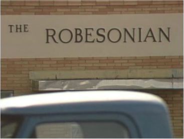
William Kunstler (1989)
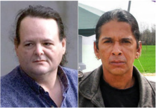
Eddie Hatcher & Timothy Jacobs
In re Kunstler,
914 F. 2d 505 (4th Cir. 1990)
Summary:
Eddie Hatcher and Timothy Jacobs hijacked the offices of the Robeson, North Carolina newspaper The Robesonian and took its employees hostage. They eventually surrendered, in exchange for a promise that the governor would investigate their claims of government corruption. The federal government prosecuted Hatcher and
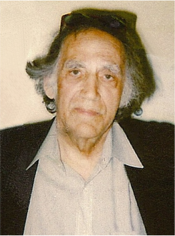
Jacobs, but they were acquitted. Then, North Carolina prosecuted Hatcher and Jacobs. Barry Nakell, Lewis Pitts, and William Kunstler filed a § 1983 against the Governor of North Carolina and other state officials, for improper prosecution. The district court dismissed the action and imposed Rule 11 sanctions on Nakell, Pitts, and Kunstler. The circuit court affirmed, but remanded for reconsideration of the sanctions.
CHAPMAN, Circuit Judge:
Three attorneys appeal the award of Rule 11 sanctions against them in the amount of $122,834.28. Appellants were sanctioned following the dismissal of a 42 U.S.C. § 1983 action, in which they represented certain plaintiffs seeking monetary damages and injunctive relief from the Governor of North Carolina, a number of North Carolina district attorneys, a sheriff, certain State Bureau of Investigation officers, the State Attorney General and others for an allegedly improper state criminal prosecution and harassment. We affirm in part, vacate in part, and remand with instructions.
I
The appellant attorneys are Barry Nakell, a professor at the University of North Carolina School of Law; Lewis Pitts, Director of the Christie Institute South, a public interest law firm in Carrboro, North Carolina; and William Kunstler, a nationally known civil rights attorney. The § 1983 action was connected with the appellants' earlier representation of two American Indians, Eddie Hatcher and Timothy Jacobs, in a federal criminal case.
On February 1, 1988, Hatcher and Jacobs staged an armed takeover of The Robesonian, a local newspaper in Robeson County, North Carolina. Hatcher and Jacobs held twenty hostages and charged the State District Attorney and the Sheriffs Office with corruption and criminal misconduct. Hatcher and Jacobs surrendered to federal authorities in exchange for a promise that a Governor's Task Force would investigate their complaints. The Task Force ultimately announced that it had found no evidence to support Hatcher's and Jacobs' charges.
Hatcher and Jacobs were acquitted of federal criminal charges on October 14, 1988, but North Carolina District Attorney Joe Freeman Britt announced that Hatcher and Jacobs might face state indictments. Soon after that announcement, Hatcher began a petition drive seeking to have Hubert and Kevin Stone removed from the Sheriff's Office. The Robeson Defense Committee, which had supported Hatcher in his federal trial, supported the petition drive. In November 1988, newspaper reports indicated that the State Bureau of Investigation was investigating whether there had been a conspiracy in the takeover of The Robesonian.
Appellants Barry Nakell and Lewis Pitts contacted the Attorney General's office to express their concern that SBI agents would intimidate citizens who were working with Hatcher in the petition drive. The Attorney General responded that no action would be taken by his office because he did not believe that the SBI was engaged in any abuse of process. Attorney Nakell alleges that the Deputy Attorney General orally admitted that the decision was political.
Attorney Pitts volunteered legal assistance to anyone on the Robeson Defense Committee subjected to harassment because of their participation in the petition drive. Appellants allege that six members of the Defense Committee contacted Attorneys Pitts and Nakell with claims of harassment by SBI agents and the Sheriff's Department, primarily involving surveillance and questioning.
On December 6, 1988, Hatcher and Jacobs were indicted on state charges. After the indictment, Jacobs fought extradition from New York. Hatcher was in federal custody in California.
By late December 1988, appellants contend that they believed that Jacobs' extradition, the pending state prosecutions, and an alleged pattern of activity by the District Attorney and his staff, members of the Sheriffs Department, and the SBI raised constitutional concerns which could only be resolved by a civil suit, because public officials were unresponsive. Appellants contend that they also believed that there was an illegal campaign to split Jacobs from Hatcher, and to interfere with Jacobs' right to counsel by persuading him to hire local counsel.
Attorneys Pitts and Nakell contend that they initially refrained from filing the complaint in hopes of enhancing Jacobs' plea bargaining opportunities, but Mr. Nakell filed the complaint on January 31, 1989, the eve of the one-year anniversary of the armed takeover of The Robesonian, and he called a press conference to announce the filing. An amended complaint, signed by all three appellants, was filed on March 16, 1989.
The suit named eight plaintiffs, including various members of the Robeson Defense Committee, and Jacobs and Hatcher. The thirty-page amended complaint names nineteen defendants, including two district attorneys and members of their staffs, five SBI agents, the SBI Director, the Sheriff of Robeson County and five Deputy Sheriffs, the Attorney General of North Carolina, and the Governor of North Carolina. The complaint alleges First Amendment and Sixth Amendment violations concerning an alleged campaign of intimidation of political activity, and efforts to induce Jacobs to testify against Hatcher. All defendants were sued in their official and individual capacities, except the Governor, who was named only in his official capacity in a count seeking an injunction against extradition. The complaint also sought injunctions against the pending state criminal prosecutions, and against the defendants' harassment and interference with the attorney-client relationship established by Jacobs. The complaint sought damages against all individually named defendants and Robeson County.
After the case was filed, appellants sought expedited discovery to depose defendant SBI agent Bowman, who was the case agent in the state's pending criminal action against Jacobs and Hatcher. The defendants moved for a protective order claiming that discovery was improperly sought to obtain information concerning the state criminal proceedings, which plaintiffs could not otherwise obtain. The district court did not rule on this motion prior to the dismissal of the case.
In late March 1989, Jacobs, having failed in resisting extradition, was returned to North Carolina. In April, Jacobs agreed to a plea bargain. Appellants contend that a variety of events
then caused them to reevaluate the viability of their civil suit, and to conclude that dismissal was appropriate.
On April 20, Mr. Nakell called Joan Byers, a Special Deputy Attorney General, seeking defendants' approval to a stipulated dismissal under Rule 41(a)(1)(ii). Byers would not stipulate to a dismissal under Rule 41(a)(1), but authorized appellants to state that defendants did not object to a dismissal under Rule 41(a)(2). Appellants proceeded under Rule 41(a)(2), and the order dismissing the case was entered on May 2, 1989.
On June 13, 1989, the state defendants filed their Rule 11 motion, and the county defendants filed a similar motion for sanctions on July 5. On August 8, appellants responded to the Rule 11 motions and requested an evidentiary hearing. On September 5, appellants filed a Rule 11 motion seeking sanctions against the appellees. On September 8, the court heard arguments of counsel and shortly thereafter requested submissions by defendants' counsel of their fees and expenses. On September 29, the district court imposed Rule 11 sanctions upon appellants, and dismissed appellants' Rule 11 motion. Sanctions against appellants included full fees and costs of $92,834.28 and $10,000 additional sanctions against each appellant based upon the baseless claims which appellants had taken care to publicize. We affirm the district court's findings that appellants violated all three prongs of Rule 11, but vacate and remand for reconsideration of the appropriate sanction.
SANCTIONS AFTER DISMISSAL
Initially, we must determine whether the defendants' failure to notify the plaintiffs or the court prior to dismissal that defendants intended to file a Rule 11 motion should have precluded consideration of the Rule 11 motion. Appellants cite
Barr Labs., Inc. v. Abbott Labs.,
where the Second Circuit affirmed the denial of a Rule 11 motion filed after a stipulated dismissal under Rule 41(a)(1)(ii). There, the defendant's attorney did not indicate an intention to seek Rule 11 sanctions prior to dismissal and implied in a letter to plaintiffs counsel, prior to the dismissal, that sanctions would not be sought if the case were voluntarily dismissed. The
Barr
court enunciated a rule "prohibiting a motion for Rule 11 sanctions after the execution of a stipulation of dismissal without a reservation of the right to move for such relief."
The present case is different from
Barr
because it does not involve a stipulated dismissal, which requires opposing counsel to sign the dismissal order. We have a dismissal under Rule 41(a)(2), which does not require a stipulation by the defendants. No court has adopted a rule prohibiting a motion for Rule 11 sanctions after a dismissal with prejudice under Rule 41(a)(2).
In addition, unlike
Barr,
there is no evidence that defendants indicated that they would not pursue Rule 11 sanctions. We decline to extend
Barr
to dismissals under Rule 41(a)(2).
Appellants also argue that since Rule 41 (a)(2) specifies that dismissal is subject to such "terms and conditions as the court deems proper," the potential for Rule 11 sanctions should be stated
by a defendant as a condition to a dismissal. We disagree. Rule 41(a)(2) does not require the defendant or a court to indicate the possibility of Rule 11 sanctions as a "term or condition" of a plaintiffs dismissal. Recently, in
Cooter & Gell v. Hartmarx Corp.,
the Supreme Court hypothesized that even a Rule 11 sanction which prohibited refiling a complaint dismissed without prejudice under Rule 41 (a)(1) would not be a "term or condition" placed upon the dismissal. Waiver of a Rule 11 motion may not be a condition to dismissal because a decision not to dismiss may not prevent the imposition of sanctions for an improvidently filed complaint. "As the 'violation of Rule 11 is complete when the paper is filed,' a voluntary dismissal does not expunge the Rule 11 violation."
There may be circumstances under which Rule 11 sanctions should not be granted after the voluntary dismissal of a case,
i.e.,
a defendant has indicated an intent not to pursue sanctions, or the motion is filed an inordinately long time after the dismissal. "Although Rule 11 does not establish a deadline for the imposition of sanctions, the Advisory Committee did not contemplate there would be a lengthy delay prior to their imposition." However, these considerations are equitable, and must be resolved on a case by case analysis. The party seeking sanctions may avoid such problems by notifying his opponent and the court of his intention to pursue sanctions at the earliest possible date.
As the Supreme Court has recently confirmed, there is no jurisdictional bar to the imposition of sanctions after a voluntary dismissal.
In order to comply with Rule 11 's requirement that a court "shall" impose sanctions "if a pleading, motion, or other paper is signed in violation of this rule," a court must have the authority to consider whether there has been a violation of the signing requirement regardless of the dismissal of the underlying action.
"The only time limitation in filing Rule 11 arises out of equitable considerations." The defendants filed their motion six weeks after the Rule 41(a)(2) dismissal, the appellants were not prejudiced by appellees' delay in filing, and the district court's consideration of the motion was proper.
Ill VIOLATIONS OF RULE 11
Rule 11 states, in relevant part:
The signature of an attorney or party constitutes a certificate by the signer that the signer has read the pleading, motion, or other paper; that to the best of the signer's knowledge, information, and belief formed after reasonable inquiry it is well grounded in fact and is warranted by existing law or a good faith argument for the extension, modification, or reversal of existing law, and that it is not interposed for any improper purpose, such as to harass or to cause unnecessary delay or needless increase in the cost of litigation. If a pleading, motion, or other paper is signed in violation of this rule, the court, upon motion or upon its own initiative, shall impose upon the person who signed it, a represented party, or both, an appropriate sanction, which may include an order to pay to the other
party or parties the amount of the reasonable expenses incurred because of the filing of the pleading, motion, or other paper, including a reasonable attorney's fee.
The district court found that the three appellants violated all three prongs of Rule 11 by failing to make a reasonable inquiry to determine that the complaint stood well grounded in fact and warranted by existing law, and by filing the complaint for an improper purpose. We review all aspects of the district court's Rule 11 determinations under an abuse-of-discretion standard.
A. Mr. Kunstler's Liability
Before reviewing the specific violations of Rule 11 found by the district court, we note that Mr. Kunstler's affidavit states that he "did not actively participate in the instant litigation, relying on Prof. Barry Nakell, who was on the scene, to prepare and file it." The district court stated that "in light of the serious allegations in the complaint, Mr. Kunstler's total reliance on other counsel is itself a violation of Rule 11." This finding is supported by a recent pronouncement of the Supreme Court. Mr. Kunstler's reliance on others was indeed an improper delegation of his responsibility under Rule 11 to certify that the pleading filed over his name was well grounded in fact and in law.
The signing attorney cannot leave it to some trusted subordinate, or to one of his partners, to satisfy himself that the filed paper is factually and legally responsible; by signing he represents not merely the fact that it is so, but also the fact that he personally has applied his own judgment.
"The purpose of Rule 11 as a whole is to bring home to the individual signer his personal, nondelegable responsibility." Having failed in his responsibility, Mr. Kunstler may not now be heard to protest that he does not share in any violations of Rule 11 which are evident on the face of the complaint.
B. Well Grounded in Fact
The district court based sanctions in part on a violation of the first prong of Rule 11 — finding that the complaint was not well grounded in fact. An objective test is used "to determine the reasonableness of a lawyer's prefiling investigation." "Blind reliance on the client is seldom a sufficient inquiry." Mr. Nakell and Mr. Pitts have argued that they had "an intimate knowledge of the county and its people; factors which made them professionally capable of assimilating and weighing the facts gathered prior to filing the civil suit." In light of that knowledge, the factual inaccuracies in the complaint are even more egregious.
The district court noted numerous misstatements of fact, such as the assertion that the district attorney "serves as the criminal prosecution arm of Defendant Robeson County and as such makes policy in police investigation and criminal prosecution matters for Defendant Robeson County." In fact, the District Attorney is an officer of the state, not an agent nor an employee of the county. Contrary to the complaint, defendants Britt, Townsend, and Sampson, and the
District Attorney's staff, are state officers, not agents or employees of Robeson County. The complaint alleges that District Attorney Britt refused and failed to discipline, train and supervise the Sheriffs deputies "under their control and supervision." District Attorneys possess no such power or responsibility.
Appellants acknowledge some errors, but contend they are "isolated" and thus do not warrant sanctions. We do not agree with this characterization. The errors pervade the complaint and concern information which either was or should have been known to appellants. The errors provide a false foundation for appellants' allegation of a county-wide "conspiracy," and are central to the complaint. Appellants also suggest that, under
Pembaurv. Cincinnati
(1986), state officials can sometimes establish county policy for purposes of § 1983 liability. Unlike
Pembaur, there is no provision of North Carolina law which suggests that the state officials in this case either could or did act to establish county policy.
Other causes of action were founded on allegations which utterly lacked any basis in fact. For example, the complaint alleged that the Governor, the Attorney General and District Attorney entered into a "no state prosecution" agreement, and this agreement was breached when the state prosecution commenced. The district court found that prior to filing their complaint, appellants
had access to the transcript of the negotiations leading to the hostage release agreement as well as a copy of the written agreement. Nothing in the agreement or in any of the negotiations, suggests an agreement that Hatcher and Jacobs would not face North Carolina charges, and none of the negotiators had the authority to so agree.
Moreover, North Carolina law does not grant the Governor or the State Attorney General the power to bind the state not to prosecute. Neither the Attorney General nor District Attorney Britt played any role in the hostage negotiations, but appellants now argue that unspecified evidence, obtainable through discovery, "could show" that a no prosecution agreement was made. While a lawyer may rely on discovery to reveal additional facts to support claims which are well grounded in fact, Rule 11 sanctions are appropriate when a lawyer attempts to use discovery to support outrageous and frivolous claims for which there is no factual support. Unsubstantiated claims such as these constitute an abuse of the judicial process for which Rule 11 sanctions were designed.
Appellants appear to have relied entirely upon discovery in the hope of finding some factual support for many of their claims. In their Memorandum and Opposition to Defendants' Motion for a Protective Order, appellants wrote:
Plaintiffs anticipate that as a result of deposing SBI defendant Bowman they will be in a position to apply to the Court for temporary injunctive relief and make the showing required by Rule 65(b) of the Federal Rules of Civil Procedure.
Appellants requested a temporary restraining order in their complaint. Rule 65(b) makes clear that a temporary restraining order may be granted only if
it clearly appears from specific facts shown by affidavit or by the verified complaint that immediate and irreparable injury, loss, or damage will result to the applicant before the adverse party or his attorney can be heard in opposition.
Rule 65(b) does not authorize counsel to request relief and then search through discovery for facts to support the relief already requested. The rule requires that "specific facts" be "shown" to the court with the request for relief. We agree with the district court that the appellants' request for relief and their indication that they were not "in a position to make the showing required by Rule 65(b)" without later discovery indicates an unacceptable level of pre-filing investigation.
We affirm the district court's findings that many of the allegations against state and local officials "have nothing to do with this case and are factually unsubstantiated." Allegations which suggest that the Sheriff is engaged in drug trafficking and that a black inmate died while in the Sheriff's custody are irrelevant. These allegations involve no injury to the plaintiffs, and the report of drug trafficking by the Sheriff's Office is wholly unsupported in fact. Appellants protest that these allegations were represented in the complaint only as beliefs of their clients, but this does not make them relevant to the complaint or less scandalous in nature. While irrelevant allegations, standing alone, may not be cause for Rule 11 sanctions, the existence of numerous irrelevant, unsubstantiated, and sensational allegations is an appropriate factor for a district court to consider in determining whether the pleading as a whole lacks adequate factual foundation.
In this case, the complaint was filled with irrelevant allegations not tied to specific injuries to plaintiffs,
i.e.,
general allegations of abusive behavior against blacks and Indians, and allegations that Robeson County is beleaguered by poverty, illiteracy, and violence. There was little basis for the allegation that Britt, Townsend, Thornburg and Morgan conspired to appoint Townsend as District Attorney and to use SBI agents as political police to discredit the Republican candidate, and that allegation was again irrelevant. Hatcher and Jacobs had been indicted prior to Townsend's appointment, and none of the other candidates for District Attorney suggested that they would not continue the prosecution. Appellants' arguments as to the relevance of such allegations are tangential at best and often strain credulity.
Although Mr. Nakell and Mr. Pitts filed lengthy affidavits detailing their factual inquiry, such affidavits do not provide factual or legal support for the inaccuracies noted by the district court. The number of hours allegedly spent by counsel in prefiling investigation does not dissuade us from affirming the district court's findings of Rule 11 violations. Given the adequate time to prepare and hours allegedly spent in preparation of the complaint, appellants have presented no excuse for the many clear factual errors in this pleading.
Appellants have argued that, despite the lack of pre-filing foundation for their claims, it was appropriate to include the claims because support for them could only be obtained through discovery. In
Kraemer v. Grant County,
the court held that sanctions were not warranted where
an attorney relied on client information to support a cause of action based on a theory of conspiracy, even though additional facts were needed to prove the claim. "If discovery is necessary to establish a claim, then it is not unreasonable to file a complaint so as to obtain the right to conduct that discovery." Despite this sweeping statement, there were in
Kraemer
a number of factors cautioning against sanctions which are not present here. In
Kraemer,
the attorney was a recent law school graduate, and had hired a private investigator to look into his client's allegations. The investigator's report did not discredit any part of the client's story and the prospective defendants refused to cooperate with the investigator. Only a single portion of the complaint — that dealing with the proof of state action — was ultimately found to be without support.
In the present case, appellants are experienced attorneys with both the time and the means to conduct a responsible factual investigation. The complaint contains myriad inaccuracies rather than a single error. Many of the factual inaccuracies could have been discovered by the most cursory investigation. The irrelevances are inexcusable considering the attorneys' experience. Indeed, it is remarkable that so many errors could have been undetected by appellants. The number of claims without factual foundation warrants sanctions, whether the errors stem from incompetency or wilful misconduct.
The need for discovery to complete the factual basis for alleged claims is not an excuse to allege claims with no factual basis. While we do not disagree with the result obtained in Kraemer
, we find that it is not applicable to the present case. A lawyer is an officer of the court, and he should never file a lawsuit without confidence that it has a reasonable basis in fact and is well grounded in law. For the purposes of Rule 11, the factual inquiry necessary to file a complaint is generally satisfied if all of the information which can be obtained prior to suit supports the allegations made, even though further facts must be obtained through discovery to finally prove the claim. However, a complaint containing allegations unsupported by any information obtained prior to filing, or allegations based on information which minimal factual inquiry would disprove, will subject the author to sanctions.
C. Well Grounded In Law
The district court found that the complaint was not well grounded in law. We agree. Appellants contend that the strength of the legal basis of the complaint is demonstrated by their opponent's lengthy response to them, and the approval of a civil rights attorney, who reviewed and approved of, but did not sign, the complaint. The length of an opponent's response to a complaint does not validate the otherwise insubstantial claims therein, because a lengthy response may reveal less the merit of particular claims than the number of valid defenses to them. An opponent may have employed "scorched earth" tactics in composing a response far beyond what is required to oppose frivolous claims. Nor is the Rule 11 standard of whether a "reasonable attorney in like circumstances would believe his actions to be factually and legally justified" satisfied merely by having another attorney review a complaint. The reviewing attorney may be unfamiliar with the true facts of the case, the factual and legal investigation conducted, or the law relevant to the complaint.
The district court enumerated several substantial claims without legal foundation. The court found no factual or legal basis for the double jeopardy claim to the state prosecution of Hatcher and Jacobs following the federal prosecution, because a subsequent prosecution by a different sovereign plainly does not constitute double jeopardy. Although a "tool of the same authorities" exception is possible in some circumstances, that exception may only be established by proof that State officials had little or no independent volition in their proceedings. In this case, however, the complaint alleged that the state officials instituted and controlled the state proceeding, which precludes the establishment of that exception. The district court also considered a quotation attributed to Mr. Pitts in a newspaper article that the state charges did not constitute double jeopardy. Although we caution the court against relying too heavily on press reports, we do not fault the district court for considering the statement.
The district court found without legal foundation the plaintiffs' claim that Hatcher's Fifth Amendment rights were damaged when the state tried to extract testimony from Jacobs. Fifth Amendment protection is personal to the individual whose testimony is being compelled and appellants as experienced attorneys should have been well aware of this. Appellants make no attempt to explain away this glaring blunder.
Appellants sought to enjoin state criminal proceedings, but the district court found that the Younger v. Harris
abstention doctrine clearly barred such relief. The court also found that Hatcher and Jacobs could have presented their federal constitutional claims to the state court. We agree that plaintiffs had no factual basis for claiming that the state prosecution was brought in bad faith, or without a reasonable expectation of conviction, because Hatcher and Jacobs had never denied taking hostages. Although appellants cite an Eighth Circuit case which suggests that the
Younger
abstention doctrine does not apply if "a prosecution was brought in retaliation for or to discourage the exercise of constitutional rights 'regardless of whether valid convictions conceivably could be obtained,"' that proposition has been rejected by this court. In
Suggs v. Brannon,
we upheld the use of the
Younger
abstention doctrine when plaintiffs claimed that their prosecution under obscenity laws chilled their First Amendment rights.
The district court also noted "serious standing problems with many of the plaintiffs' claims." For example, on the claim that the prosecution chilled Hatcher and Jacobs' First Amendment expression, the complaint presented no facts showing specific harm or threat of harm.
Appellants respond that they did show concrete and specific harm insofar as plaintiffs' participation in the petition drive was curtailed. However, Hatcher and Jacob's participation was not curtailed, and the district court's observation on their standing problem with respect to that claim is valid.
We therefore affirm the court's findings that the complaint on the whole was not well grounded in law.
D. Improper Purpose
Sanctions could have been imposed for the violations already discussed, but the district court also based the award of sanctions on appellants' improper purpose in filing the complaint. The type and number of Rule 11 violations are considered in determining the appropriate sanction, and it was proper for the district court to consider appellants' purpose. Although the district court first discussed "improper purpose" under Rule 11, whether or not a pleading has a foundation in fact or is well grounded in law will often influence the determination of the signer's purpose, and we suggest that a district court should consider the first two prongs of Rule 11 before making a determination of improper purpose.
Appellants argue that the district court's conclusions as to their purpose are clearly erroneous, because there is no evidence in the record to support the court's findings, or the findings are based on factual conclusions which were contested by affidavit. The district court concluded that sanctions would be appropriate based on the improper purpose of the lawsuit "even if the complaint had a proper legal and factual basis." Since we have affirmed the court's findings that the complaint in the instant case was not well grounded in law or in fact, we need not decide whether a complaint which is well grounded in law and in fact can be sanctioned solely on the basis that it was filed for an improper purpose. Rather, we look only to whether the court abused its discretion in finding that the complaint was filed for an improper purpose.
Rule 11 defines the term "improper purpose" to include factors "such as to harass or to cause unnecessary delay or needless increase in the costs of litigation." The factors mentioned in the rule are not exclusive. If a complaint is not filed to vindicate rights in court, its purpose must be improper. However, if a complaint is filed to vindicate rights in court, and also for some other purpose, a court should not sanction counsel for an intention that the court does not approve, so long as the added purpose is not undertaken in bad faith and is not so excessive as to eliminate a proper purpose. Thus, the purpose to vindicate rights in court must be central and sincere. Filing of excessive motions may sometimes constitute "harassment" under the rule even if the motions are well grounded. Likewise, filing a motion or pleading without a sincere intent to pursue it will garner sanctions.
We have previously stated that in order to determine "improper purpose," a district court must judge the conduct of counsel under an objective standard of reasonableness rather than assessing subjective intent. This test was derived from
Zaldivar v. City of Los Angeles,
where it was stated that "harrassment under Rule 11 focuses upon the improper purpose of the signer, objectively tested, rather than the consequences of the signer's act, subjectively viewed by the signer's opponent." In other words, it is not enough that the injured party subjectively believes that a lawsuit was brought to harass, or to focus negative publicity on the injured party; instead, such improper purposes must be derived from the motive of the signer in pursuing the suit. An opponent in a lawsuit, particularly a defendant, will nearly always subjectively feel that the lawsuit was brought for less than proper purposes; plaintiffs and defendants are not often on congenial terms at the time a suit is brought. However, a court must ignore evidence of the injured party's subjective beliefs and look for more objective evidence of the signer's purpose.
There is some paradox involved in this analysis, because it is appropriate to consider the signer's subjective beliefs to determine the signer's purpose in filing suit, if such beliefs are revealed through an admission that the signer knew that the motion or pleading was baseless but filed it nonetheless. This evidence may be said to be "objective" in the sense that it can be viewed by a court without fear of misinterpretation; it does not involve difficult determinations of credibility. Circumstantial facts surrounding the filing may also be considered as evidence of the signer's purpose. Repeated filings, the outrageous nature of the claims made, or a signer's experience in a particular area of law, under which baseless claims have been made, are all appropriate indicators of an improper purpose.
The district court concluded that plaintiffs' counsel never intended to litigate this § 1983 action and that counsel filed it for publicity, to embarrass state and county officials, to use as leverage in criminal proceedings, to obtain discovery for use in criminal proceedings, and to intimidate those involved in the prosecution of Hatcher and Jacobs.
The court drew its conclusions without the aid of an evidentiary hearing, but relied upon the evidence before it. The court's first conclusion, that counsel never intended to litigate the action, is the one which most clearly supports sanctions based on a finding of improper purpose. The fact that so many allegations in the complaint lacked a basis in law or in fact strongly supports the court's finding of improper purpose. The existence of baseless allegations does not alone require a finding of improper purpose, because inexperience or incompetence may have caused their inclusion in a pleading, rather than or in addition to willfulness or deliberate choice. However, in this case counsel are clearly not inexperienced, and the number and magnitude of claims without foundation suggests that incompetence is not the cause for such allegations in the complaint. This court is left with the conclusion, drawn by the district court, that counsel wilfully included the baseless claims. If counsel wilfully files a baseless complaint, a court may properly infer that it was filed either for purposes of harassment, or some purpose other than to vindicate rights through the judicial process. We therefore affirm the district court's finding that appellants violated the improper purpose prong of Rule 11.
In addition to relying upon the complaint itself, the district court inferred an improper purpose from the timing of the filing of the complaint, on the eve of the anniversary of the takeover of The Robesonian, and some time after the alleged constitutional violations began. The court also viewed with suspicion the timing and nature of the dismissal of the complaint, which occurred after Jacobs lost his extradition fight in the criminal case, and before any significant discovery might have given notice to the plaintiffs that their claims were not valid. The district court dismissed as incredible appellants' explanations for dismissal, which contended that many of the claims had become moot through a series of events. The district court found it "absurd" to think that the wide-spread conspiracy involving high-level state and public officials had suddenly become unimportant by May 2, 1989. The court noted that the basis of the complaint — the breach of the alleged no-prosecution agreement — still existed even after Hatcher's and Jacobs' guilty pleas to the state charges. The court stated that the double jeopardy claims, damage claims, and other requests for equitable relief, if ever valid, did not cease being valid. In
finding improper purpose, the district court was also influenced by the outrageous nature of the claims made.
The affidavits submitted by counsel strongly disputed the court's conclusions as to the timing of the filing and of the dismissal of the suit, and claimed that no improper motive influenced the timing of events. As to the decision to dismiss, appellants argued that it was based solely on financial considerations and the necessity of devoting professional resources elsewhere. Appellants argue that many equitable claims had become moot, and that the prospect for damages on the remaining claims did not warrant the expense of continuing the suit. However, the district court's determination that these explanations are not reasonable or believable, in light of all of the evidence surrounding the filing of the complaint and the frivolous nature of the allegations made, is not clearly erroneous.
The district court noted other evidence which suggested that appellants' purpose in filing the complaint was not to vindicate plaintiffs' rights, such as appellants sending a copy of the complaint to the state judge who likely would have tried Hatcher and Jacobs in the criminal case. The court also noted a quotation reported by the media, in which Mr. Pitts allegedly suggested that the suit was dropped after the Attorney General's office showed strong opposition to the suit. The court further considered an affidavit by New York attorney Neal Rose concerning Mr. Pitts' alleged admission that the suit was commenced as leverage and lacked a factual basis, although that affidavit was contradicted by an affidavit by attorney Alan Rosenthal. In light of other evidence which supports the court's finding of improper purpose, we cannot say that it was an abuse of discretion for the court to consider these matters as additional support, even though determinations of credibility are best made after an evidentiary hearing.
In concluding that appellants had never intended to litigate their suit, the district court also concluded that circumstances surrounding the case, when viewed as a whole, supported the conclusion that appellants' primary motives in filing the complaint were to gain publicity, to embarrass state and county officials, to gain leverage in criminal proceedings, to obtain discovery for use in criminal proceedings, and to intimidate those involved in the prosecution of Hatcher and Jacobs. At least some of these motives would not warrant sanctions under the improper purpose portion of Rule 11, if appellants' central purpose in bringing suit had been to vindicate rights of the plaintiffs. Holding a press conference to announce a lawsuit, while perhaps in poor taste, is not grounds for a Rule 11 sanction, nor is a subjective hope by a plaintiff that a lawsuit will embarrass or upset a defendant, so long as there is evidence that a plaintiff's central purpose in filing a complaint was to vindicate rights through the judicial process. In this case, however, there was no proper purpose for appellants' filing of the suit, and the district court's consideration of other possible motives for the suit based on the evidence available was proper.
We have affirmed the district court's conclusion that sanctions were warranted based on the improper purpose prong of Rule 11 because it is not clearly erroneous and is supported by facts such as the baseless allegations made, appellants' legal experience, and the cumulative nature of the evidence. However, we urge district courts to exercise special caution when evaluating a
signer's purpose under Rule 11. When there are issues of credibility, disputed questions of fact, and rational explanations of purpose given, an evidentiary hearing may well be necessary to resolve the issues. This is particularly true when large sanctions are being considered on the ground of improper purpose as well as failure to comply with the first two prongs of Rule 11. We do not find that the court erred in failing to hold an evidentiary hearing in this case, because the cumulative nature of the evidence, as well as our earlier findings on the frivolousness of the allegations made in the complaint and the lack of a legal or factual basis, convinces us that the court's finding of improper purpose is not clearly erroneous and would not have been altered by an evidentiary hearing.
IV DUE PROCESS
Appellants argue that the district court should not have found a violation of the "improper purpose" prong of Rule 11 without holding an evidentiary hearing. We disagree. Due process does not require an evidentiary hearing before sanctions are imposed, even when sanctions are imposed in part under the improper purpose prong of Rule 11. The Advisory Committee Note on Rule 11, indicates that satellite litigation over sanctions and separate hearings should be limited to the extent possible. "The court must to the extent possible limit the scope of the sanction proceedings to the record."
In determining whether and to what extent a hearing is required prior to the imposition of sanctions, we are guided by the Advisory Committee Note to Rule 11 and the reasoning of Donaldson v. Clark
:
The Advisory Committee Note indicates some of the matters to be considered: (1) the circumstances in general; (2) the type and severity of the sanction under consideration; and (3) the judge's participation in the proceedings, the judge's knowledge of the facts, and whether there is need for further inquiry. The Advisory Committee Note observes that "in many situations the judge's participation in the proceedings provides him with full knowledge of the relevant facts and little further inquiry will be necessary."
When an attorney has failed to present necessary factual support for claims despite several opportunities to do so, for example, further hearing on the sanctions issue may well be not only unnecessary but also a waste of judicial resources. On the other hand, when a court is asked to resolve an issue of credibility or to determine whether a good faith argument can be made for the legal position taken, the risk of an erroneous imposition of sanctions under limited procedures and the probable value of additional hearing are likely to be greater. Prior opportunities to respond to Rule 11 charges will also influence the extent to which further hearing is necessary.
As mentioned by the Advisory Committee, the type and severity of the sanction are necessary elements in the calculus. The more serious the possible sanction both in absolute size and in relation to actual expenditures, the more process that will be due.
Even if an evidentiary hearing is not required in every "improper purpose" case, appellants argue that such hearing was required in this case. Although the number of credibility determinations which the court made without an evidentiary hearing should have suggested to the court that an evidentiary hearing would have been of value, we affirm the court's findings that appellants violated all three prongs of Rule 11 because the findings are not clearly erroneous even excluding some evidence of "improper motive" which appellants contested.
The district judge's participation in the proceedings was adequate to give him full knowledge of the relevant facts without the necessity of an evidentiary hearing. The district court had before it the pleadings, the summary judgment motions of the state defendants and the 12(b) motion of the county defendants. We also find that counsel were given an adequate opportunity to contest the court's determinations that Rule 11 was violated. The district court allowed appellants to submit affidavits, and voluminous written legal arguments. The district judge also heard oral argument. We find that due process requirements were satisfied by the opportunities appellants were given to respond to the charges that their complaint violated Rule 11.
However, although we find that counsel had an adequate opportunity to contest the court's finding that Rule 11 was violated, we find that appellants were not given an adequate opportunity to respond to the type and amount of sanction imposed, particularly in light of the large monetary sanction. Appellants were given no opportunity to contest the fee statements submitted, and the amount of the sanction was largely the result of those statements. Under the facts of this case, particularly the amount of the sanction, due process requires that appellants have some opportunity to contest the amount of the sanction imposed. We therefore vacate the sanction imposed. As discussed below, we vacate the type and amount of sanction chosen by the district court for certain additional reasons. On remand, under the guidelines set forth below the appellants will be given an appropriate opportunity to respond to the type and the amount of the sanction.
V AMOUNT OF SANCTION A. Attorney Fees Portion
Rule 11 requires that "an appropriate sanction" be imposed upon those who violate its requirements. Appellants argue that the amount of sanctions was inappropriate, in part because the district court used the Rule to shift fees and compensate the defendants, rather than to deter improper litigation. We agree and vacate the amount of the monetary sanction.
We have previously held that the least severe sanction adequate to serve the purposes of Rule 11 should be imposed. It is clear that Rule 11 should not blindly be used to shift fees. In this instance, it appears that the district court erred in assuming that "the first purpose of sanctions under Rule 11 is to compensate the offended parties." In establishing the amount of the sanction, the district court improperly focused on providing "compensatory sanctions." The amount of expense borne by opposing counsel in combatting frivolous claims may well be an appropriate factor for a district court to consider in determining whether a monetary sanction
should issue and if so, in what amount. However, it is clear that the primary, or "first" purpose of Rule 11 is to deter future litigation abuse. A district court can and should bear in mind that other purposes of the rule include compensating the victims of the Rule 11 violation, as well as punishing present litigation abuse, streamlining court dockets and facilitating court management. But the amount of a monetary sanction should always reflect the primary purpose of deterrence.
When a monetary award is issued, a district court should explain the basis for the sanction so a reviewing court may have a basis to determine whether the chosen sanction is appropriate. A district court should consider the four factors recently enumerated by the Tenth Circuit in
White v. General Motors Corpr.
(1) the reasonableness of the opposing party's attorney's fees; (2) the minimum to deter; (3) the ability to pay; and (4) factors related to the severity of the Rule 11 violation.
1) Reasonableness (lodestar) calculation. Because the sanction is generally to pay the opposing party's "reasonable expenses including a reasonable attorney's fee," incurred because of the improper behavior, determination of this amount is the usual first step. The plain language of the rule requires that the court independently analyze the reasonableness of the requested fees and expenses. The injured party has a duty to mitigate costs by not overstaffing, overresearching or overdiscovering clearly meritless claims. In evaluating the reasonableness of the fee request, the district court should consider that the very frivolousness of the claim is what justifies the sanctions.
Attorney time which is attributed to responding to the media, or to claims within a pleading which do not merit sanctions, should be excluded from consideration. Only attorney time which is in response to that which has been sanctioned should be evaluated. In this case, it is appropriate for the court to consider on remand whether the large amount of time devoted to the pursuit of sanctions was warranted, and whether the injured parties failed to mitigate their costs by delaying their pursuit of sanctions until after the dismissal. It would also be appropriate for the district court to reduce the amount of any fees awarded based on appellees' failure to give earlier notice to appellants that their conduct warranted Rule 11 sanctions. While the analysis of the reasonableness of costs may call for fairly detailed affidavits, this requirement is not intended to require evidentiary hearings.
Although amici curiae for appellants argue that sanctions based in whole or in part on attorney's fees require the same procedures of discovery, briefing, and argument allowed in attorney's fees cases, we have already stated that sanctions, unlike attorney's fees, are not primarily intended to compensate the prevailing party. Because the purposes of sanctions differ from those of attorney's fees, the amount of process due the offending party differs.
The determination of the type or amount of the sanction imposed comes only after the offending party has had an opportunity to defend against the imposition of any sanction. Presumably, a party's interest in the kind and amount of a sanction is of less import than his or her interest in the decision to impose any sanction. As stated, a district court is required to choose the least
severe sanction adequate to accomplish the purpose of Rule 11. Thus, a monetary sanction should never be based solely on the amount of attorney's fees claimed by the injured party, even where a court determines that the amount of the sanction should equal the fees claimed by the injured party. As we have previously stated, "reasonable" attorney's fees in the context of Rule 11 "does not necessarily mean actual expenses and attorney's fees." Because the amount of a monetary sanction is not based solely on any claimed amount of attorney's fees, but rather on all of the factors listed herein, the risk of an erroneous calculation based on fee statements is less troublesome in the context of a Rule 11 sanction than in attorney's fees cases. We also bear in mind the interest in avoiding additional hearings for purposes of calculating the amount of fees in the context of Rule 11. Given these considerations, we hold that a sanctioned party is not entitled to an evidentiary hearing or to all of the procedural safeguards available in the context of attorney's fees actions. Instead, a district court may permit a sanctioned party to respond to an opposing party's fee statements in its discretion. Of course, such discretion must be exercised with proper considerations of due process. Where a court determines that a large monetary sanction should issue, and the amount is heavily influenced by an injured party's fee statements, as was the case here, the court should permit the sanctioned party to examine and contest the injured party's fee statements as an aid to the court's own independent analysis of the reasonableness of the claimed fees.
2) Minimum to deter. As we have already stated, the primary purpose of sanctions is to deter attorney and litigant misconduct, not to compensate the opposing party for its costs in defending a frivolous suit. It is particularly inappropriate to use sanctions as a means of driving certain attorneys out of practice. Such decisions are properly made by those charged with handling attorney disbarment and are generally accompanied by specific due process provisions to protect the rights of the attorney in question. The amount of sanctions is appropriate only when it is the "minimum that will serve to adequately deter the undesirable behavior." Thus, the limit of any sanction award should be that amount reasonably necessary to deter the wrongdoer.
A district court must constantly bear in mind the limited purposes of Rule 11, particularly in a case such as this, where a court may disagree with aspects of counsel's conduct which fall outside of the scope of Rule 11. Of course, a court must also constantly bear in mind that the rule is not to chill the bringing of facially valid lawsuits, or a lawyer's creativity in introducing novel theories of recovery.
3. Ability to pay. The offender's ability to pay must also be considered, not because it affects the egregiousness of the violation, but because the purpose of monetary sanctions is to deter attorney and litigant misconduct. Because of their deterrent purpose, Rule 11 sanctions are analogous to punitive damages. It is hornbook law that the financial condition of the offender is an appropriate consideration in the determination of punitive damages. Inability to pay what the court would otherwise regard as an appropriate sanction should be treated as reasonably akin to an affirmative defense, with the burden upon the parties being sanctioned to come forward with evidence of their financial status.
Although the burden is upon the parties being sanctioned to come forward with evidence of their financial status, a monetary sanction imposed without any consideration of ability to pay would constitute an abuse of discretion. A court should refrain from imposing a monetary award so great that it will bankrupt the offending parties or force them from the future practice of law. Generally, the smaller the amount of the monetary sanction imposed, the greater the likelihood that a court's consideration of the ability to pay will not want for lack of the formal submission of evidence on a sanctioned party's financial status. When the monetary sanction is large, however, the parties should generally be given the opportunity to submit affidavits on their financial status, or to submit such other evidence as the court's discretion permits. In this case, the amount of the monetary sanction originally imposed was substantial, and the parties should have been afforded the opportunity to submit evidence on the issue of whether the amount imposed was so great as to unfairly restrict their access to the courts or to otherwise curtail their ability to practice law or to cause them great financial distress.
4. Other factors. In addition, the court may consider factors such as the offending party's history, experience, and ability, the severity of the violation, the degree to which malice or bad faith contributed to the violation, the risk of chilling the type of litigation involved, and other factors as deemed appropriate in individual circumstances.
In this case, it is appropriate for the court to consider counsel's vast experience, the outrageous and scandalous nature of the claims made, and the improper purpose of the lawsuit. A court might also increase a sanction if one attorney has been previously sanctioned, because such conduct might indicate that the previous sanction was not enough to deter the repetition of the offense.
In addition to the four factors just stated, a district court must sometimes consider whether joint and several liability is appropriate, such as where sanctions are to be imposed against both a client and his counsel. In this case, joint and several liability among attorneys, who each signed a complaint in violation of Rule 11, was not inappropriate. Each attorney has a duty to ensure that the pleading he has signed comports with Rule 11. Issues of individual culpability do not arise where each sanctioned party has committed the same Rule 11 violations.
B. Additional Sanctions
In addition to imposing sanctions in the amount of attorney's fees claimed by the defendants, the district court imposed sanctions in the amount of $10,000 upon each appellant based on his conduct in wilfully filing outrageous claims and appellants' "pains to publicize the allegations through the media." We believe this sanction was error. Rule 11 does not confine courts to any maximum monetary sanction, nor does it even require courts to restrict themselves to monetary penalties. However, Rule 11 must be accorded its plain meaning. The text of the Rule clearly pertains only to a "pleading, motion, or other paper." Rule 11 does not encompass all conduct within judicial proceedings, and it clearly does not reach conduct outside of the judicial process. In this case, it appears the court imposed sanctions in part based on appellants' publication of
their baseless claims through the media. While such publication may not be actionable as libel or slander, and is reprehensible, Rule 11 was clearly not designed to encompass such conduct.
CONCLUSION
In sum, we affirm the findings of the district court which led to the imposition of Rule 11 sanctions in this case against plaintiffs' attorneys. However, we vacate the sanction imposed, because it was based on improper considerations and the size of the sanction required the district court to allow sanctioned counsel an opportunity to respond, at least to the fee statements on which the sanction was based. On remand, the district court should consider the factors which we have adopted prior to determining the sanction which should be imposed.
Questions:
1. Do you agree with the district court's conclusion that Nakell, Pitts, and Kunstler violated Rule 11? Do you find Kunstler's defense compelling?
2. Should courts impose Rule 11 sanctions on attorneys representing clients pro bono? Should they be more reluctant to impose sanctions?
DIVISION OF CORRECTIONS
CORRESPONDENCE REGULATIONS
MAIL. WILL NOT BE DELIVERED WHICH DOES NOT CONFORM WITH THESE RULES
No. 1 — Only 2 letters each week, not to exceed 2 sheets letter-size 8 1/2 x 11" and written
on one side only, and if ruled paper, do not write between lines.
Your complete name
must be signed at the close of your letter.
Clippings, stamps, letters
from other people,
stationery
or
cash must not be enclosed
in your letters.
No. 2 — All
letters
must be addressed in the
complete prison name
of the inmate.
Cell number,
where applicable, and
prison number
must be placed in lower left corner of envelope, with your complete name and address in the upper left corner.
No. 3 —
Do not send any packages without a Package Permit.
Unauthorized
packages
will be destroyed.
No. 4 —
Letters
must be written in English only.
No. 5 —
Books, magazines, pamphlets,
and
newspapers
of reputable character will be delivered
only if
mailed direct from the publisher.
No. 6 --
Money
must be sent in the form of
Postal Money Orders
only, in the inmate's complete prison name
and prison number.
INSTITUTION
CELL NUMBER
Table captionNAME__ NUMBER
Table captionJ~Y\
7~7 g -5~yprgm e
dao
\-7Lhii
7c7 Sfk/cs
HZ'
<2
M X i n er 7
a
*
-
1
-
r f
^ ^ i
A «
^
)•>
XD> C7,
'
,
/"
a/a ye
nr
e° u~a')'~/
/</
3
7 7~/o)n r
■)—
/7r<g
yyy/ /
VS,
>
<af
/Te
yXz
0
m
2
)"/ x9/r«-c./e«/
//. X S°./JeL-X Ylr?
rr ./
J
"T
a <
Aa
//tg.
5 <r
/ xi 1"-
J~Z
j
1/ s r > s>)-> S'
5\7c7
/"0
/^/ar/cXf?
r 7
j
Atna ST7a /
«e
ifa ~
11
0
_r.'iso.
<£>7 7/a
r~/</o
Z, .
7X-e.
A/a
yia y-aA />~
1
1 v <r < <e a 7 f A
«Z7
, fx*q/ S/A 7c
s~
7 A
Vn g»
s
?7
0
7
A
■g ^
«-X/~7 a
>7g)) ^/g e g
7r<r? Y / (3
/
A
g—
n n . n
.o /
7
/ ^ g >
7<3
7
7A v t/rii 7-c/sTa/sLS
^ ^ /
7
/ J/X /'/ / 'Z77 * *
7
s?
<r
A ss ut/ 'll
zo/j
ms y /.
rl/A
a
A S/oiia
/ /? / s
JAa
v?
a ")-<7 X' X &
AIazj
T't XI
^ a l/l/rj 7~4 A T'-a-^ Xa )"cr
O /
/Aj y'O*
r 7*=>7 Z~t7
7/7 <—
Sy-n-r*
7oo irlA£ X /A
*r
S7o/^
MAIL WILL NOT BE DELIVERED WHICH DOES NOT CONFORM WITH THESE RULES
No. 1 — Only 2 letters each week, not to exceed 2 sheets letter-size 8 1/2 x 11" and written
on one side only,
and if ruled paper, do not write between lines.
Your complete name
must be signed at the close of your letter.
Clippings,
stamps, letters
from other people,
stationery
or
cash must not be enclosed
in your letters.
No. 2 — All
letters
must be addressed in the
complete prison name
of the inmate.
Cell number,
where applicable, and
prison number
must be placed in lower left corner of envelope, with your complete name and address in the
upper left corner.
No. 3 —
Do not send any packages without a Package Permit.
Unauthorized
packages
will be destroyed.
No. 4 —
Letters
must be written in English only.
No. 5 --
Books, magazines, pamphlets,
and
newspapers
of reputable character will be delivered
only if
mailed direct from the publisher.
No. 6 --
Money
must be sent in the form of
Postal Money Orders
only, in the inmate's complete prison name and prison number.
INSTITUTION
CELL NUMBER
NUMBER _
AA
t?
7Oy
#
s
<
2r/
^
*
z/
<
rs yfn
/3/ J / ify rj /} 7?
—
/a
j—
^
jE'
tj
r?A7~A
q
/trcr/s'/jzo
& /A.tz
A
r
A ul/
TTato.
A /£...
g
/s
—
y
^
ir
.
r-s'cr
7 &
—/
7s
. r?
//ere/ c as
7~
<3
-
M/)-/ A'^
>
7^
.
d a)i s/s
7*g ??
/"
a
7icf~
It* p
f
— '
gW)
7
\S*uus
g'e-cr/
T/*r>
j
S'.
±A
.^ « »■
f
* »-— " * -----
/4
/"/g
C
A
*•</
A ?)"<-
<S
?
<=
/ >-n
<=£^<i~r t~At
'
/S
/O
g
X /7
A
27
IS CZ dCfPy 07^ /A
c
zpef/
Zall
~ AJ
_
J -
_* . . _ __, y-_g*> /
'fziy <3
Wri T'
a 7 /faAcus Callus
—
<g
s s*r
??
7ko/
so 7i
g
y-'
7A
y^g
n A A
r
Tzj
e. & sjAc.r' 7ZL
_S»g? 277 tf
=
ya uyr\C?1 7s
G.u/%4
T
/
7/g
S Pt
/
yi yA
-«g
7 T/ #
tm
pE'o)'' Id/
y
/
f~a 7^
■
* i—* / /
—'
-
r r j f
-t
f
^ ^ ^
"
—w»
y/ t*
f-'/fiYid<3-
——
f£'r\S/</cr*z
7
t
/*r) 7A /
'
z
.
7
/^77
7
^
7
^ gg
Wr~'t (
3
T
<L')~?
r
'/ & ^czr-L
_o^_
VjTt 'fc* any £>jp
/ ^7 /
^
2
7 < ^ yv/
r- a f ?d
g/~ ^>~7^
ir/^)^y^O ygg/^//^27
7
^ ^7^
Y\/)r/ a Z' A
fs
? dc
v r
_
daf'e d
g 3
L2.-A.jj
—
£ A
1
Cc/y^
g
r-c/
'
#
<
2
?•) </ 5)^7 fZ
4
7^y
—
/ J
^
7
7
7
^
T~/ -c y?
Tg ^
<r
sti c?
s
J
~f g
t-ue-f.
/^<a A e us' v-2—y, ,>> __
/ /g. ^
^
f?r
^)Cgf J
//
<?;-?
_
(Sk/S & j s~ny 7A
ql A
-_7^ >4 ^ ^ ^y-y y Xy-r/
DIVISION OF CORRECTIONS
CORRESPONDENCE REGULATIONS
MAIL. WILL NOT BE D
: L. I V E R E D WHICH DOES NOT CONFORM WITH THESE R U I-E S
No. 1 — Only 2 letters each week, not to exceed 2 sheets letter-size 8 1/2 x 11" and written
on one side only,
and if ruled paper, do not write between lines.
Your complete name
must be signed at the close of your letter.
Clippings,
stamps, letters
from other people,
stationery
or
cash must not be enclosed
in your letters.
No. 2 -- All
letters
must be addressed in the
complete prison name
of the inmate.
Cell number,
where applicable, and
prison number
must be placed in lower left corner of envelope, with your complete name and address in the
upper left corner.
No. 3 —
Do not send any packages without a Package Permit.
Unauthorized
packages
will be destroyed.
No. 4 —
Letters
must be written in English only.
No. 5 --
Books, magazines, pamphlets,
and
newspapers
of reputable character will be delivered
only if
mailed
direct from the publisher. .. . . , , ,
No. 6 —
Money
must be sent in the form of
Postal Money Orders
only, in the inmate s complete prison name
and prison number.
INSTITUTION
CELL NUMBER _
NUMBER _
A
*
J
•
<7L
J
g
*^*
» ^7^
JS' &
A.
T/ <7 )1 CCT; S ^ L'L'czy
/ />,
a etc y c/ w I J~h 7-A -e
3
-, .yo // r ^ z-
/c
MAIL. WILL NOT BE DELIVERED WHICH DOES NOT CONFORM WITH THESE RULES
No. 1 -- Only 2 letters each week, not to exceed 2 sheets letter-size 8 1/2 x 11" and written
on one side only, and if ruled paper, do not write between lines.
Your complete name
must be signed at the close of your letter.
Clippings, stamps, letters
from other people,
stationery
or
cash must not be enclosed
in your letters.
No. 2 — All
letters
must be addressed in the
complete prison name
of the inmate.
Cell number,
where applicable, and
prison number
must be placed in lower left corner of envelope, with your complete name and address in the upper left corner.
No. 3 —
Do not send any packages without a Package Permit.
Unauthorized
packages
will be destroyed.
No. 4 --
Letters
must be written in English only.
No. 5 --
Books, magazines, pamphlets,
and
newspapers
of reputable character will be delivered
only if
mailed direct from the publisher.
No. 6 --
Money
must be sent in the form of
Postal Money Orders
only, in the inmate's complete prison name and prison number.
INSTITUTION __ CELL NUMBER_
NUMBER _
_
jist7
z
CGjOcj
A
/g»
Uc
z
/es
/u
<?
ur
m *-/*-
7*4^ /T/y* s i/s S7af}r mi/s.wy-i
_
£ S'
c
:
T'
3 7
<3
_
_
0
Y)
g
3 re/
J wn
< /
f A / 4* y# u r~
-_—
— wq-t
_
grr<
s
^
e
c/
)<? vn Tf
&
y
ca
Vj
£-/~eax:/'
7^ 3-
S'.
a
ffy-/e?
/ cz^c/f
e
ri-i
c
.
rr Wi/JnaoT'
g/
c
/
C & to)'* s
g.
/
r
//
W ^cd
*rss £ r A
cr isis
.
r^y &
cers
s
a/
u/
/
J-> 'Y
cf
dao.y-
2r
^/V
-
g>r
i
/ ?-)
V
/)
-
g
A &
us
g
c.o
ur~T
—7/4
qA
—
d/
trncf
ng
w/TA
y
/t r*
/^
/g7?r
<La
m n7/r
.
/c/ 7/
Z-
<?7-<rg?
Ao
e
/
C. & nn.n-ru
7/Sg/l
iy
*
^—
^ i*- 'fr
—
W & s <^am>3<£L
/W
To
v
'4 t/j—yoc. .ft 77*
3.2-g._3=:
-.. I , ,
y ^
T
~
' '•—*-*
•
o Vng2
/.
s
a "s
?i
_
c/g fg
)7 S K/ Q r_/
))
A
St
*
-
7g
_<*7^ >rx?/r/ /4
/, V y > > ^ V— —.^1 .jl 7 7^.0.
/i?
/
a/
^
d>T
jo ^ q
iz/
71
a
/2 u
/7^<r?'
4
/5
ia/Acl?^
Ais
—
Z
4
)*"/
<
?/
am
& (s
t
_
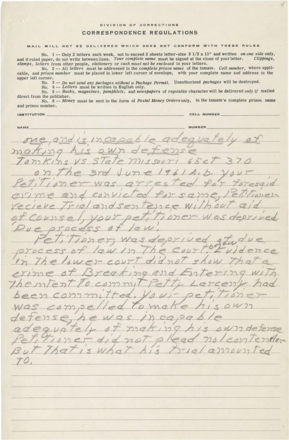
j 7
DIVISION OF CORRECTIONS
CORRESPONDENCE REGULATIONS
MAIL. WILL NOT BE DELIVERED WHICH DOES NOT CONFORM WITH THESE RULES
No. 1 — Only 2 letters each week, not to exceed 2 sheets letter-size 8 1/2 x 11" and written
on one side only,
and if ruled paper, do not write between lines.
Your complete name
must be signed at the close of your letter.
Clippings,
stamps, letters
from other people,
stationery
or
cash must not be enclosed
in your letters.
No. 2 -- All
letters
must be addressed in the
complete prison name
of the inmate.
Cell number,
where applicable, and
prison number
must be placed in lower left corner of envelope, with your complete name and address in the
upper left corner.
No. 3
--Do not send any packages without a Package Permit.
Unauthorized
packages
will be destroyed.
No. 4 --
Letters
must be written in English only.
No. 5 --
Books, magazines, pamphlets,
and
newspapers
of reputable character will be delivered
only if
mailed direct from the publisher.
No. 6 --
Money
must be sent in the form of
Postal Money Orders
only, in the inmate's complete prison name and prison number.
INSTITUTION _
CELL NUMBER
NUMBER _
Wp
"Po
T
-c.
T/\
yoy-e
Yn/ses
cram s
J f JS
,Tg
SyQ
ere./ /V
//y .yA ^ /A
g.
egtec/sv
^n
a 'f
/A
)
g,
H
/ez
S
/
grr^>r g
VA
£-
<r
s A /<A /£>
Z'TCu
j
erLtS LtTfj & .C.C
a TA
^
of
<g
7
lP iacl
gq/
y
A a j/ /*/
A*
/S'S*
7
r
v//f
7n
i
V/gg/
_d/erp-
/
^/c/ca
o
7
- —-
f~/ 0 /
—
J
3ax
—
"
x
2
. /
-_—
S
/afe#
/
P/
a
r;
o
4,
|
_
-
j
^
y-c/
P'A a
c? 7/~ ej' V'n/aly
s> r
-
^
~
r
—-
—?
—
// & T)
gCTeg
AFayAAcJx'eo
3?^
per
s & Ycl/A*
i*-/'My A
er
/' &
}-
<- -
?n~
i
a/ u
/>
s u/am
,
fif
7
c
j y-i-ns
. 7
A
f*
_
A/i ^ JQ
-
4J
)7
a
/Q g
.
////Vo)
r*
_
na
r#r~e
a
4
; )i a /o e. f/0")) c •pArTjy /
^
//gg
2
Chapter Notes
& ■
& nic/ Ay-u
^
X? AeSf
cz
A
5
"tg
d.qyj'ccp^
Ttt/ar
ii
<s
p
suAe
r/
AvY-
z.
/A/s
c/ctpqA
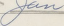
/TS±
M
1
ommission Expires 4*pt. 19, 1962
bmiued by American Surety Co. Of N>j>
Pro Se
Litigants
Typically, courts exempt
pro se
litigants from the requirements of Rule 11. While many
pro se complaints are frivolous, some
pro se
complaints are meritorious, and some have even caused dramatic changes in the law. For example, in 1962, Clarence Earl Gideon filed a handwritten pro se
petition for certiorari alleging that Florida had violated his civil rights by denying him legal representation. The Supreme Court granted his petition and held in
Gideon v. Wainwriqht,
372 U.S. 335 (1963
that the Sixth Amendment guarantees criminal defendants the right to representation.
By contrast,
Jonathan Lee Riches
filed more than 2600 complaints while he was incarcerated at the Federal Medical Center in Lexington, Kentucky, none of which were successful. His complaints alleged improbable harms and requested unusual forms of relief. For example, Riches filed a complaint alleging,
inter alia,
tort claims against Michael Vick for stealing his dogs and using them for dogfighting, then selling the dogs and using the proceeds to purchase missiles from Iran. Among other things, Riches asked the court to order Vick "to stop physically hurting my feelings and dashing my hopes." Eventually, the court prohibited Riches from filing any more complaints
in forma pauperis,
meaning that he would have to pay filing fees.
Questions:
1. How should courts evaluate
pro se
filings?
2. Should courts apply Rule 11 to
pro se
plaintiffs?
Afol.oXyn-it^r
o-P
\^L Co & 'bb ^'-'h V/s},
lop r?
f
Li^-T
%
Pit.t^-pp Se & ^S |to3
v
ooo
^oO
v
o
oo.oO B Uioo dolUis toc
ke4
6^
fol
d
«*,*! S,
Lu-er
..
Here's the last toast of the evening, here's to those who still believe. All the losers will be winners, all the givers shall receive. Here's to trouble-free tomorrows, may your sorrows all be small. Here's to the losers, bless them all.
92
The head on my shoulders is sorta loose, and I ain't got the sense God gave a goose. Lord, I ain't crazy, but I'm a nut.
93
Federal Rule of Civil Procedure 11 prohibits frivolous pleadings. But Model Rule of Professional Conduct 3.1 goes farther, prohibiting frivolous argument and abusive litigation tactics as well. In other words, under Rule 3.1, litigants must not only ensure that their pleadings are meritorious, but also that their litigation tactics are reasonable. Unsurprisingly, this rule is enforced almost entirely in the breach. Courts are reluctant to sanction attorneys for improper tactics, and when they do, the sanctions are often reversed as improperly imposed.
Nevertheless, good attorneys realize that the court is always watching. And they know that judges tend to reward good behavior and punish bad behavior. Sometimes, those rewards and punishments are explicit. But more often they are implicit, and come in the form of motions granted or denied.
Model Rule of Professional Conduct 3.1: Meritorious Claims & Contentions
A lawyer shall not bring or defend a proceeding, or assert or controvert an issue therein, unless there is a basis in law and fact for doing so that is not frivolous, which includes a good faith argument for an extension, modification or reversal of existing law. A lawyer for the defendant in a criminal proceeding, or the respondent in a proceeding that could result in incarceration, may nevertheless so defend the proceeding as to require that every element of the case be established.
Model Rule of Professional Conduct 3.1: Meritorious Claims & Contentions, Comments
rn-m
1. The advocate has a duty to use legal procedure for the fullest benefit of the client's cause, but also a duty not to abuse legal procedure. The law, both procedural and substantive, establishes the limits within which an advocate may proceed. However, the law is not always clear and never is static. Accordingly, in determining the proper scope of advocacy, account must be taken of the law's ambiguities and potential for change.
2. The filing of an action or defense or similar action taken for a client is not frivolous merely because the facts have not first been fully substantiated or because the lawyer
Robert Wells & Jack Segal,
Here's to the Losers
(1963). Leroy Pullins,
I'm a Nut
(1966).
expects to develop vital evidence only by discovery. What is required of lawyers, however, is that they inform themselves about the facts of their clients' cases and the applicable law and determine that they can make good faith arguments in support of their clients' positions. Such action is not frivolous even though the lawyer believes that the client's position ultimately will not prevail. The action is frivolous, however, if the lawyer is unable either to make a good faith argument on the merits of the action taken or to support the action taken by a good faith argument for an extension, modification or reversal of existing law.
3. The lawyer's obligations under this Rule are subordinate to federal or state constitutional law that entitles a defendant in a criminal matter to the assistance of counsel in presenting a claim or contention that otherwise would be prohibited by this Rule.
Model Code of Professional Responsibility, Canon 7: A Lawyer Should Represent
a Client Zealously Within the Bounds of the Law (1969)
EC 7-1 The duty of a lawyer, both to his clientl and to the legal system, is to represent his client zealously within the bounds of the law, which includes Disciplinary Rules and enforceable professional regulations. The professional responsibility of a lawyer derives from his membership in a profession which has the duty of assisting members of the public to secure and protect available legal rights and benefits. In our government of laws and not of men, each member of our society is entitled to have his conduct judged and regulated in accordance with the law; to seek any lawful objective through legally permissible means; and to present for adjudication any lawful claim, issue, or defense.
EC 7-2 The bounds of the law in a given case are often difficult to ascertain. The language of legislative enactments and judicial opinions may be uncertain as applied to varying factual situations. The limits and specific meaning of apparently relevant law may be made doubtful by changing or developing constitutional interpretations, inadequately expressed statutes or judicial opinions, and changing public and judicial attitudes. Certainty of law ranges from well-settled rules through areas of conflicting authority to areas without precedent.
EC 7-3 Where the bounds of law are uncertain, the action of a lawyer may depend on whether he is serving as advocate or adviser. A lawyer may serve simultaneously as both advocate and adviser, but the two roles are essentially different. In asserting a position on behalf of his client, an advocate for the most part deals with past conduct and must take the facts as he finds them. By contrast, a lawyer serving as adviser primarily assists his client in determining the course of future conduct and relationships. While serving as advocate, a lawyer should resolve in favor of his client doubts as to the bounds of the law. In serving a client as adviser, a lawyer in appropriate circumstances should give his professional opinion as to what the ultimate decisions of the courts would likely be as to the applicable law.
Duty of the Lawyer to a Client
EC 7-4 The advocate may urge any permissible construction of the law favorable to his client, without regard to his professional opinion as to the likelihood that the construction will ultimately prevail. His conduct is within the bounds of the law, and therefore permissible, if the position taken is supported by the law or is supportable by a good faith argument for an extension, modification, or reversal of the law. However, a lawyer is not justified in asserting a position in litigation that is frivolous.
EC 7-5 A lawyer as adviser furthers the interest of his client by giving his professional opinion as to what he believes would likely be the ultimate decision of the courts on the matter at hand and by informing his client of the practical effect of such decision. He may continue in the representation of his client even though his client has elected to pursue a course of conduct contrary to the advice of the lawyer so long as he does not thereby knowingly assist the client to engage in illegal conduct or to take a frivolous legal position. A lawyer should never encourage or aid his client to commit criminal acts or counsel his client on how to violate the law and avoid punishment therefor.
In re Snyder,
472 U.S. 634 (1985)
Summary:
Snyder objected to the United States District Court for the District of North Dakota's treatment of attorneys representing indigent criminal defendants, and refused to apologize for the tone of his objection. The Chief Judge of the district court suspended Snyder for one year for disrespecting the court and the circuit court affirmed. The Supreme Court reversed, holding that Snyder's conduct was not sanctionable.
CHIEF JUSTICE BURGER delivered the opinion of the Court.
We granted certiorari to review the judgment of the Court of Appeals suspending petitioner from practice in all courts of the Eighth Circuit for six months.
I
In March 1983, petitioner Robert Snyder was appointed by the Federal District Court for the District of North Dakota to represent a defendant under the Criminal Justice Act. After petitioner completed the assignment, he submitted a claim for $1,898.55 for services and expenses. The claim was reduced by the District Court of $1,796.05.
Under the Criminal Justice Act, the Chief Judge of the Court of Appeals was required to review and approve expenditures for compensation in excess of $1,000. Chief Judge Lay found the claim insufficiently documented, and he returned it with a request for additional information. Because of technical problems with his computer software, petitioner could not readily provide the information in the form requested by the Chief Judge. He did, however, file a supplemental application.
The secretary of the Chief Judge of the Circuit again returned the application, stating that the proffered documentation was unacceptable. Petitioner then discussed the matter with Helen Monteith, the District Court Judge's secretary, who suggested he write a letter expressing his view. Petitioner then wrote the letter that led to this case. The letter, addressed to Ms. Monteith, read in part:
In the first place, I am appalled by the amount of money which the federal court pays for indigent criminal defense work. The reason that so few attorneys in Bismarck accept this work is for that exact reason. We have, up to this point, still accepted the indigent appointments, because of a duty to our profession, and the fact that nobody else will do it.
Now, however, not only are we paid an amount of money which does not even cover our overhead, but we have to go through extreme gymnastics even to receive the puny amounts which the federal courts authorize for this work. We have sent you everything we have concerning our representation, and I am not sending you anything else. You can take it or leave it.
Further, I am extremely disgusted by the treatment of us by the Eighth Circuit in this case, and you are instructed to remove my name from the list of attorneys who will accept criminal indigent defense work. I have simply had it.
Thank you for your time and attention.
The District Court Judge viewed this letter as one seeking changes in the process for providing fees, and discussed these concerns with petitioner. The District Court Judge then forwarded the letter to the Chief Judge of the Circuit. The Chief Judge in turn wrote to the District Judge, stating that he considered petitioner's letter:
totally disrespectful to the federal courts and to the judicial system. It demonstrates a total lack of respect for the legal process and the courts.
The Chief Judge expressed concern both about petitioner's failure to "follow the guidelines and refusal to cooperate with the court," and questioned whether, "in view of the letter" petitioner was "worthy of practicing law in the federal courts on any matter." He stated his intention to issue an order to show cause why petitioner should not be suspended from practicing in any federal court in the Circuit for a period of one year. Subsequently, the Chief Judge wrote to the District Court again, stating that if petitioner apologized the matter would be dropped. At this time, the Chief Judge approved a reduced fee for petitioner's work of $1,000 plus expenses of $23.25.
After talking with petitioner, the District Court Judge responded to the Chief Judge as follows:
He sees his letter as an expression of an honest opinion, and an exercise of his right of freedom of speech, I, of course, see it as a youthful and exuberant expression of annoyance which has now risen to the level of a cause.
He has decided not to apologize, although he assured me he did not intend the letter as you interpreted it.
The Chief Judge then issued an order for petitioner to show cause why he should not be suspended for his "refusal to carry out his obligations as a practicing lawyer and officer of the court" because of his refusal to accept assignments under the Criminal Justice Act. Nowhere in the order was there any reference to any disrespect in petitioner's letter of October 6, 1983.
Petitioner requested a hearing on the show cause order. In his response to the order, petitioner focused exclusively on whether he was required to represent indigents under the Criminal Justice Act. He contended that the Act did not compel lawyers to represent indigents, and he noted that many of the lawyers in his District had declined to serve. He also informed the court that prior to his withdrawal from the Criminal Justice Act panel, he and his two partners had taken 15 percent of all the Criminal Justice Act cases in their district.
At the hearing, the Court of Appeals focused on whether petitioner's letter of October 6, 1983, was disrespectful, an issue not mentioned in the show cause order. At one point, Judge Arnold asked: "I am asking you, sir, if you are prepared to apologize to the court for the tone of your letter?" Petitioner answered: "That is not the basis that I am being brought forth before the court today." When the issue again arose, petitioner protested: "But, it seems to me we're getting far afield here. The question is, can I be suspended from this court for my request to be removed from the panel of attorneys."
Petitioner was again offered an opportunity to apologize for his letter, but he declined. At the conclusion of the hearing, the Chief Judge stated:
I want to make it clear to Mr. Snyder what it is the court is allowing you ten days lapse here, a period for you to consider. One is, that, assuming there is a general requirement for all competent lawyers to do pro bono work that you stand willing and ready to perform such work and will comply with the guidelines of the statute. And secondly, to reconsider your position as Judge Arnold has requested, concerning the tone of your letter of October 6.
Following the hearing, petitioner wrote a letter to the court, agreeing to "enthusiastically obey the mandates" of any new plan for the implementation of the Criminal Justice Act in North Dakota, and to "make every good faith effort possible" to comply with the court's guidelines regarding compensation under the Act. Petitioner's letter, however, made no mention of the October 6, 1983, letter.
The Chief Judge then wrote to Snyder, stating among other things:
The court expressed its opinion at the time of the oral hearing that interrelated with our concern and the issuance of the order to show cause was the disrespect that you displayed to the court by way of your letter addressed to Helen Montieth, Judge Van Sickle's secretary, of October 6, 1983. The court expressly asked if you would be willing to apologize for the tone of the letter and the disrespect displayed. You serve as an officer of the court and, as such, the Canons of Ethics require every lawyer to maintain a respect for the court as an institution.
Before circulating your letter of February 23, I would appreciate your response to Judge Arnold's specific request, and the court's request, for you to apologize for the letter that you wrote.
Please let me hear from you by return mail. I am confident that if such a letter is forthcoming that the court will dissolve the order.
Petitioner responded to the Chief Judge:
I cannot, and will never, in justice to my conscience, apologize for what I consider to be telling the truth, albeit in harsh terms.
It is unfortunate that the respective positions in the proceeding have so hardened. However, I consider this to be a matter of principle, and if one stands on a principle, one must be willing to accept the consequences.
After receipt of this letter, petitioner was suspended from the practice of law in the federal courts in the Eighth Circuit for six months. The opinion stated that petitioner "contumaciously refused to retract his previous remarks or apologize to the court." It continued:
Petitioner's refusal to show continuing respect for the court and his refusal to demonstrate a sincere retraction of his admittedly "harsh" statements are sufficient to demonstrate to this court that he is not presently fit to practice law in the federal courts. All courts depend on the highest level of integrity and respect not only from the judiciary but from the lawyers who serve in the court as well. Without public display of respect for the judicial branch of government as an institution by lawyers, the law cannot survive. Without hesitation we find Snyder's disrespectful statements as to this court's administration of CJA contumacious conduct. We deem this unfortunate.
We find that Robert Snyder shall be suspended from the practice of law in the federal courts of the Eighth Circuit for a period of six months; thereafter, Snyder should make application to both this court and the federal district court of North Dakota to be readmitted.
The opinion specifically stated that petitioner's offer to serve in Criminal Justice Act cases in the future if the panel was equitably structured had "considerable merit."
Petitioner moved for rehearing en banc. In support of his motion, he presented an affidavit from the District Judge's secretary — the addressee of the October 6 letter — stating that she had encouraged him to send the letter. He also submitted an affidavit from the District Judge, which read in part:
I did not view the letter as one of disrespect for the Court, but rather one of somewhat frustrated lawyer hoping that his comments might be viewed as a basis for some changes in the process.
Mr. Snyder has appeared before me on a number of occasions and has always competently represented his client, and has shown the highest respect to the court system and to me.
The petition for rehearing en banc was denied. An opinion for the en banc court stated:
The gravamen of the situation is that Snyder in his letter of October 6, 1983 became harsh and disrespectful to the Court. It is one thing for a lawyer to complain factually to the Court, it is another for counsel to be disrespectful in doing so.
Snyder states that his letter is not disrespectful. We disagree. In our view, the letter speaks for itself.
The en banc court opinion stayed the order of suspension for 10 days, but provided that the stay would be lifted if petitioner failed to apologize. He did not apologize, and the order of suspension took effect.
We granted certiorari. We reverse.
A
Petitioner challenges his suspension from practice on the grounds (a) that his October 6, 1983, letter to the District Judge's secretary was protected by the First Amendment, (b) that he was denied due process with respect to the notice of the charge on which he was suspended, and (c) that his challenged letter was not disrespectful or contemptuous. We avoid constitutional issues when resolution of such issues is not necessary for disposition of a case. Accordingly, we consider first whether petitioner's conduct and expressions warranted his suspension from practice; if they did not, there is no occasion to reach petitioner's constitutional claims.
Courts have long recognized an inherent authority to suspend or disbar lawyers. This inherent power derives from the lawyer's role as an officer of the court which granted admission. The standard for disciplining attorneys practicing before the courts of appeals is set forth in Federal Rule of Appellate Procedure 46:
(b) Suspension or Disbarment. When it is shown to the court that any member of its bar has been suspended or disbarred from practice in any other court of record, or has been guilty of conduct unbecoming a member of the bar of the court, he will be subject to suspension or disbarment by the court. The member shall be afforded an opportunity to show good cause, within such time as the court shall prescribe, why he should not be suspended or disbarred. Upon his response to the rule to show cause, and after hearing, if requested, or upon expiration of the time prescribed for a response if no response is made, the court shall enter an appropriate order.
The phrase "conduct unbecoming a member of the bar" must be read in light of the "complex code of behavior" to which attorneys are subject. Essentially, this reflects the burdens inherent in the attorney's dual obligations to clients and to the system of justice. Justice Cardozo once observed:
Membership in the bar is a privilege burdened with conditions. An attorney is received into that ancient fellowship for something more than private gain. He becomes an officer of the court, and, like the court itself, an instrument or agency to advance the ends of justice.
As an officer of the court, a member of the bar enjoys singular powers that others do not possess; by virtue of admission, members of the bar share a kind of monopoly granted only to lawyers. Admission creates a license not only to advise and counsel clients but also to appear in court and try cases; as an officer of the court, a lawyer can cause persons to drop their private affairs and be called as witnesses in court, and for depositions and other pretrial processes that, while subject to the ultimate control of the court, may be conducted outside courtrooms. The license granted by the court requires members of the bar to conduct themselves in a manner compatible with the role of courts in the administration of justice.
Read in light of the traditional duties imposed on an attorney, it is clear that "conduct unbecoming a member of the bar" is conduct contrary to professional standards that shows an unfitness to discharge continuing obligations to clients or the courts, or conduct inimical to the administration of justice. More specific guidance is provided by case law, applicable court rules, and "the lore of the profession," as embodied in codes of professional conduct.
B
Apparently relying on an attorney's obligation to avoid conduct that is "prejudicial to the administration of justice," the Court of Appeals held that the letter of October 6, 1983, and an unspecified "refusal to show continuing respect for the court" demonstrated that petitioner was
"not presently fit to practice law in the federal courts." Its holding was predicated on a specific finding that petitioner's "disrespectful statements in his letter of October 6, 1983 as to this court's administration of the CJA constituted contumacious conduct."
We must examine the record in light of Rule 46 to determine whether the Court of Appeals' action is supported by the evidence. In the letter, petitioner declined to submit further documentation in support of his fee request, refused to accept further assignments under the Criminal Justice Act, and criticized the administration of the Act. Petitioner's refusal to submit further documentation in support of his fee request could afford a basis for declining to award a fee; however, the submission of adequate documentation was only a prerequisite to the collection of his fee, not an affirmative obligation required by his duties to a client or the court. Nor, as the Court of Appeals ultimately concluded, was petitioner legally obligated under the terms of the local plan to accept Criminal Justice Act cases.
We do not consider a lawyer's criticism of the administration of the Act or criticism of inequities in assignments under the Act as cause for discipline or suspension. The letter was addressed to a court employee charged with administrative responsibilities, and concerned a practical matter in the administration of the Act. The Court of Appeals acknowledged that petitioner brought to light concerns about the administration of the plan that had "merit," and the court instituted a study of the administration of the Criminal Justice Act as a result of petitioner's complaint. Officers of the court may appropriately express criticism on such matters.
The record indicates the Court of Appeals was concerned about the tone of the letter; petitioner concedes that the tone of his letter was "harsh," and, indeed it can be read as illmannered. All persons involved in the judicial process — judges, litigants, witnesses, and court officers — owe a duty of courtesy to all other participants. The necessity for civility in the inherently contentious setting of the adversary process suggests that members of the bar cast criticisms of the system in a professional and civil tone. However, even assuming that the letter exhibited an unlawyerlike rudeness, a single incident of rudeness or lack of professional courtesy — in this context — does not support a finding of contemptuous or contumacious conduct, or a finding that a lawyer is "not presently fit to practice law in the federal courts." Nor does it rise to the level of "conduct unbecoming a member of the bar" warranting suspension from practice.
Questions:
1. Why did the district court sanction Snyder? Why did the circuit court affirm? And why did the Supreme Court reverse?
2. When should courts be able to sanction attorneys for disrespectful behavior? When should the discretion of the court be limited?
Vh'
York
rw« 'WJ-Owrmf
file}:
Jun 25. 14*5; PreQmit ItlMorical Nempapw* TV New York T-r W At6
COURT REINSTATES ANGRY LAWYER, 33
Justices Say His Complaint on Getting Fee From U S. Did Not Merit Suspension
By LINDA GREENHOUSE
Sptoari to "n>e New York Times
WASHINGTON. June 24 — It was a fight over principle and pnde between a 33-year-old lawyer from Bismarck. N.D., and the United States Court of Appeals for the Eighth Circuit.
The lawyer complained, in blunt terms, about the effort required to gel reimbursed for representing poor defrndants in the Federal courts. The court called him disrespectful and demanded a retraction and apology. His refusal to provide either one cost him the right to practice law in the Federal courts of seven Middle Western states.
Today, the Supreme Court administered its own brand of frontier justice. The Court ruled. 8 to 0. that the Court of Appeals had overreacted to the lawyer's complaints. Chief Justice Warren E. Burger said that criticism of court administration, even when expressed in "ill-mannered" terms with "unlawyer-like rudeness,'* cannot form the basis for suspension from practice.
As one of tne most unusual cases to come before the Court in the term now drawing to a close, the dispute between the lawyer, Robert J. Snyder, and the Eighth Circuit has been something of a cause c616bre in the legal profession. Lawyers often rail, although not quite ns publicly as Mr. Snyder did. against the power of judges to control their destinies, and many of Mr. Snyder's colleagues adopted him as a David fighting their battle against Goliath.
Ohio Bar Flies Brief
The Ohio State Bar Association filed a brief on behalf of the lawyer, wbo practices in partnership with two classmates from the University of North Dakota Law School His case was featured in The A.B.A. Journal, the monthly magazine of the American Bar Association. The seven biggest law firms in Bismarck joined to handle his Supreme Court appeal without charge.
"Boy, it feels real good.'* Mr. Snyder said in a telephone interview today. "It's been a long fight, and it looked bleak."
Mr. Snyder's problems began two years ago. when he submitted a bill for representing an indigent criminal defendant in Federal District Court in North Dakota. Under che Criminal Justice Act, lawyers were pakl $30 an hour for such work, a fee that Congress doubled in amending the act last October.
He requested payment of $1,898.55. Donald P. Lay, Chief Judge of the Eighth Circuit, which includes the Dakotas and five other states, rejected the claim as inadequately documented. Mr. Snyder then wrote to the secretary of the judge who had presided over the trial. He complained about the "extreme gymnastics'* required "even to
Robert J. .Snyder, whose efforts to be reimbursed for representing indigent clients led to dispute.
receive the puny amounts which the Federal courts authorize for this work." His letter continued:
"1 am not sending you anything else. You can take it or leave it. Further, I am extremely disgusted by the treatment of us by the Eighth Circuit in this case, and you are instructed to remove my name from the list of attorneys who will accept criminal indieent defense work. I have simply had It."
The district judge took no offense at the letter, but Judge Lay did. He cut Mr. Snyder's fee to $1,000 and told the district judge to warn the lawyer that he faced a one-year suspension unless he apologized for the letter. Mr. Snyder refused, and he was summoned to a hearing before a panel of the appeals court, where he declined once again to apologize.
After the hearing. Judge Lay wrote to him and asked for an apology "by return mail."
Mr. Synder replied that he could not in good conscience "apologize for what I consider to be telling the truth, albeit in harsh terms." The Eighth Circuit then suspended him for six months.
Mr. Snyder was about six weeks into his suspension before Associate Justice Harry A, Blackmun granted a stay until the full Supreme Court could decide the case. Justice Blackmun, himself a former Eighth Circuit judge who maintains close ties to the appeals court, did not vote in the case.
Chief Justice Burger's opinion, In re Snyder. No. 84-310, was terse. He said that while "all persons involved in the judicial process — judges, litigants, witnesses, and court officers — owe a duty of courtesy to all other participants," Mr. Snyder's behavior had not demonstrated that he was unfit to practice In the Federal courts. "We do not consider a lawyer's criticism of the administration or the act.** the Chief Justice said, "as cause for discipline or suspension. Officers of the court may appropriately express criticism on such matters."
Judge Lay, in a telephone interview today from his chambers in St. Paul, said: "I still feel very strongly that a lawyer should not be disrespectful to the court." But "the decision doesn't bother me at all," he said. "It's another case among many."
Gadda v. Ashcroft
377 F. 3d 934 (9th Cir. 2004)
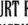
Summary:
The California Bar disbarred Gadda for incompetence, based on his failure to provide competent legal representation to clients in immigration court. The Ninth Circuit also disbarred Gadda, based on the California Bar's decision. Gadda objected to his disbarment by the 9th Circuit, arguing that the California Bar lacked authority to discipline him for incompetent representation in immigration court. The 9th Circuit disagreed, holding that both the California Bar and the 9th Circuit had the authority to discipline him.
BEEZER, Circuit Judge.
On July 30, 2001, the California State Bar Court found that Miguel Gadda, Esq. repeatedly failed to perform legal services competently. It placed Gadda on involuntary inactive status and recommended that Gadda be disbarred.
This opinion and order relate to two federal proceedings resulting from the State Bar Court's recommendation. In the first, Gadda appeals an order of the United States District Court for the Northern District of California, which denies Gadda's motion to preliminarily enjoin the Board of Immigration Appeals decision to suspend him from practice based on his suspension by the State Bar Court. Gadda asserts that the State Bar Court cannot affect his right to practice before the BIA. The other proceeding is a disciplinary action initiated by this court after we received notice of Gadda's suspension from practice by the State Bar Court.
Gadda argues that any reciprocal discipline imposed by the BIA or by this court based on the State Bar Court's suspension order is invalid because the Supreme Court of California lacked jurisdiction to discipline him. He claims that federal law preempts the states' authority to regulate attorneys, like him, who practice only in the administration of immigration law and in the federal courts, but not in the state courts. Because both of these proceedings involve the same underlying preemption issue, we consolidate them for opinion purposes only.
We conclude that federal law does not preempt the Supreme Court of California's authority to suspend or disbar attorneys admitted to practice in California state courts. The Supreme Court of California's discipline orders may serve as the basis for reciprocal disbarment actions by both the BIA and this court.
We disbar Gadda from the practice of law before the United States Court of Appeals for the Ninth Circuit.
I
Gadda was admitted to the California State Bar in 1975. Thereafter, he was admitted to practice law and became a member of the bar of the United States District Court for the Northern District of California, the United States Court of Appeals for the Ninth Circuit, and the Supreme Court of the United States. He was also admitted to practice before the Board of Immigration Appeals
and was authorized to appear for clients before the BIA and in all Immigration Courts throughout the United States.
A. California State Court Disciplinary Proceedings
On August 26, 2002, the Review Department of the California State Bar Court affirmed the State Bar Court's decision recommending Gadda's disbarment and placing him on involuntary inactive status. On January 22, 2003, the Supreme Court of California ordered that Gadda be disbarred from the practice of law in California, effective February 21,2003.
The Review Department's opinion surveyed Gadda's history of federal immigration practice, concluding that "disbarment is warranted under the circumstances for the protection of the public, the courts, and the legal profession." The Review Department cited seventeen acts of misconduct extending over six years and involving eight federal immigration client matters and one client trust account matter. This misconduct included Gadda's failure to appear at scheduled court conferences and to keep clients apprised of the proceedings and relevant court dates. Five of Gadda's clients were ordered deported in absentia and at least six courts found Gadda to have provided ineffective assistance. The Review Department concluded that Gadda failed "to perform legal services competently, demonstrated indifference toward rectification of or atonement for the consequences of his misconduct, and significantly harmed clients." The Review Department determined that aggravating factors, including prior discipline for similar misconduct in 1990, outweighed any mitigating factors Gadda presented.
We incorporate by reference that portion of the Review Board's opinion which inventories Gadda's incompetence between 1994 and 1999. Of the eight federal immigration client matters which the Review Board describes, that of the Saba family is especially egregious.
The four minor Saba children applied for political asylum. After the INS denied their application, the children retained Gadda to represent them. Gadda advised the children to withdraw their asylum claim; the Immigration Judge ordered that they voluntarily depart from the United States.
Thereafter, the children's parents became naturalized citizens. The children were eligible for priority consideration of their application for adjustment of status to legal residency or citizenship based on their parents' naturalization. However, as a result of Gadda's neglect and incompetence, the children were deprived of an adjustment of their immigration status, and ultimately were placed in deportation proceedings.
Gadda moved for a stay of the children's deportation. In the course of a hearing on that motion, Gadda left the Saba family unrepresented before an immigration officer. Gadda also directed the children to sign a statement promising they would voluntarily depart once the stay expired. The immigration court granted the stay but the children did not depart as promised. Gadda assured the children that he was appealing the earlier BIA decision.
Because Gadda negligently allowed the time for an appeal from the BIA to this court to lapse, he was forced to seek habeas corpus relief before the district court. Gadda directed William Gardner, an attorney Gadda employed on a contract basis but did not supervise, to file the habeas petition. Before Gardner filed the habeas petition, the IJ ordered the Saba children to be deported on account of their refusal to depart voluntarily at the expiration of the stay. Gadda once again advised the children not to comply with the court's order.
Gardner subsequently filed the habeas petition and the district court ordered a hearing. The district court made a sua sponte finding of ineffective assistance by Gadda and remanded the matter to the immigration court to reopen the deportation hearing. By the time the case was heard, two of the Saba children were no longer minors. Gadda has not refunded the $3,000 the Saba children paid him.
Regarding the Saba matter, the Review Department agreed with the State Bar that Gadda "recklessly and repeatedly failed to perform legal services" and "failed to refund unearned fees promptly upon termination." Specifically, the Review Department found Gadda's performance incompetent in the following ways:
(1) by leaving the children alone, unrepresented, in the middle of a hearing before an immigration officer and advising them to sign a voluntary departure form; (2) by failing to advise the Saba children to depart on or before the deadline; (2) by failing to timely move to reopen deportation proceedings; (4) by failing to file a petition for review with the Ninth Circuit; (5) by failing to file for adjustment of status after Mrs. Saba became a naturalized citizen and instead filing for adjustment of status on the children's last day to depart voluntarily, approximately three months later; and (6) by failing to supervise Gardner in filing a petition for writ of habeas corpus.
B.
Gadda v. Ashcroft
— appeal from BIA disciplinary proceedings
Based on the State Bar Court's order, on October 2, 2001, the BIA suspended Gadda from practice before the BIA, the Immigration Courts, and the Department of Homeland Security. Gadda unsuccessfully sought a preliminary injunction of the BIA's action in the district court. Gadda appealed the denial of the preliminary injunction to this court. We deferred submission pending the outcome of disciplinary proceedings before the BIA.
Meanwhile, the Office of General Counsel for the Executive Office for Immigration Review initiated disciplinary proceedings and an adjudicatory official suspended Gadda indefinitely from practice on August 22, 2002. On July 8, 2003, the BIA dismissed Gadda's appeal and ordered him expelled from practice before the BIA, the Immigration Courts, and the DHS.
C. Ninth Circuit Disciplinary Proceedings
On May 29, 2002, we ordered Gadda to resign from the Ninth Circuit's bar or show cause why he should not be suspended or disbarred based on the California State Bar Court's order
placing him on involuntary inactive status and recommending that he be disbarred. Gadda responded and we referred the case to the Appellate Commissioner. On September 25, 2002, the Appellate Commissioner stayed the disciplinary proceedings pending a decision by the Supreme Court of California on the State Bar Court's recommendation or a decision by us.
Following the Supreme Court of California's January 22, 2003 order disbarring Gadda, the Appellate Commissioner again ordered Gadda to resign from the bar of the United States Court of Appeals for the Ninth Circuit or show cause why he should not be suspended or disbarred. Gadda requested a stay, claiming that the Supreme Court of California's disbarment order was not final and that we should first resolve
Gadda v. Ashcroft.
The Appellate Commissioner conducted a hearing on March 27, 2003 and filed a report and recommendation on May 22, 2003. The Appellate Commissioner recommends that Gadda be disbarred from the practice of law before the United States Court of Appeals for the Ninth Circuit.
"Membership in the bar is a privilege burdened with conditions. An attorney is received into that ancient fellowship for something more than private gain. He becomes an officer of the court, and, like the court itself, an instrument or agency to advance the ends of justice." We have both statutory and inherent power to suspend or disbar an attorney who has been admitted to this court's bar.
Federal Rule of Appellate Procedure 46 regulates attorney conduct, including admission to the bar of the Ninth Circuit and the conditions for suspension and disbarment. FRAP 46 provides that a member of this court's bar is subject to suspension or disbarment if the member either (1) "has been suspended or disbarred from practice in any other court"; or (2) "is guilty of conduct unbecoming a member of the court's bar."
A. Reciprocal Discipline
In this case, Gadda's suspension and disbarment from the practice of law in California forms the basis for his disbarment from the BIA and this court.
B. Conduct Unbecoming
Even if the California courts had not acted to disbar Gadda, we have independent authority to suspend or disbar him from practice. Conduct unbecoming a member of the bar of the Ninth Circuit is sufficient cause for disbarment. Unlike some of our sister circuits, the Ninth Circuit has not adopted local rules elaborating on FRAP 46's "conduct unbecoming" standard. The Supreme Court has held that "conduct unbecoming" is conduct "contrary to professional standards that show an unfitness to discharge continuing obligations to clients or courts, or
conduct inimical to the administration of justice." We have consistently found conduct unbecoming where an attorney failed to prosecute an appeal with due diligence.
Because we have jurisdiction over appeals from the immigration courts, the quality of the practice by attorneys appearing before the immigration courts is crucial to our ability to administer justice and function effectively. The quality of our review is heavily dependent on the record established in administrative immigration hearings, which in turn is dependent on the competence of the attorneys creating that record. Gadda's incompetence impedes our operations and endangers the rights of his clients.
In the course of one immigration matter, for example, Gadda neglected to introduce crucial documents relating to changed country conditions. Although his client was in possession of such documents, Gadda failed to have the documents translated and offered as evidence. In that same matter, the Review Department found that Gadda failed to elicit persuasive testimony in support of his client's contention of fear of future persecution. Gadda currently represents petitioners in approximately 50 matters pending before this court. We hold that conduct such as his before the immigration courts is sufficient to constitute "conduct unbecoming" a member of the bar of this court.
C. Inherent Power
We hold that we also have inherent authority respecting the suspension and disbarment of attorneys who perform incompetently in federal immigration proceedings. This power derives from an attorney's role as an officer of the court which granted the attorney admission to the bar; it is necessary to maintain the respectability and harmony of the bar, as well as to protect the public. We exercise this power with restraint and discretion.
"The behavior for which an attorney is disciplined pursuant to our inherent power must have some nexus with the conduct of the litigation before the court." Such a connection exists in the context of immigration proceedings because, as noted above, we have jurisdiction over appeals from the immigration courts and rely on the records established in those courts.
It is ORDERED that Miguel Gadda, Esq. should be and hereby is disbarred from the practice of law before the United States Court of Appeals for the Ninth Circuit and his name shall be stricken from the roll of attorneys.
Questions:
1. When should the courts discipline attorneys like Gadda? What kind of discipline should they impose?
2. Why was Gadda disbarred? Is it possible that he provided some of his clients with competent representation?
Dollars and Dreams: Immigrants as Prey
Rivlin, Gary
.Yen
York Times (1923-Current file);
Jun 11,2006; ProQuest Historical Newspapers: The New York Times pg.Bl
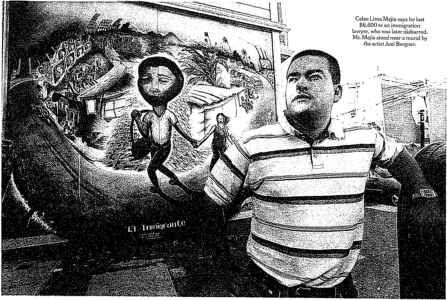
Dollars and Dreams: Immigrants as Prey
By CARY RIVLIN
Sa*
Francisco
T was when his immigration attorney asked him for $3,000 several years ago that Cebo Lima Mejia started to wonder whether his lawyer was taking him for a very costly nde Mr. Mejia, a Guatemalan immigrant who was residing illegally in the United States, said lie had already paid Miguel Gadda S3.6D0 to help him apply for asylum. Mr. Mejia recalled in a recent interview that Mr Gadda promised him that the legal fees — a large chunk of his annual pay of about $
20,000
as a handyman—would land him a coveted prize: a green card allowing him to come out from the shadows and
live in the United States as a permanent residem
But immigration authorities rejected the application, and Mr. Mejia said Mr. Gadda pressed him for the extra $1,000 to appeal the decision. Until that point. Mr. Mejia said. Mr. Gadda had done virtually no work on the case — "He hadn't even done any prep work with me before my hearing" — but his asylum appbcauon had revealed him lo immigration authorities Mr. Mejia, who is now 29. felt that he had to keep fighting, so he scrounged up the money And that was the last lime he saw Mr. Gadda.
When Mr Mejia found a deportation order in his mail in 2001. he rushed in pantc to his lawyer's office "But the office wasn't there anymore, and there was nowhere to find him," said Mr. Mejia, who gained permanent resident status — his
green card — after turnmg to a second lawyer hr described as "my angel "
Mr. Mejia wasn't Mr. Gadda's only victim. When the State Bar of California disbarred Mr. Gadda m 2002, it cited him for professional misconduct and legal incompetence involving eight illegal immigrants he had advised. (Mr. Mejia's case was not among (hem)
Mr Gadda Is hardly alone. As ihe number of illegal immigrants m the country has swollen to what the Department of Homeland Security conservatively estimates at nine million. so have the ranks of those who inhabit the Immigration business's underbelly, posing as well-meaning advisers to those in search of a new job, a new home and a green card if Continued on Page $
Avista Management vs. Wausau Underwriters Insurance
Co. (M.D. FI. 2006)
This matter comes before the Court on Plaintiff's Motion to designate location of a Rule 30(b)(6) deposition. Upon consideration of the Motion n the latest in a series of Gordian knots that the parties have been unable to untangle without enlisting the assistance of the federal courts n it is
ORDERED that said Motion is DENIED. Instead, the Court will fashion a new form of alternative dispute resolution, to wit: at 4:00 P.M. on Friday, June 30, 2006, counsel shall convene at a neutral site agreeable to both parties. If counsel cannot agree on a neutral site, they shall meet on the front steps of the Sam M. Gibbons U.S. Courthouse, 801 North Florida Ave., Tampa,
Florida 33602. Each lawyer shall be entitled to be accompanied by one paralegal who shall act as an attendant and witness. At that time and location, counsel shall engage in one (1) game of "rock, paper, scissors." The winner of this engagement shall be entitled to select the location for the 30(b)(6) deposition to be held somewhere in Hillsborough County during the period July 1112, 2006. If either party disputes the outcome of this engagement, an appeal may be filed and a hearing will be held at 8:30 A.M. on Friday, July 7, 2006 before the undersigned in Courtroom 3, George C. Young United States Courthouse and Federal Building, 80 North Hughey Avenue, Orlando, Florida 32801.
Jan Pudlow,
'Rock, paper, scissors' order garners worldwide attention,
Florida Bar News
(July 1, 2006)
Dutifully following a playful, but pointed, federal court order, Tampa lawyers David Pettinato, of the Merlin Law Group, and D. Lee Craig, of Butler Pappas, will meet June 20 and engage in one game of "rock, paper, scissors" to solve a dispute in the midst of heated litigation.
"We will do it quickly, humbly, and go on about our business," said a contrite Pettinato, who is amazed about "getting bombarded from news media from all over the country."
CNN, ABC, The Wall Street Journal, and The New York Times, to name a few.
Make that international news, as London's The Guardian also did its version of the everybody'stalking-about-it June 6 order issued by U.S. Middle District Judge Gregory Presnell, who was a member of The Florida Bar Board of Governors from 1989-93.
At issue was the childlike squabbling between the attorneys in
Avista Management, Inc., vs. Wausau Underwriters Insurance Co.,
in litigation over an insurance settlement stemming from 2004's Hurricane Charley.
Even though the sparring lawyers' offices are only four floors apart in the same building at 777 S. Harbor Island Blvd. in Tampa, they could not agree on where to hold a deposition. Craig, representing Wausau, wanted to question a witness in his office. Pettinato, representing Avista, was not willing to let Craig have the home-court advantage, and insisted on a neutral setting of a court reporter's office down the street.
When they took the matter to the court, Presnell let them have it, fed up with "the latest series of Gordian knots that the parties have been unable to untangle without enlisting the assistance of the federal courts."
In what the judge called "a new form of alternative dispute resolution," Presnell ordered that each attorney will be "accompanied by one paralegal who shall act as an attendant and witness," and "the winner of this engagement shall be entitled to select the location for the 30(b)(6) deposition to be held somewhere in Hillsborough County during the period July 11-12,
2006. If either party disputes the outcome of this engagement, an appeal may be filed and a hearing will be held at 8:30 a.m. on Friday, July 7, before the undersigned in Courtroom 3."
That creative order compelled St. Petersburg Times columnist Sue Carlton to nominate Presnell for "Jurist of the Year."
NO NEED FOR AN APPEAL
On June 8, Pettinato said that he and Craig have resolved the issue. Pettinato said both sides agreed to play rock, paper, scissors, at "an undisclosed location." Whoever wins will get to hold the deposition in his office.
"We want to do it out of respect for the judge's order," said Pettinato, who added, "I have to say I am a little disappointed that we couldn't resolve our differences without this court order. But it provided us with an eye-opener to resolve our differences in a more amicable way. Since the hurricanes, we have been having huge battles trying to get insurance companies to pay.. . . If you get a little too passionate advocating for your client, it helps to rethink your strategy."
The matter has been zinging across the state, around the country, and across the ocean, on news Web sites, lawyers' e-mails, and law blogs.
Orlando lawyer Lynn James Hinson, who called Presnell an excellent lawyer and judge, posted this comment on The Wall Street Journal's Law Blog: "Many lawyers act like they are in kindergarten, and this order treats them appropriately."
Craig, who did not return the News ' request for an interview, may be at a disadvantage. Pettinato has a kindergartner in the house, as the father of a 5-year-old and 9-year-old.
"I play it all the time with them. I can't say I'm an expert, but I know the rules," Pettinato said. "Now, my 5-year-old keeps throwing her hand out, saying, 'Dad, let's practice.'"
Pettinato said his kids have advised him to open with rock, which he thought was apropos "because my case is solid as a rock."
But Matti Leshem, co-commissioner of the USA Rock Paper Scissors League, told The New York Times, "I guarantee you right now that both lawyers will open with paper. Lawyers open with paper 67 percent of the time, because they deal with so much paper."
Leshem agreed to officiate, saying, "What I don't want is some rogue element of rock-paperscissors coming down from the bench. When the law takes rock-paper-scissors into its own hands, mayhem can occur."
While Pettinato said he has greatest respect for the judge and "got the message," he is willing to laugh at himself, "or else I'll grow despondent."
Taking it somewhat seriously is the World Rock Paper Scissors Society.
"This is a landmark case of how RPS should be used to keep the wheels of justice moving forward when dealing with lawyer engaging in posturing tactics," Doug Walker, managing director of the World RPS Society, told the News.
"Although we take issue with RPS being labeled as a 'new' form of dispute resolution, we understand it is not commonly used in courtrooms and applaud Judge Presnell's wisdom in the matter."
Noting that Rock, Paper, Scissors dates back to at least the 18th century in Japan, it was used to settle an auction-house dispute in April when "an $18 million art portfolio was acquired by Christie's due to a cleverly executed throw of paper," over Sotheby's rock.
The World Rock Paper Scissors Society, Walker said, plans to invite Judge Presnell to attend the International Rock Paper Scissors Championships in Toronto on September 30, as "chief consultant to Head Referee Brad Fox."
No word yet on whether the judge will accept the invitation.
Questions:
1. Why did the court order Pettinato and Craig to resolve their dispute via a game of Roshambo?
2. Was the judge's decision justified and appropriate under the circumstances?
Auto-Owners Ins. Co. v. Summit Park Townhome,
886 F. 3d 863 (10th Cir. 2018)
Summary:
Harris and Pettinato represented Summit Park in an action against AutoOwners. Summit Park was damaged by hail, but the parties disagreed about the amount of damage. The district court ordered them both to obtain independent appraisals. Harris and Pettinato retained Keys as their appraiser, but did not disclose their previous relationship with him. When the district court learned that Keys was not impartial, it sanctioned Harris and Pettinato. They appealed, but the circuit court affirmed.
BACHARACH, Circuit Judge.
Mr. William Harris and Mr. David Pettinato are two attorneys who represented Summit Park Townhome Association. While representing Summit Park against its insurer, the two attorneys were sanctioned for failing to disclose information. In this appeal, the attorneys challenge the sanctions based on five arguments:
1. The district court lacked authority to require the disclosure requirements.
2. The attorneys did not violate the court's disclosure requirements.
3. The district court awarded attorneys' fees beyond the scope of an earlier sanctions order.
4. The district court's award of attorneys' fees resulted in a deprivation of due process.
5. The amount of attorneys' fees awarded was unreasonable.
We affirm. Regardless of whether the district court had authority to require the disclosures, the attorneys were obligated to comply. They did not, and the district court acted reasonably in issuing sanctions, determining the scope of the sanctions, and calculating the amount of the sanctions.
I. Mr. Harris and Mr. Pettinato were sanctioned for failing to comply with the disclosure order.
This appeal grew out of an insurance dispute. Summit Park sustained hail damage and filed a claim with its insurer, Auto-Owners Insurance Company. The parties agreed that damage had occurred but disagreed on the dollar amount of the damage. Auto-Owners sued for a declaratory judgment to decide the value.
Summit Park retained Mr. Harris and Mr. Pettinato, who successfully moved to compel an appraisal based on the insurance policy. In the event of an appraisal, the insurance policy required:
Each party will select a competent and impartial appraiser. The two appraisers will select an umpire. If they cannot agree, either may request that selection be made by a judge of a court having jurisdiction. The appraisers will state separately the value of the property and amount of loss. If they fail to agree, they will submit their differences to the umpire.
A decision agreed to by any two will be binding.
Based on continuing disputes between the parties, Auto-Owners asked the district court to resolve these disputes by ordering an "appraisal agreement." The court did so and ordered disclosure of facts potentially bearing on the appraisers' impartiality:
An individual who has a known, direct, and material interest in the outcome of the appraisal proceeding or a known, existing, and substantial relationship with a party may not serve as an appraiser. Each appraiser must, after making a reasonable inquiry, disclose to all parties and any other appraiser any known facts that a reasonable person would consider likely to affect his or her impartiality, including (a) a financial or personal interest in the outcome of the appraisal; and (b) a current or previous relationship with any of the parties (including their counsel or representatives) or with any of the participants in the appraisal proceeding. Each appraiser shall have a continuing obligation to disclose to the parties and to any other appraiser any facts that he or she learns after accepting appointment that a reasonable person would consider likely to affect his or her impartiality.
The court warned: "Notice is given that, if the court finds that the parties and/or their counsel have not complied with this order, the court will impose sanctions against the parties and/or their counsel pursuant to the court's inherent authority."
Before the court imposed these requirements, Summit Park selected Mr. George Keys as its appraiser. This selection led Auto-Owners to express doubt about Mr. Keys's impartiality. But Auto-Owners did not object to Mr. Keys or move to compel further disclosures.
Mr. Keys and the court-appointed umpire agreed on an appraisal award of over $10 million, which was 47% higher than Summit Park's own public adjuster had determined. Auto-Owners then launched an investigation, which culminated in an objection to Mr. Keys. In the objection, Auto-Owners argued that Mr. Keys was not impartial and that Summit Park had failed to disclose evidence bearing on his impartiality. The district court credited these arguments, disqualifying Mr. Keys and vacating the appraisal award.
With vacatur of the appraisal award, Auto-Owners moved for sanctions against Mr. Harris and Mr. Pettinato, seeking attorneys' fees and expenses based on violation of the disclosure order. The district court granted the motion, assessing sanctions against Mr. Harris and Mr. Pettinato for $354,350.65 in attorneys' fees and expenses.
II. Mr. Harris and Mr. Pettinato were bound by the court's disclosure order.
Mr. Harris and Mr. Pettinato challenge the district court's authority to enter the disclosure order. But even if the court had exceeded its authority, Mr. Harris and Mr. Pettinato would still have needed to comply with the disclosure order. If the two attorneys believed that the order had been unauthorized, they could have sought reconsideration or a writ; but they could not violate the order.
There is "impressive authority for the proposition that an order issued by a court with jurisdiction over the subject matter and person must be obeyed by the parties until it is reversed by orderly and proper proceedings." The parties agree that the district court had jurisdiction over the subject matter and parties; thus, the attorneys and parties bore an obligation to comply in the absence of an appellate challenge. In light of the duty to comply, violation of the order could trigger sanctions.
Regardless of whether the district court had authority to issue the disclosure order, Mr. Harris and Mr. Pettinato:
• bore an obligation to comply in the absence of an appellate challenge and
• could be sanctioned for noncompliance.
III. Mr. Harris and Mr. Pettinato violated the disclosure order.
The district court concluded that the two attorneys had violated the disclosure order.
Challenging this conclusion, Mr. Harris and Mr. Pettinato make two arguments:
1. The district court misinterpreted the term "impartial."
2. Mr. Harris and Mr. Pettinato disclosed sufficient information about Mr. Keys.
Both arguments fail.
B. Mr. Harris and Mr. Pettinato failed to disclose information specified in the disclosure order. The district court required disclosure of:
• the appraiser's "financial or personal interest in the outcome of the appraisal,"
• Any "current or previous relationship" between the appraiser and Summit Park's counsel, and
• any other facts subsequently learned that "a reasonable person would consider likely to affect" the appraiser's impartiality.
1. Mr. Harris and Mr. Pettinato did not disclose the extent of their relationships with Mr. Keys. Regardless of whether the district court had correctly defined "impartial," the disclosure order itself was clear in what was required. For example, the order expressly required disclosure of the attorneys' current or previous relationships with the appraiser. The failure to disclose this information constituted a sanctionable violation regardless of the court's interpretation of the word "impartial."
The district court could reasonably find that the two attorneys had failed to disclose the extent of their relationships with Mr. Keys. For example, the attorneys failed to disclose that
• other attorneys in their law firm (the Merlin Law Group) had worked with Mr. Keys on appraisals for at least 33 clients,
• Merlin attorneys had represented Mr. Keys on various matters for over a decade,
• Merlin's founder and Mr. Keys had co-founded a Florida lobbying operation, whose "number one goal was to protect policyholders and the public adjusting profession," and
• Merlin attorneys had served as the incorporator and registered agent for one of Mr. Keys's companies.
Mr. Harris and Mr. Pettinato argue that their disclosures were sufficient. They made two disclosures:
1. "Mr. Keys does not have any significant prior business relationship with Merlin, Summit Park, or C3 Group. Mr. Keys has acted as a public adjuster and/or appraiser on behalf of policyholders that Merlin has represented in the past, however, this obviously does not affect his ability to act as an appraiser in this matter."
2. "Mr. Keys has acted as a public adjuster and/or appraiser on behalf of policyholders that Merlin has represented in the past. Mr. Keys has no financial interest in the claim, and has no previous relationship with the policyholder in this matter."
In addition, Mr. Keys disclosed:
I do not have a material interest in the outcome of the Award and have never acted either for or against Summit Park Townhome Association. My fee agreement is based upon hourly rates plus expenses. I do not have any substantial business relationship or financial interest in Merlin. There have been cases where both Merlin and Keys Claims Consultants acted for the same insured but under separate contracts.
Mr. Harris and Mr. Pettinato make two defenses of their disclosures:
1. They disclosed enough information about Mr. Keys's impartiality.
2. Mr. Harris and Mr. Pettinato lacked personal knowledge about the undisclosed facts.
These arguments fail.
First, the district court acted within its discretion in concluding that Mr. Harris and Mr. Pettinato had failed to disclose the extent of their relationships with Mr. Keys. The two attorneys disclosed only that Mr. Keys had worked as an appraiser on behalf of Merlin's clients, and Mr. Keys stated that he lacked a substantial business relationship with Merlin. The district court could reasonably find that these disclosures had failed to provide meaningful information about the extent of the relationships between the two attorneys and Mr. Keys.
Second, Mr. Harris and Mr. Pettinato cannot avoid sanctions based on their asserted lack of knowledge about Mr. Keys's contacts with other Merlin attorneys. Mr. Harris and Mr. Pettinato knew about some of the contacts, as reflected in Mr. Pettinato's description of his firm's connection with Mr. Keys: "Both Mr. Keys and his staff have assisted me as well as my firm in resolving an untold number of large multi-million dollar losses to an amicable resolution and settlement to the policyholders' benefit and satisfaction." In addition, however, Mr. Harris and Mr. Pettinato bore an obligation to make "a reasonable inquiry." In light of this obligation, Mr. Harris and Mr. Pettinato could not profess ignorance while failing to inquire about contacts with other Merlin attorneys.
In these circumstances, the district court acted within its discretion in finding a failure to disclose the extent of the relationships between the two attorneys and Mr. Keys.
2. Mr. Harris and Mr. Pettinato distort the effect of the district court's definition of "impartial."
The district court required disclosure not only of the appraiser's relationship with counsel but also of known facts that a reasonable person would consider likely to affect the appraiser's
impartiality. This part of the disclosure requirement was tied to the court's definition of the term "impartial."
Mr. Harris and Mr. Pettinato focus on the court's definition of "impartial," arguing that it was wrong and that the court failed to adequately inform Mr. Harris and Mr. Pettinato of the scope of their obligations. But in the disclosure order itself, the court stated what it meant by "impartial": "An individual who has a known, direct, and material interest in the outcome of the appraisal proceeding or a known, existing, and substantial relationship with a party may not serve as an appraiser." Because the court stated precisely what it meant by "impartial," Mr. Harris and Mr. Pettinato knew what was required. And as we have discussed, Mr. Harris and Mr. Pettinato could not disobey the order even if the court had based the disclosure requirements on a misguided definition of "impartial."
3. The district court reasonably found a violation of the disclosure order tied to this test of "impartial."
Based on this definition, the district court required disclosure of any facts that a reasonable person would view as likely to affect the appraiser's impartiality. Mr. Harris and Mr. Pettinato argue that evidence of an appraiser's advocacy was unlikely to affect the appraiser's impartiality. For the sake of argument, let's assume that Mr. Harris and Mr. Pettinato are right. Still, the district court could reasonably view Mr. Keys's undisclosed prior statements as likely to affect his impartiality based on a known, direct, and material interest in the outcome.
For example, in a presentation to a group of public adjusters in Florida, Mr. Keys taught participants how to "harvest the claim money" from an insurer during an appraisal. And one of Mr. Keys's companies maintains a website stating: "Our purpose is simple: To shift the balance of power from the insurer to the policy holder." The district court could reasonably view these undisclosed statements as proof of a material interest in an outcome favoring the policyholder over the insured.
Evidence also suggests that Mr. Harris and Mr. Pettinato were aware of Mr. Keys's bias. For example, in an advertisement on Mr. Keys's website, Mr. Pettinato endorsed Mr. Keys, saying: "Both Mr. Keys and his staff have assisted me as well as my firm in resolving an untold number of large multi-million dollar losses to an amicable resolution and settlement to the policyholders' benefit and satisfaction." And a profile on Merlin's website reported that Mr. Keys "had dedicated his professional life to being a voice for policyholders in property insurance claims." In this profile, Mr. Keys stated: "I was taught to always handle a claim as if my momma was the insured."
In sum, the district court did not abuse its discretion in finding that Mr. Harris and Mr. Pettinato had violated the disclosure order.
C. Waiver
Mr. Harris and Mr. Pettinato contend that Auto-Owners waived its objection to the sufficiency of the disclosures by failing to object despite knowledge of Mr. Keys's relationship with Merlin and past expressions of bias toward policyholders. We disagree. Auto-Owners had some knowledge about Mr. Keys's bias but did not know much of what had been withheld. Without full knowledge of the undisclosed information, Auto-Owners did not waive its right to seek sanctions for nondisclosure.
IV. The district court reasonably interpreted the scope of its sanctions order.
In sanctioning the two attorneys, the court invoked 28 U.S.C. § 1927. Under § 1927, an attorney "who so multiplies the proceedings in any case unreasonably and vexatiously may be required by the court to satisfy personally the excess costs, expenses, and attorneys' fees reasonably incurred because of such conduct." Applying this statute in the sanctions order, the court found that Mr. Harris and Mr. Pettinato had unreasonably prolonged the proceedings:
I note that Section 1927 indicates a purpose to compensate victims of abusive litigation practices, not to deter and punish offenders. With this purpose in mind, I reject AutoOwners' request for fees for proceedings in this Court that relate to conducting the appraisal process and conducting the appraisal process itself because Auto-Owners would have incurred these fees regardless of Harris' and Pettinato's misconduct. I grant the request, however, as to Auto-Owners' investigation into George Keys and its objections to his participation in the appraisal, as this work would not have taken place in the absence of Harris' and Pettinato's misconduct. The award shall be assessed against Harris and Pettinato jointly and severally.
Mr. Harris and Mr. Pettinato challenge the scope of this order. They concede that the award covered Auto-Owners' objection to Mr. Keys ($186,705.50) and investigation of Mr. Keys ($33,805). But the attorneys disagree with the inclusion of attorneys' fees for
• Auto-Owners' preparation of the motion for sanctions ($51,309.50),
• Auto-Owners' preparation of the application for attorneys' fees and expenses ($16,960.50), and
• Auto-Owners' other related work ($61,662.50).
According to Mr. Harris and Mr. Pettinato, these activities fell outside of the initial sanctions order. We disagree.
In setting attorneys' fees following the sanctions order, the district court explained:
Thus, viewed properly in its context, my award encompasses any fees incurred as a result of Harris' and Pettinato's misconduct. The fees requested by Auto-Owners for work on the third amended petition, the reservation of rights letter, and other matters described in the detailed billing records would not have been incurred but for Harris' and Pettinato's misconduct. I therefore conclude they are within the scope of the award.
We give deference to the district court's interpretation of its own order.
With such deference, we conclude that the district court reasonably interpreted its prior sanctions order. The sanctions order had noted that § 1927 was designed "to compensate victims of abusive litigation practices." In light of this purpose, the court interpreted its sanctions order against Mr. Harris and Mr. Pettinato as encompassing all of the attorneys' fees and expenses resulting from violation of the disclosure order. This interpretation was reasonable.
The sanctions order expressly included the investigation of and objection to Mr. Keys. But the district court could reasonably interpret the sanctions order to go beyond the investigation and objection. If Mr. Harris and Mr. Pettinato had not violated the disclosure order, Auto-Owners would not have had to move for sanctions, seek attorneys' fees and expenses, and complete other work. As a result, the district court could reasonably consider these litigation expenses as the product of the two attorneys' misconduct. In these circumstances, it was reasonable for the district court to conclude that the earlier sanctions order had encompassed attorneys' fees and expenses from the motion for sanctions, application for attorneys' fees and expenses, and related work involving the motion and application.
V. The district court did not deprive the two attorneys of due process.
Alternatively, Mr. Harris and Mr. Pettinato assert a deprivation of due process based on an inability to respond to the district court's inclusion of litigation activities outside of the initial sanctions order. We disagree. Auto-Owners filed an application for attorneys' fees, and Mr. Harris and Mr. Pettinato had an opportunity to respond. In the response, they could have objected to any of the attorneys' fees being sought. This opportunity supplied due process.
VI. The amount of attorneys' fees awarded was reasonable.
Mr. Harris and Mr. Pettinato also argue that the court awarded an unreasonable amount of attorneys' fees. We disagree.
The district court closely reviewed the information in Auto-Owners' request for fees, determining that most of the fee requests were reasonable given
• the circumstances of the case,
• the hourly rates prevailing in the community, and
• the use of billing judgment.
First, the district court concluded that it was reasonable for Auto-Owners' counsel to spend long hours because "Auto-Owners had over $30 million at stake" and the issues were complex. This conclusion was reasonable.
Second, the court considered the local market, the qualifications of the attorneys, and the contentiousness of the litigation. These considerations led the district court to find that the billing rates had been reasonable. In our view, this finding was permissible under the record.
Third, the court considered the use of billing judgment by Auto-Owners' counsel through concessions such as staffing with lower-billing attorneys, declining to charge for all hours worked, and discounting hours worked by paralegals and secretaries. The district court acted reasonably in considering these concessions.
For these three reasons, we conclude that the district court did not abuse its discretion in calculating the amount of the sanction ($354,350.65).
VII. Conclusion
The district court did not err in sanctioning Mr. Harris and Mr. Pettinato. Regardless of the validity of the disclosure order, compliance was required in the absence of an appellate challenge. Mr. Harris and Mr. Pettinato violated the order by failing to disclose information bearing on Mr. Keys's impartiality. In light of this violation, the district court had the discretion to sanction Mr. Harris and Mr. Pettinato and set a reasonable amount. We therefore affirm the assessment of sanctions.
Questions:
1. Why was it improper for Harris and Pettinato not to disclose their previous relationship with Keys?
2. Could Harris and Pettinato have hired Keys as their expert, if they made the proper disclosures?
Further Reading:
•
Beniamin Edwards,
The Professional Prospectus: A Call for Effective Professional
Disclosure
, W & L L. Rev, (forthcoming)
Further Listening:
•
Beniamin Edwards on Improving the Market for Professional Services
, Ipse Dixit, March
1ia2019
6.3: Attorney Misconduct
Walking the line, you were a marksman. Told me that law, like wine, is ageless. Public defender, you had to admit, you wanted the love of a sex offender.
94
In addition to their disciplinary authority under Federal Rule of Civil Procedure 11 and Model Rule of Professional Conduct 3.1, courts have the "inherent authority" to regulate the conduct of attorneys and punish attorney misconduct. This inherent authority is recognized by both state and federal courts, and is not derived from any particular state or rule. Rather, it is a function of the need for courts to "manage their own affairs." As the Supreme Court observed in
Chambers v. Nasco, Inc.,
501 U.S. 32 (1991)
:
It has long been understood that certain implied powers must necessarily result to our Courts of justice from the nature of their institution, powers which cannot be dispensed with in a Court, because they are necessary to the exercise of all others. For this reason, Courts of justice are universally acknowledged to be vested, by their very creation, with power to impose silence, respect, and decorum, in their presence, and submission to their lawful mandates. These powers are governed not by rule or statute but by the control necessarily vested in courts to manage their own affairs so as to achieve the orderly and expeditious disposition of cases.
The inherent authority of a court is non-exclusive of any statutes or rules that prohibit the same or similar conduct, and courts may use their inherent authority to punish conduct that would fall outside the scope of otherwise applicable statutes of rules. Among other things, courts can use their inherent authority to punish attorneys for conduct that is abusive, vexatious or in bad faith. For example, as the Supreme Court observed in
Chambers-.
A court may assess attorney's fees when a party has acted in bad faith, vexatiously, wantonly, or for oppressive reasons. In this regard, if a court finds that fraud has been practiced upon it, or that the very temple of justice has been defiled, it may assess attorney's fees against the responsible party, as it may when a party shows bad faith by delaying or disrupting the litigation or by hampering enforcement of a court order. The imposition of sanctions in this instance transcends a court's equitable power concerning relations between the parties and reaches a court's inherent power to police itself, thus serving the dual purpose of vindicating judicial authority without resort to the more drastic sanctions available for contempt of court and making the prevailing party whole for expenses caused by his opponent's obstinacy.
The Inherent Authority of the Court
94
Blondie, X
Offender,
Blondie (1976).
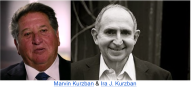
Lee v. American Eagle Airlines, Inc.,
93 F. Supp. 2d 1322 (S.D. Fla. 2000)
MIDDLEBROOKS, District Judge.
Summary:
Marvin and Ira Kurzban represented Anthony Lee in an employment discrimination action against American Eagle Airlines, alleging racial discrimination. The found for Lee on his hostile work environment claim and awarded him $300,000 in compensatory damages and $650,000 in punitive damages, but denied Lee's claim for termination on account of his race. The Kurzbans filed motion seeking $1,611,910.50 in attorney's fees and costs. The district court criticized their conduct during the trial, and relied on its inherent authority to award only $312,324.63 in attorney's fees and costs. In addition, it reported their conduct to the Florida Bar.
This Cause came before the Court upon Plaintiff's Amended Verified Motion for Attorney's Fees and Costs.
I. Introduction
"Let's kick some ass," Marvin Kurzban said loudly to his client, Anthony Lee, and his co-counsel, Ira Kurzban. I had taken the bench, and Court was in session. Opposing counsel and their client representatives were seated across the aisle. The jury was waiting to be called into the courtroom. Mr. Kurzban's comment was suited more to a locker room than a courtroom of the United States, and the conduct of Plaintiff's counsel that followed disrupted the adversary system and interfered with the resolution of a civil dispute.
The trial of this case lasted approximately fourteen days. The jury found that American Eagle Airlines had subjected Mr. Lee to a racially hostile work environment. As compensation, the jury awarded Mr. Lee $300,000. In addition, the jury awarded Mr. Lee $650,000 in punitive damages. The jury denied Mr. Lee's other claim, finding that Mr. Lee had not been terminated because of his race. This motion seeking attorney's fees and costs followed.
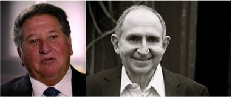
As the prevailing party in a Title VII action, the Plaintiff now seeks $1,611,910.50 in attorney's fees. This request presents the question of whether unprofessional and disruptive conduct of counsel which prolongs the proceedings and creates animosity which interferes with the resolution of a cause can be considered in determining an award of attorney's fees.
In their post-trial motions, counsel for the parties filed opposing affidavits concerning additional misconduct that was not directly observed by the Court. Since these affidavits presented vastly different versions of events, an evidentiary hearing was held; counsel and other witnesses testified.
These issues have been distasteful and time consuming. There is a great temptation to simply move on and ignore the issue. It is unpleasant to hear lawyers accusing each other of lies and misrepresentations. Unprofessionalism on the part of lawyers is a distraction and takes time away from other pending cases; it also embroils the Court in charges and counter charges. However, the functioning of our adversary system depends upon being able to rely upon what a lawyer says. So, confronted by affidavits of counsel that were directly contradictory, I decided to hear testimony and make credibility findings. These findings are based upon direct observations by the Court, the transcript of the trial, and the evidentiary hearing.
In addition, we contacted the Florida Bar to determine whether counsel had been the subject of complaints regarding unprofessional conduct. The Florida Bar forwarded a record of a previous complaint by a state court judge concerning the conduct of Marvin Kurzban. In response to that complaint, and immediately before the trial in this cause, the Florida Bar had directed Mr. Kurzban to attend an ethics class and pay a fine.
II. Findings of Fact Pertaining to Misconduct by Counsel
Discovery in this case was rancorous from the beginning. As is often the case, counsel for both sides contributed to the lack of civility. The tone of depositions was harsh, witnesses were treated with discourtesy, and discovery disputes were abundant. The transcripts of the depositions in this case are weighted down with bitter exchanges between the lawyers.
Testimony at the evidentiary hearing reflected that this uncivil conduct also continued during conversations between counsel. The testimony of a young lawyer formerly with the Defendant's counsel's law firm was particularly poignant. This lawyer testified that during telephone conversations with Ira Kurzban, she was hung up on, told that she had only been assigned to work on the case because she was African-American, and wrongly accused of misrepresentations. She testified that her experience with opposing counsel in this case was a factor in her decision to leave her litigation practice.
This testimony was not only powerful and credible, but it also reflects the corrosive impact this type of unprofessional behavior can have upon the bar itself. A litigation practice is stressful and often exhausting. Unprofessional litigation tactics affect everyone exposed to such behavior and the ripple effect of incivility is spread throughout the bar.
The trial began. Testimony at the evidentiary hearing reveals that Mr. Kurzban's "Let's kick some ass" comment was not an aberration. A client representative of the Defendant, a lawyer for American Airlines, testified that she and others were subjected to a barrage of comments out of the hearing of the Court and jury which she likened to trash talk at a sporting event. Local counsel for the Defendant was called a "Second Rate Loser" by Marvin Kurzban. She testified that each day as court began, Marvin Kurzban would say, "Let the pounding begin." In front of defense counsel's client, Mr. Kurzban would ask, "How are you going to feel when I take all of your client's money?" When walking out of the courtroom, Marvin Kurzban would exclaim, "Yuppies out of the way."
Other than Mr. Kurzban's opening comment, I was unaware of this conduct towards opposing counsel and their client's representatives, although counsel for the Defendants alluded to it during the trial. However, I observed continuing misconduct during the trial itself.
Early in the trial, an episode occurred when defense counsel brought to the Court's attention that after an instruction to a witness not to discuss his testimony during a break in his testimony for lunch, Ira and Marvin Kurzban had approached the witness and had a discussion — with an open deposition transcript in hand. Marvin Kurzban responded, "That's a lie." The Kurzbans then explained that they had the transcript open because they were looking at it, but that they were not talking with the witness about it. Their explanation was that they were talking about where they were going for lunch. I accepted the explanation, but with the observation that it was an exercise of poor judgment. (Tr. 324-325).
Shortly afterward, Marvin Kurzban objected to a question, and I overruled his objection. He continued to argue his point, then he visibly expressed his dismay with the ruling. I asked counsel to approach for a sidebar conference, wherein I advised him that for the third time he had made visible displays of disagreement with rulings by nodding his head or looking upward at the ceiling. I told him to stop that conduct and to cease making speaking objections.
Subsequently, I warned both counsel again; once before the jury, and again at the close of the mornings testimony. Ira Kurzban responded that he was way beyond acrimony with opposing counsel.
After this warning, defense counsel followed the Court's admonition and refused to respond to provocations from opposing counsel. Later than day, Marvin Kurzban interrupted an appropriate cross-examination and requested a sidebar to accuse counsel of intentionally delaying the examination so that he could not reach a witness.
Despite repeated warnings, Plaintiff's counsel continued to address comments to opposing counsel rather than to the Court and interject inappropriate comments before the jury.
The belligerence of Plaintiff's counsel, particularly Marvin Kurzban, spread like a contagion through the courtroom. On September 22, 1999, I returned to the bench after a luncheon break. Marvin Kurzban wanted to raise a matter prior to the jury's return.
Mr. Kurzban stated:
I am concerned about the record, Your Honor. I went over to the ... Mr. Reporter there, when we took the first break, and asked him about the ability to get a page typed. And instead I ended up having names called at me and a confrontation. I only bring it to the Court's attention because I am concerned about the record being clear. I feel this Court Reporter for whatever reason ... I don't know the gentlemen, never met him before — is either unstable based on his reaction and not competent to be reporting or has some bias.
At the next recess, I asked the Court Reporter what had happened. He indicated that at the break, which was a brief break for him inasmuch as we had a calendar call scheduled during that luncheon break, Marvin Kurzban asked him for a portion of transcript. The reporter responded that he could not produce those pages over the break (because he had to report the calendar call). Marvin Kurzban responded, "What are you here for, just to look pretty?" The Court Reporter responded with an epithet, at which point Marvin Kurzban remarked, "We're not talking about your family." Then Mr. Kurzban said, "I guess money talks," suggesting that since the Defendant was ordering daily copy, the reporter was biased in their favor. At that point, the Court Security Officer intervened.
I required the Court Reporter to apologize for his behavior. Because of the accusation of bias, I arranged for other Court Reporters to cover the remainder of the trial.
I learned that accusations of bias followed any disagreement with positions espoused by Plaintiff's counsel: "There's no question that he's entitled to it, so it's no — if I understand what Your Honor's saying, you don't want it to go in front of the jury for whatever reason." "Your Honor, I know you're angry at me, but I hope you're not taking it out on my client." "In fact, I think that the Court has exhibited extreme bias in this case and your rulings on objections." "Well, Your Honor, I respectfully disagree with you, that's for a court of appeals ultimately to decide, but to put a motive on it I think it exhibits a substantial amount of bias on behalf of Your Honor." "And I concur with what my brother has said. There's been clear animus by this Court to this side." "I've practiced 26 years and I've tried over 50 cases, and I've won multimillion dollar verdicts on more than a dozen cases. I don't need for this Court to allow a witness to have his wife introduced. I can't think of any reason or purpose, other than prejudice, that this Court would allow such an act to occur."
Disturbing behavior by both Marvin Kurzban and Ira Kurzban occurred repeatedly during the trial. When confronted about their conduct, they would deny that which I had just observed and then lash out in a personal attack. For instance, after I overruled an objection made by Ira Kurzban, Marvin Kurzban laughed. Other examples of their conduct following rulings include
Marvin Kurzban tossing a pen; Ira Kurzban exclaiming, "This is outrageous"; the rolling of eyes; exasperated looks at the ceiling; and flailing of arms. I warned counsel about this behavior.
After the episode of Marvin Kurzban laughing at my ruling, I asked counsel to approach the bench. Marvin Kurzban responded: "I didn't laugh. What I started doing was writing a note, saying to my brother... I didn't realize I was saying it out loud — we're not trying his case. That's what the objection was, because he's telling about his problems." Ira Kurzban then interjected: "I'd like to add, Your Honor, there's a continuing pattern of conduct we believe shows enormous bias and has turned this trial into a circus-like atmosphere."
Ira Kurzban then listed a litany of complaints about rulings which he stated should result in a mistrial. (When offered a mistrial, the Plaintiff declined.) Defense counsel and the Court Security officer also heard a laugh.
Shortly thereafter, during a discussion between the Court, Marvin Kurzban, and defense counsel about the admissibility of an exhibit a witness had allegedly drawn during a videotaped deposition but which was not on the Plaintiff's exhibit list, Ira Kurzban walked to the video machine and begin playing the videotape of the deposition in front of the jury. I directed that the machine be turned off and we took a fifteen minute break.
After the break, defense counsel raised the issue and requested some sanction. I asked Ira Kurzban for an explanation. He responded:
Mr. Kurzban: Yes, Your Honor. First, Mr. Connor asked me not to tamper with the tape now, because you were going to come out and rule. I assume he didn't have any ex parte communication with you. I'm a little perturbed about the fact that somehow he knew you were coming out to make a ruling, which I was totally unaware.
The Court: I think he knew that I was coming back after a 15 minute break. There has been absolutely no contact between me and Mr. Connor or any other lawyer in this case between the time I left the bench 15 minutes ago and when I returned now. Now, is there some reason why you would make that accusation?
Ira Kurzban: Yes, Your Honor.
The Court: All right. What was it?
Ira Kurzban: Mr. Connor said the Judge is going to come out here, he's going to impose some sanction. That's what Mr. Connor said, Your Honor, you are not here.
I'm simply saying that's what Mr. Connor did. I'm not accusing you of anything. We can have the marshal testify that I should not touch the tape because you were going to impose sanctions.
The Deputy: No, no.
The Court: The marshal is nodding no. Mr. Marshal?
The Deputy: No mention of sanctions was ever made.
Mr. Kurzban then stated that he had put the tape into the machine so that it would be ready if needed and that the tape began playing accidentally. I accepted his explanation but stated:
If I can't rely on lawyers being able to respect each other and be respected and accept what other people say in the courtroom, this system can't work. It's as important to me as whether or not you have a law degree. I'm beginning to really have a problem with what you are telling me is happening, based on what I'm seeing and what others in the courtroom are seeing. So you all really need to think about that.
During a cross-examination concerning how much time the witness spent on various shifts, Marvin Kurzban held a file towards the witness and asked:
Marvin Kurzban: I have your personnel file (indicating). How many times did you have to work between 1992 and 1994, sir? Do you think it was more than a handful of times?
After an objection, and out of the presence of the jury, I asked Mr. Kurzban for the witness's personnel file. He responded:
Marvin Kuzban: Actually, we do have Mr. Blades's personnel file, when it was produced among all the other personnel files in Miami of the people. I don't know if that box is here or I left it in the office. I think the personnel files that we were given by counsel is in the office.
The Court: So it wasn't in the folder that you picked up and carried to the stand?
Marvin Kurzban: No it wasn't, Your Honor.
The Court: You said, :Mr. Blades, we have your personnel file here!" You believe it is permissible to pick up a file from your desk, carry it to the witness stand and tell the witness "Mr. Blades, we have your personnel file," and then begin questioning him? You believe that's appropriate court examination?
Marvin Kurzban: I do, on hostile witnesses; on cross-examination, I believe that I'm entitled to have that witness believe I'm going to question him on something whether or not I have that in my hand or not. Yes, I do.
The Court: I believe, frankly, that it is inappropriate to make a deliberate misrepresentation to a witness or to ask, implying in your questioning something that is not true.
Marvin Kurzban: Neither was I implying something that wasn't true, nor was I making a misrepresentation. The question was about how many times he worked, Your Honor.
The question wasn't: In your personnel file it says something. I didn't make any such misrepresentation.
Mr. Kurzban insisted that he had the personnel file back at his office. He was asked to produce it and he responded that he would the following day. The file was never produced.
At the end of the trial, defense counsel Connor approached Ira Kurzban and offered his hand in congratulations. Mr. Kurzban refused to shake his hand. The trial ended much like it had begun.
At the evidentiary hearing, Plaintiff's counsel were unrepentent, attacking opposing counsel and accepting no responsibility for their own actions. They argued that the perceived misconduct was only a matter of style and the exercise of first amendment rights. In keeping with that "style," Marvin Kurzban ended the hearing with the proclamation that he had called his opponent a loser, but not a second-rate loser because, "I don't rate losers." Mr. Kurzban's testimony reflects that he has no clue about what it means to be a lawyer.
III. Analysis
Courts presiding over civil rights actions may, in their discretion, award the prevailing party a "reasonable attorney's fee (including expert fees)" as part of its costs. Although the presiding court has discretion, a prevailing plaintiff is to be awarded attorney's fees "in all but special circumstances." This presumption in favor of awarding attorney's fees is a reflection of Congress' clear intent to "cast the Title VII plaintiff in the role of 'a private attorney general,' vindicating a policy of the highest priority." By awarding prevailing plaintiffs their attorney's fees, the section "makes it easier for a plaintiff of limited means to bring a meritorious suit."
Courts determining attorney's fee awards begin by determining the "lodestar": the product of the number of hours reasonably expended on the litigation and a reasonable hourly rate for the attorney's services. This lodestar may then be adjusted for the results obtained.
1. The reasonable hourly rate
"A reasonable hourly rate is the prevailing market rate in the relevant legal community for similar services by lawyers of reasonably comparable skills, experience, and reputation." The party seeking attorney's fees, in this case Mr. Lee, bears the burden of producing "satisfactory evidence that the requested rate is in line with prevailing market rates." To be satisfactory, evidence must consist of "more than the affidavit of the attorney performing the work."
Prior to adoption of the lodestar formula, the so-called
"Johnson
factors" governed fee awards. Although the lodestar formula has since displaced the
"Johnson
factors," the Eleventh Circuit has permitted district courts to consider the factors in establishing a reasonable hourly rate. Among those factors is the experience, reputation, and ability of the attorneys and the skill requisite to perform the legal service properly. As explained more fully in the findings of misconduct, the conduct of Ira Kurzban and Marvin Kurzban both during and prior to trial was very troubling. In my estimation, the manner in which a lawyer interacts with opposing counsel and conducts himself before the Court is as indicative of the lawyer's ability and skill as is mastery of the rules of evidence. Upon review of the trial transcripts and the evidence presented during the evidentiary hearing on attorney conduct and based on observations at trial, I find that the conduct of Ira Kurzban and Marvin Kurzban in the litigation of this case fell far below acceptable standards, especially in light of the $300 hourly rate the attorneys claim.
Accordingly, I find "special circumstances" justifying a departure from counsels' requested rates: Ira Kurzban shall be awarded $150 per hour for his pretrial work and $0 for his trial work; Marvin Kurzban's rate for this action is $0.
For further support of the above rate reductions, we rely upon our "inherent power" to sanction attorney misconduct. "It is well-established that 'certain implied powers must necessarily result to our Courts of justice from the nature of their institution,' powers 'which cannot be dispensed with in a Court, because they are necessary to the exercise of all others.' For this reason,
'Courts of justice are universally acknowledged to be vested, by their very creation, with power to impose silence, respect, and decorum, in their presence, and submission to their lawful mandates.' These powers are 'governed not by rule or statute but by the control necessarily vested in courts to manage their own affairs so as to achieve the orderly and expeditious disposition of cases.'"
Among these powers is the contempt sanction, "which a judge must have and exercise in protecting the due and orderly administration of justice and in maintaining the authority and dignity of the court." "The inherent power of a court to manage its affairs necessarily includes the authority to impose reasonable and appropriate sanctions upon errant lawyers practicing before it."
A finding that counsels' conduct "constituted or was tantamount to bad faith" must precede any sanction levied pursuant to a court's inherent powers. The Court of Appeals for the Second Circuit requires that bad faith be shown by (1) "clear evidence" or (2) "harassment or delay or other improper purposes." Where imposed for the purpose of deterring misconduct rather than remedying some prejudice, as here, the District of Columbia Circuit has held that sanctions must be supported by "clear and convincing evidence" of "flagrant or egregious misconduct." Before imposing a severe sanction based on principles of deterrence, a district court must consider whether a lesser sanction is more proportionate to the misconduct.
In this case, we are imposing a lesser sanction. We did not dismiss this case, but rather permitted it to go the jury. Moreover, although counsel were warned during the trial that further disruptive conduct would be a basis for criminal contempt, that sanction was not employed. We have also elected not to deny Plaintiffs fee request altogether, though we are reducing it significantly. Additionally, our sanction is supported by "clear and convincing" evidence of "flagrant or egregious" misconduct demonstrating counsels' "bad faith." In assessing attorney misconduct, the Court had the benefit of an exhaustive evidentiary hearing concerning attorney misconduct and trial transcripts replete with examples of unprofessional behavior. Most significantly, much of the misconduct in this matter occurred before the Court. Plaintiff's counsels' continued misbehavior in the face of repeated verbal reprimands and warnings that the Court intended to revisit counsels' misconduct at a later date demonstrated counsels' "bad faith."
There is precedent for denying a party attorney's fees to which it was otherwise statutorily entitled as a sanction for attorney misconduct. In
Litton Sys., Inc. v. American Tel. and Tel. Co., the Second Circuit Court of Appeals affirmed the district court's denial of attorney's fees to a prevailing plaintiff in an antitrust suit. The plaintiff was entitled to its costs and fees under, among other provisions, the Clayton Act. Though the
Litton
court based its decision on its power
to sanction disobedience of court orders under Federal Rule of Civil Procedure 37(b), it noted that "given the court's express findings of bad faith, it could also have imposed sanctions on the plaintiff as an exercise of its inherent powers."
In addition, the Court reduces the rates sought by Plaintiff for associate work. Magistrate Judge Barry L. Garber recently found, by order dated May 5, 1999, that $125 was a reasonable hourly rate for associates. Magistrate Judge Stephen T. Brown, in a recommendation dated August 17, 1999, noted that the parties agreed to an hourly rate of $125 for associates. Accordingly, the Court finds that $125 is the prevailing hourly rate in the Southern District for associate work. Thus, the work of Brian Torres, Raquel Libman, Jed Kurzban, and Florence Zolin shall be billed at a rate of $125 per hour. Peter Hoffer, who has eight years of civil rights litigation experience, shall be billed at $175.
2. The number of hours reasonably expended
Defendant argues that not all of the 3,269.54 hours claimed by Plaintiff were "reasonably expended." Specifically, Defendant contends that Plaintiff claims hours from another case, which are not compensable in this matter, and that Plaintiff did not exercise proper billing judgment.
i. Hours spent on another case
Defendant points out that although Plaintiff initiated the action before this Court on March 21, 1997, Plaintiff has submitted time records with dates as early as August 1994. Defendant surmises that many of these entries are for work done on other cases and thus are not compensable. Plaintiff replies that the Kurzban firm had begun representing Mr. Lee in 1994, before the firm's formal retention by Mr. Lee and commencement of this action, and that the work underlying these entries was the basis for Plaintiff's hostile environment claim. Initially, Ira Kurzban represents that he advised Mr. Lee and other black mechanics at American Eagle who complained of racism at American Eagle, then Flagship Airlines. Thereafter, Mr. Kurzban assisted Plaintiff in his negotiations with American Eagle and in his claims before the Equal Employment Opportunity Commission.
Kurzban, Kurzban et al. may collect fees for legal services it provided Mr. Lee prior to commencement of this action or its formal retention by Mr. Lee. Defendant does not seem to contest this, but rather asks the Court to strike those hours it claims were clearly not spent on matters related to this case.
We begin by striking those entries, dated prior to the commencement of this action, that appear to relate to motions practice and other matters in a pending lawsuit or which do not seem sufficiently related to this action. These entries add up to 137.15 hours. In addition, the Court reduces by 50% the remaining hours claimed between August 10, 1994 and January 2, 1997. We find Plaintiff's documentation to be inadequate for purposes of demonstrating that these hours were reasonably expended in the litigation of this matter. While the information gathered
at this stage was likely helpful in the eventual litigation of Mr. Lee's claims, the information was being gathered for other purposes. Accordingly, the Court is not convinced that all the time claimed, or even most of it, was reasonably expended in the pursuit of Mr. Lee's claims.
ii Billing judgment
Fee applicants must exercise "billing judgment." That means that they must exclude from their fee applications "excessive, redundant, or otherwise unnecessary hours," which are hours "that would be reasonable to bill to a client and therefore to one's adversary irrespective of the skill, reputation or experience of counsel." Defendant maintains that further reductions are warranted based on Plaintiff's counsels' time and record keeping practices. Vague entries, according to Defendant, preclude the Court from determining that hours were reasonably expended, and cannot be cured by Plaintiff's counsel's post hoc, hand-written notes. Defendant also contests counsels' repetitious charges, claims for hours spent by attorneys "getting up to speed," and excessive time spent on certain activities.
While wary of counsels' after-the-fact, clarifying notes, the Court does not ignore the added detail and takes counsel at their word that the additions are supported by reference to red books, pertinent files, and their own memories. The Court is more concerned about the excessive number of hours billed in this case in light of its nature. This case involved racial harassment endured by a single plaintiff at a single site of employment. Although this matter was hotly contested, due in large part to overzealousness on both sides, the $1,611,910.50 in fees sought by Plaintiff's counsel based on 3,269.54 hours is clearly excessive. This view is supported by a review of recent awards in employment discrimination cases in the Southern District, which the Court may consider under
Johnson.
This case was not so much more lengthy or complex than these cases to justify such a grossly disproportionate award. Indeed, Judge Hurley, following a eight-day trial, awarded $191,524.75 in attorneys' fees. The award followed a jury verdict in favor of the plaintiff on her sexually hostile work environment and retaliation claims.
To account for the excessive number of hours claimed in this case, we reduce Plaintiff's counsels' hours by 40% across-the-board. In addition, the Court reduces by one-third Ira Kurzban's non-contemporaneous October 8, 1998 entry, allotting 30 hours to the reading of "all new 11th Circuit cases on employment discrimination related to case" over the past six months.
3. The lodestar figure
i. Reasonable hours
For the period August 10, 1994 to January 2, 1997, after deleting hours unrelated to this litigation, the Court recognizes 106.4 hours. We then reduce that figure by 50%, as explained above, for Plaintiffs failure to establish that those hours were spent on matters sufficiently related to this litigation, leaving 53.2 hours. All but one of these hours was billed to Brian Torres or Raquel Libman; the other hour was billed to Ira Kurzban. For the period January 2, 1997 to
September 14, 1999, the date the trial began, we recognize the following hours: 1,879.85 hours for Ira Kurzban; 682.24 hours for Raquel Libman; 669.2 hours for Peter Hoffer; 28.6 hours for Jed Kurzban; and 12 hours for Florence Zolin. Finally, for the trial period, we credit 81.7 hours to Jed Kurzban.
Next the Court cuts counsels' hours by 40% across-the-board for the period January 2, 1997 through trial, having found, upon review of counsels' billing records and other employment discrimination cases in the District, counsels' claimed hours to be excessive:
• Ira Kurzban: 1,879.85 x .6 = 1,127.91 hours
• Raquel Libman: 682.24 x .6 = 409.34 hours
• Peter Hoffer: 669.2 x .6 = 401.52 hours
• Jed Kurzban: (28.6 + 81.7) x .6 = 66.18 hours
• Florence Zolin: 12 x .6 = 7.2 hours
ii. Multiplied by the reasonable hourly rates
Associates: Peter Hoffer: Ira Kurzban: Final lodestar:
534.92[13] x $125 = $66,865 401.52 x $175 = $70,266 1,128.91 [14] x $150 = $169,336.50 $306,467.50
4. The results obtained
As noted above, the lodestar may then be adjusted for the results obtained. This factor is particularly important where, as here, Plaintiff is deemed "prevailing" even though he succeeded on only one of his claims for relief.
The Court finds that as in many civil rights cases, Plaintiff's claims involve a common core of facts and related legal theories. Accordingly, the Court does not treat Plaintiff's suit as a series of discrete claims, readily separated for purposes of apportioning hours between prevailing and non-prevailing claims. Rather, the Court focuses on the overall results achieved by Plaintiff in relation to the hours reasonably expended by Plaintiff's counsel on the litigation. Having done this, the Court finds that Plaintiff achieved only limited success, rendering the product of the hours reasonably expended on the litigation as a whole and the reasonable hourly rates an excessive fee recovery. While Plaintiff's recovery on his hostile environment claim was significant, he was unable to convince the jury that he had been discharged based on his race. Moreover, the Court dismissed on summary judgment Plaintiff's claims for intentional and negligent infliction of emotional distress, as well as his state civil rights claims. At trial, the Court granted Defendant's Motion for Judgment as a Matter of Law on Plaintiff's claims of negligent training, retention, and supervision. Even though Plaintiff's claims were "interrelated, nonfrivolous, and raised in good faith," we may reduce the lodestar to account for his limited
success.
For guidance in reducing the lodestar, we turn to
Bohen v. City of E. Chicago
, a case involving similar facts: plaintiff prevailed on her sexual harassment claim, but failed on her discriminatory discharge claim. Judge Easterbrook, sitting by designation, reduced the plaintiff's fees to account for her limited success, but did so only by 10% across-the-board. He noted that the same witnesses dealt with both aspects of the case and that since the claimed harassment was extensive, it would have been necessary to examine the plaintiffs whole period of employment even without the discharge claim. Noting that at least some time was spent solely on the discharge claim, though he could not say precisely how much, Judge Easterbrook concluded that the plaintiffs counsel would have spent about 90% of the time it did had there been no discharge claim. The same reasoning applies here. However, the Court awards Plaintiff 80% of the lodestar, estimating that 20% of Plaintiffs counsels' time was devoted exclusively to the discharge claim. Specifically, the Court finds that significant time was spent by Plaintiff examining Defendant's alleged early release program, which was only tangentially related to the hostile environment claim.
Final lodestar figure adjusted for results obtained: $306,467.50 * .8 = $245,174
IV. Costs
The Court recognizes that the traditional limits on what costs may be taxed,do not apply to requests submitted under § 1988 and that the Eleventh Circuit traditionally takes a liberal approach when reimbursing attorney expenses. However, Plaintiff still bears the burden of submitting a request for expenses that would enable the Court to determine what expenses were incurred and whether Plaintiff is entitled to them. Plaintiffs entries for photocopy, telephone, and fax charges are wholly devoid of explanation. The Court has no way of knowing whether the rates paid for the photocopies were reasonable or even whether these expenses were related to this action. Therefore, the Court will not tax these costs or others that lack description. Moreover, the Court finds that the costs incurred prior to commencement of the action are not taxable.
Having deleted expenses associated with the above-described entries, we tax $67,150.63 as costs.
V. Conclusion
As I considered this issue, I reflected upon a letter recently received from a trial lawyer following a discussion on civility and professionalism with the Miami Chapter of the American Board of Trial Advocates. This lawyer stated:
It seems to me that the courts are basically facing this issue as one of education. Hence we have seminars, guidelines and articles from both that state and federal bench explaining what lawyers should do to be civil and professional to each other. However, I do not think that problem is that lawyers do not know how to act in a civil manner.
Rather, I think some lawyers will simply do that with which they can get away.
Special masters, grievance committees and educational seminars are not as effective as a sanction for uncivil behavior.
I know our federal court is quite busy and that the time it takes to consider uncivil behavior may have to be taken from some other pending case. However, I would submit that eliminating uncivil behavior not only helps that case, but every other case in which that lawyer is involved. Moreover, as the word spreads as to the price to be paid for unprofessionalism, other lawyers and other cases will be implicated.
I believe that this reduction in attorney fees is an appropriate response to the conduct by Plaintiffs counsel in this case, but I am not convinced it will deter future misconduct. I frankly considered denying fees altogether but while I have reviewed many of the depositions, I did not observe everything that happened during the pretrial phase of the case. The reduction in attorneys' fees based upon misconduct of counsel is therefore approximately $358,423.20.
For the foregoing reasons, it is hereby ORDERED AND ADJUDGED that Plaintiff's Amended Verified Motion for Attorney's Fees and Costs is GRANTED. Based on the foregoing we award Plaintiff $312,324.63 in fees and costs.
Furthermore, because of the misconduct of counsel which occurred in this case, a copy of this order shall be sent to the Florida Bar and the Peer Review Committee for the Southern District of Florida for any action deemed appropriate.
Questions:
1.
This article
from the New York Post provides some additional information about the case and the judge. Marvin Kurzban and
Ira J. Kurzban
were partners in a
Florida law firm
. Marvin Kurzban was disciplined by the Florida Bar for his conduct in this action. In 2019, another disciplinary complaint was filed against him, for violating an evidentiary ruling and insulting the judge and opposing counsel. He petitioned for disciplinary revocation without leave for readmission, and is currently
disbarred
in Florida. Ira Kurzban is still practicing, teaches immigration law at the University of Miami School of Law as an adjunct professor, and is the author of
Kurzban's Immigration Law Sourcebook
.
2. Was the court justified in criticizing the conduct of Marvin and Ira Kurzban? Does it matter that they won? Does it matter that the jury imposed substantial punitive damages on the defendant?
3. Was the court justified in reducing the attorney's fees and costs award? If so, did it go too far or not far enough? Could the court have denied attorney's fees and costs altogether?
Limitations on Inherent Authority
Ophelia F. Camina
Positive Software Solutions v. New Century Mortg.,
619 F. 3d 458 (5th Cir. 2010)
Summary:
Positive Software filed an infringement action against New Century, which was represented by Camina. The district court sent the action to arbitration, then vacated the award, because the arbitrator failed to disclose a previous relationship with Camina. The circuit court reversed and remanded, at which point New Century declared bankruptcy, and the parties settled. As part of the settlement, New Century assigned its attorney-client privilege and work product rights to Positive Software, which moved for sanctions against Camina, based on her actions in the arbitration. The district court exercised its inherent authority and imposed a $10,000 sanction for acting in bad faith, but the circuit court reversed, holding that actions in arbitration are outside the inherent authority of the court.
JERRY E. SMITH, Circuit Judge:
Ophelia Camina appeals the district court's imposition of sanctions for her conduct during arbitration. Because that court lacked inherent authority to impose those sanctions, we reverse and remand.
In 2003, Positive Software Solutions, Inc., sued New Century Mortgage Corporation for allegedly infringing telemarketing software licensed to New Century. Ophelia Camina, a partner at Susman Godfrey LLP, appeared as attorney for New Century. Over Positive Software's objection, the district court ordered the case to arbitration in accordance with the parties' contract.
During arbitration, Camina advised New Century on various discovery matters. In September 2004, the district court vacated the award because the arbitrator had failed to disclose his previous professional relationship with Camina. This court reversed the vacatur and remanded.
After remand, New Century declared bankruptcy. In the course of the bankruptcy proceedings, Positive Software settled its claims against New Century, and the case was administratively closed. Under the settlement, New Century waived and assigned to Positive Software its attorney-client and work-product rights. The district court granted Positive Software's demand that Susman Godfrey LLP turn over its files for use by Positive Software in pursuing sanctions.
In March 2008, Positive Software moved for sanctions against Camina, Barry Barnett, and Susman Godfrey LLP under Federal Rule of Civil Procedure 37, 28 U.S.C. § 1927, and the court's inherent authority. In February 2009, using its purported inherent authority, the court sanctioned Camina $10,000, representing a portion of Positive Software's attorneys' fees. Camina appeals the sanction.
Camina claims that the district court lacked inherent authority to impose sanctions for her conduct during arbitration. In the alternative, she argues that the court employed the wrong standard of proof in finding that she acted in bad faith, and that the sanctions were not supported by the evidence. Because the court lacked inherent authority to sanction Camina for her actions during arbitration, we need not address her alternative claims.
A.
A district court has the inherent authority to impose sanctions "in order to control the litigation before it." The court may also use that power to sanction conduct, if it is "in direct defiance of the sanctioning court," or constitutes "disobedience to the orders of the Judiciary," Inherent power, however, "may be exercised only if essential to preserve the authority of the court."
In
Maxxam,
we confirmed the limited reach of the court's inherent authority. There the FDIC sued Charles Hurwitz, alleging that he was responsible for the failure of a savings and loan association. The FDIC also encouraged the Office of Thrift Supervision to pursue similar claims in an administrative proceeding. The FDIC moved that the district court stay its case pending completion of the OTS proceeding. When the district court denied that motion, the FDIC continued to support the administrative action. Invoking its inherent powers, the court sanctioned the FDIC for Hurwitz's expenses in defending the OTS action. We reversed part of those sanctions on the ground that the inherent power does not extend to collateral proceedings that "do not threaten the court's own judicial authority or proceedings." Inherent authority "is not a broad reservoir of power, ready at an imperial hand, but a limited source; an implied power squeezed from the need to make the court function."
Here the district court distinguished
Maxxam,
positing that arbitration is not a collateral proceeding but instead an "annex" to litigation. It reasoned that because the court ordered the parties to arbitrate, it retained the authority to impose sanctions for conduct committed in arbitration. That approach is puzzling. To begin with, arbitration is not an annex to litigation, but an alternative method for dispute resolution. Treating arbitration as if it were an appendage to adjudication is a mistake that would undermine the very purpose of arbitration — "the provision of a relatively quick, efficient and informal means of private dispute settlement." Parties agree to arbitration to avoid litigation; they voluntarily surrender judicial remedies in favor of an extrajudicial process.
Furthermore, the notion that the court's inherent authority turns on whether the arbitration was "court-ordered" is untenable. Positive Software claims that the district court retained significant supervisory authority by virtue of ordering the parties to arbitrate. When asked, in oral argument, whether the court would have had inherent authority to sanction Camiha if the parties had chosen to enter arbitration at the outset, Positive Software's counsel candidly stated, "of course not — that's
Maxxam."
Positive Software's distinction, then, would allow trial courts to oversee arbitrations in which one party had to be compelled to arbitrate but not those in which both parties complied with their arbitration agreement. Such a significant and perverse asymmetry cannot be justified, and Positive Software's efforts to distinguish this case from
Maxxam
are unavailing.
In an attempt to rescue the sanctions order, Positive Software additionally claims that the sanctions are based on Camina's direct defiance of the preliminary injunction and protective order. That assertion, however, is belied by the court's own explicit explanation that the sanctioned conduct "took place in connection with the arbitration, not in connection with discovery under the Court's supervision." In other words, the court imposed sanctions not on account of any direct violation of a court order, but only because it found that Camiha had exhibited four particular instances of bad faith during arbitration.
Positive Software's argument, therefore, fails according to the court's own findings. Because Camina's conduct was neither before the district court nor in direct defiance of its orders, the conduct is beyond the reach of the court's inherent authority to sanction.
B.
Not only are the sanctions at odds with our caselaw on inherent authority, but they also are in serious tension with the Federal Arbitration Act. Under the FAA, the district court has the authority to determine (1) whether arbitration should be compelled, and (2) whether an arbitration award should be confirmed, vacated, or modified. Beyond those narrowly defined procedural powers, the court has no authority to interfere with an arbitration proceeding. Because both parties agree that their contract gave the arbitrator authority to sanction Camiha for bad-faith conduct, the FAA counsels against the district court's assigning itself that task.
Positive Software cites
LaPrade v. Kidder Peabody & Co.,
to resolve the apparent tension between the sanction order and the FAA. In
LaPrade
, the district court stayed an action brought by Linda LaPrade against her former employer because the dispute was covered by a valid arbitration agreement. While the arbitration was pending, LaPrade's attorney went into state court and obtained an ex parte order staying the arbitration without informing that court of the district court's previous order. On the employer's motion, the district court lifted the state court's stay and imposed sanctions against LaPrade's attorneys under 28 U.S.C. § 1927 for their "vexatious and dilatory tactics." On appeal, the District of Columbia Circuit upheld the sanctions, concluding that the FAA did not divest the district court of jurisdiction to enter the sanctions order.
LaPrade
, however, does not support the district court's exercise of inherent power against Camiha. First,
LaPrade
held only that the FAA does not affect the district court's jurisdiction over a case stayed pending arbitration. But jurisdiction alone does not create the inherent power to sanction arbitration conduct. That power must be grounded in some threat to the court's authority or its ability to function and must not be contrary to statute. Unlike the court in LaPrade
, which involved sanctions under a specific statutory provision, the district court here relied only on its inherent authority, which, as noted, was not up to the task.
Furthermore, it is misleading to suggest that LaPrade's attorneys were sanctioned for conduct in arbitration. Instead, the court imposed sanctions for the direct violation of its order. In staying the federal suit, the court mandated that LaPrade seek redress of her employment-related grievances only through arbitration. By obtaining a stay of arbitration in state court, her attorneys disregarded that order, thereby posing a threat to the federal district court's authority. That conduct might have been analogous to what happened here if Camina's sanctions had rested on her violation of the preliminary injunction or the protective order. But as already discussed, the district court found no such violation.
C.
Finally, and perhaps most importantly, the sanctions order threatens unduly to inflate the judiciary's role in arbitration. The FAA provides for minimal judicial involvement in resolving an arbitrable dispute; the court is limited to only a few narrowly defined, largely procedural tasks.
But by using its power to sanction, a court could seize control over substantive aspects of arbitration. The court would, in effect, become a roving commission to supervise a private method of dispute resolution and exert authority that is reserved, by statute, caselaw, and longstanding practice, to the arbitrator. That supervision is inconsistent with the scope of inherent authority and with federal arbitration policy, which aims to prevent courts from delaying the resolution of disputes through alternative means.
In response, Positive Software claims that expansion of district court authority is necessary here, because Positive Software did not discover some of Camina's alleged misdeeds until after the case had been settled and administratively closed. Positive Software argues that without the district court's assertion of inherent authority, there would have been no means to redress
Camina's supposed wrongdoing. That argument, however, ignores at least two other procedures that were available to Positive Software.
First, it could have asked the American Arbitration Association to re-open the proceedings so it could request sanctions from the arbitrator. Second, it could have relied on the grievance process. In fact, it did: Its counsel filed a grievance against Camina, which was dismissed as lacking just cause. Contrary to Positive Software's contentions, then, there was no particular need for the district court to expand its inherent authority to prevent misdeeds from falling through the cracks.
IV.
In sum, the district court lacked inherent authority to sanction Camina for her conduct during arbitration. That conduct was neither before the district court nor in direct defiance of its orders.
If inherent authority were expanded to cover Camina's conduct, there would be nothing to prevent courts from inserting themselves into the thicket of arbitrable issues — precisely where they do not belong. Such an expansion would also threaten the integrity of federal arbitration law in the name of filling a gap that does not exist. We therefore REVERSE the sanctions
95
and REMAND for any further proceedings that may be needed.
Questions:
1. Why did the circuit court hold that Camina's conduct was outside the scope of the district court's inherent authority? Why didn't it matter that the district court had sent the action to arbitration?
2. The district court had the authority to review at least some aspects of the arbitration.
Why didn't that place Camina's conduct during the arbitration within the scope of its inherent authority?
3. Notably, New Century was a subsidiary of
New Century Financial Corporation
,
a real estate investment trust, and one of the largest issuers of subprime mortgages. When New Century filed for bankruptcy in 2007, it signaled the beginning of the subprime mortgage crisis.
Candor to the Court
95
We do not condone Camina's complained-of actions as they are alleged to have occurred. The clerk is directed to send a copy of this opinion to the Office of the General Counsel of the State Bar of Texas. We are mindful that the State Bar declined to act on this matter in response to Positive Software's request, and we express no view on whether the State Bar should consider this matter further or, if it does, on what action it should take. We opine only that the federal courts are without power to issue sanctions under these particular facts.
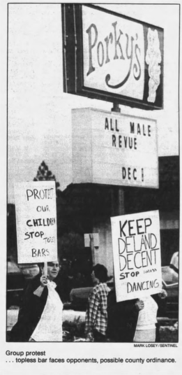
UAftK
LOSET
SENTNEL
Group protest
... topless bar faces opponents, possible county ordinance.
Topless bar hit by protest in county
By Ian Johnaon
Or THE SENTINEL STATE
DELAND — While topless dancers entertained patrons inside Porky's bar when it opened for the first time Monday, about 7S people stood outside, carrying placards objecting to the entertainment.
The protesters were organized by Pat Westbrook, head of Concerned Women for America. More protesters were encouraged to attend by their ministers, who last week drew up a resolution calling on the county council to ban topless dancing in Volusia County.
Westbrook said the county government should not allow topless dancing because such entertainment attracts prostitution, drug dealing and other crime.
Porky's is the only topless bar in unincorporated Volusia County.
In Daytona Beach, an ordinance being challenged in court has forced topless dancers to cover up, at least temporarily.
"The majority of the people don't want the bar," Westbrook said."It doesn't encourage the type of community we want here."
But bar owner Terry Jorgensen said local support for the bar has been strong. Jorgensen also said he would not permit the bar to become a den of prostitution and drug dealing. If such activity occurs, Jorgensen pledged to close the bar.
"I'm thankful I live in a country that allows them to protest," Jorgensen said, pointing to the protesters walking along the side of U.S. Highway 92. "1 just want them to allow us to do what we're doing."
The Rev. Dave Walker, president of the DeLand Ministerial Association, said he does not want to see the bar closed, only the topless dancing stopped.
Both sides said they will attend the county council meeting Thursday. Council members will hear from
Please see
BAR, 5
*f*fL
Sir
j
A k
lorgensen
The Orlando Sentinel (Orlando, Florida), Tues., Dec. 3, 1985, at 45
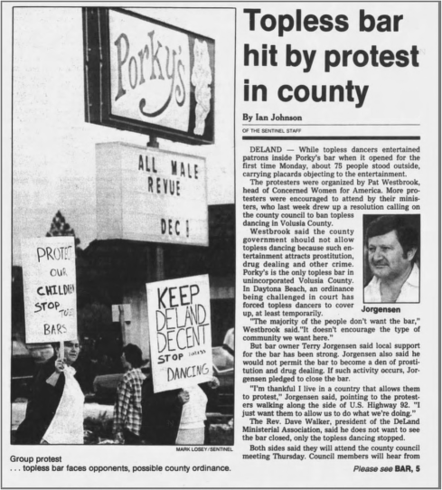
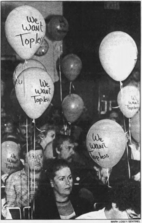
County outlaws topless dance bars
By Rick Tonyan
Of
TMf WNTBCL ST
tff
DELAND—After listening to about two hours of verbal dueling on the issue of topless dancing, the Volusia County Council on Thursday banned topless bars from unincorpor ated areas.
But a representative of the first top less bar to open in an unincorporated area said the show will continue Kay Samero, a spokesman for TDJ Inc., the corporation that runs Porky's, east of DeLand on U.S. Highway 92, said topless dancers will perform — at least until the ordinance banning the prac tice is filed with the Florida Secretary of State's office.
A local ordinance cannot take effect until it is filed with the secretary of state. The process usually takes about 10 days. During that time, dancers will perform and the corporation will seek a federal court injunction against enforcing the ordinance. Samero said
About ISO people, almost evenly divided between supporters and oppo nents. filled the council chambers and spilled into the lobby of the county's DeLand courthouse annex
Girls dressed as clowns stood outside the courthouse, handing out balloons with the slogan "We Want Top^ less" printed on them The slogan also appeared on a banner towed by an airplane that circled over downtown DeLand. An 18 wheel truck, its trailer decorated with banners that read "Protect Your Rights," was parked in front of the annex.
Most topless supporters who spoke before the council were employees of TDJ Inc. Opponents were a mixture
Topless dancer arrested at bar
A 23-year-old DeLand resident who works at Porky's Lounge was arrested early Thursday morning for topless dancing at an Orange City lounge.
Janice Lynn Daugherty, North Amelia Avenue, was arrested for violating the city's law against topless dancing in establishments that sell alcohol, police report. Daugherty is a dancer at the controversial Porky's Lounge outside DeLand city limits on U.S. Highway 92
A police officer reported going to Daly's Lounge. 641 N. Volusia Ave., to find a friend, and saw Daugherty dancing topless. After a quick telephone call to check city ordinances, the officer arrested Daugherty. She was released on her own recognizance and will ap pear in court.
of church group members and residents of neighborhoods near Porky's The ordinance prohibits businesses serving alcoholic beverages from hav ing either live or filmed performances featuring full or partial nudity. Coun cil members unanimously supported the ordinance and several of them said they would like to see a ban extended to cover other businesses, including movie theaters and bookstores. Those
Please see
TOPLESS, 3
Spectators, evenly divided, fill the county council chambers.
The Orlando Sentinel (Orlando, Florida), Fri., Jan. 10, 1986, at 149
Jorgenson v. Volusia County,
846 F. 2d 1350 (11th Cir. 1988)
Summary:
Porky's was a topless bar outside of DeLand, Florida. When Volusia County passed an ordinance prohibiting topless bars, Porky's challenged the constitutionality of the ordinance, represented by Latinsky and Fendt. The standard of review of the ordinance depended on whether Florida had delegated its powers under the 21st Amendment to counties and municipalities. In
City of Daytona Beach v. Del Percio,
the Florida Supreme Court held that it had, but Latinsky and Fendt argued that it hadn't, and did not cite
Del Percio.
The district court sanctioned them under Rule 11 for intentionally failing to cite controlling adverse precedent and the circuit court affirmed.
PER CURIAM:
The appellants, attorneys Eric Latinsky and Fred Fendt, were sanctioned by the district court pursuant to Fed. R. Civ. P. 11 for failing to cite adverse, controlling precedent in a memorandum filed in support of an application for a temporary restraining order and a preliminary injunction. In
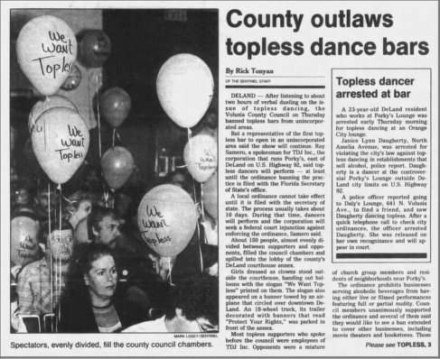
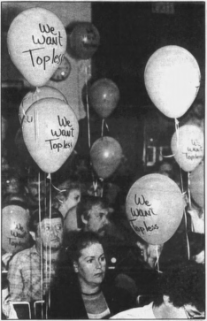
the appellants' initial appeal to this court, the case was remanded to the district court because the court had failed to notify the attorneys in advance that it was considering sanctions, and did not give them an opportunity to respond. On remand, the district court reaffirmed the imposition of sanctions, and the attorneys appeal. We affirm.
Appellants filed an application in the district court for a temporary restraining order and a preliminary injunction on behalf of their clients, who own and operate a lounge known as "Porky's." In support of the application, appellants filed a memorandum of law which challenged the validity of a Volusia County ordinance prohibiting nude or semi-nude entertainment in commercial establishments at which alcoholic beverages are offered for sale or consumption. The memorandum failed to discuss or cite two clearly relevant cases:
City of Daytona Beach v. Del Percio
and
New York State Liquor Authority v. Bellanca.
We find that this failure supports the imposition of Rule 11 sanctions in the circumstances of this case.
The field of law concerning the regulation of the sale and consumption of alcohol in connection with nude entertainment is a narrow and somewhat specialized field. Prior to the opinion of the Supreme Court of Florida in
Del Percio
, the critical question of whether the state of Florida had delegated its powers under the Twenty-First Amendment to counties and municipalities had gone unanswered. In some circles, that decision was long-awaited. If the state had delegated the authority, local ordinances regulating the sale or consumption of alcohol would be entitled to a presumption in favor of their validity which is conferred by the Twenty-First Amendment. If the state had not delegated the authority, the ordinances would be subject to the stricter review applicable to exercises of the general police power.
The question regarding Florida's delegation of its powers under the Twenty-First Amendment was answered by the Supreme court of Florida in
Del Percio,
a case in which one of the appellants, Latinsky, participated. The court held that the powers had been delegated. Less than one year later, on or about January 13, 1986, Latinsky and an associate brought the instant suit seeking a declaration that a similar ordinance was unconstitutional and requesting a temporary restraining order and a preliminary injunction. In their presentation to the court, the appellants cited a number of cases describing the limits on the exercise of the general police power. However, they did not advise the court in any way that
Del Percio
had been decided, despite the fact that
Del Percio
required that the validity of the ordinance be judged in light of powers retained under the Twenty-First Amendment rather than the general police power.
The appellants purported to describe the law to the district court in the hope that the description would guide and inform the court's decision. With apparently studied care, however, they withheld the fact that the long-awaited decision by the Supreme Court of Florida had been handed down. This will not do. The appellants are not redeemed by the fact that opposing counsel subsequently cited the controlling precedent. The appellants had a duty to refrain from affirmatively misleading the court as to the state of the law. They were not relieved of this duty by the possibility that opposing counsel might find and cite the controlling precedent, particularly where, as here, a temporary restraining order might have been issued ex parte.
In this court, appellants argue that the cases were not cited because they are not controlling.
We certainly acknowledge that attorneys are legitimately entitled to press their own interpretations of precedent, including interpretations which render particular cases inapplicable. It is clear, however, that appellants' attempts to show that
Del Percio
and
Bellanca
are not controlling are simply post hoc efforts to evade the imposition of sanctions. Neither the original complaint nor the memorandum of law filed by appellants in the district court reflect or support the arguments they now raise. Indeed, it is likely that the arguments were not raised previously because they are completely without merit. In the circumstances of this case, the imposition of Rule 11 sanctions by the district court was warranted. The judgment of the district court is affirmed.
Questions:
1. You can read newspaper articles about Porky's
here
and
here
.
After the court's ruling in 1986, the bar changed to a "bottle club," where patrons purchased alcohol elsewhere and mixed their own drinks, in order to avoid the ordinance, but soon closed. You can read a newspaper article about the disciplinary case against Latinsky and Fendt case here
.
The district court accused them of "reprehensible" conduct and imposed a $500 fine. Do you think that is adequate?
2.
Model Rule 3.3(a)(2)
provides: "A lawyer shall not knowingly fail to disclose to the tribunal legal authority in the controlling jurisdiction known to the lawyer to be directly adverse to the position of the client and not disclosed by opposing counsel." Latinsky and Fendt argued that the action challenging the ordinance was in federal court, so the decision of the Florida Supreme Court was not controlling. Should that have excused their failure to cite it? What if the district court had to independently determine whether Florida had delegated its authority?
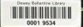
1
*
■ W si/*-—*
7h!ri ££l-;v Volume
1
Wi • • w •
Barbara Llndemanr. Paul Grossman
ABA
Section of Labor and Employment Law
Board of Ethics & Conduct v. Lane,
642 N.W.2d 296 (Iowa 2002)
Summary:
Lane represented Sicard in an employment discrimination action. Among other things he filed a post-trial brief, the entire contents of which were plagiarized from a treatise. Lane won the trial, and submitted a bill for attorney's fees, requesting $16,000 for 80 hours drafting the post-trial brief. When the court requested documentation of the drafting of the brief, Lane eventually submitted a list of 200 sources, from which the court discovered his plagiarism. The court sanctioned Lane's conduct and suspended his license for 6 months.
STREIT, Justice.
An Iowa attorney passed someone else's writing as his own and claimed he spent almost two weeks writing that which he used. The Iowa Supreme Court Board of Professional Ethics and Conduct filed a complaint with our Grievance Commission against respondent, William J. Lane, alleging he violated several ethical rules and recommended we suspend Lane's license to
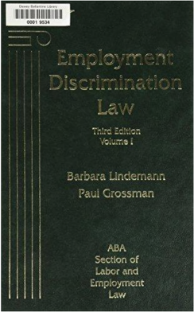
practice law for three months. We agree with the Commission's findings of misconduct but suspend Lane's license for six months.
I. Background Facts and Proceedings
After the conclusion of a trial in federal court in which Daniel Sicard claimed a violation of the Americans with Disabilities Act, attorney Lane submitted a post-trial brief to the court. The legal portion of the brief was in great part plagiarized from a treatise written by Barbara Lindemann and Paul Grossman. Lane later applied to the court for attorney fees. Among other charges, Lane requested compensation for eighty hours of work spent to prepare the questioned brief. Charging $200 per hour, Lane asked for $16,000 to write the brief that was largely copied from an uncredited source. In total, Lane requested $104,127 in attorney fees plus $13,363.29 in costs for his representation of Sicard.
On May 5, 1998, there was a hearing on Lane's attorney fee application. The United States magistrate judge stated it did not appear to him that Lane wrote the legal portions of the brief. Lane responded, "I borrowed liberally from other sources. Yes, your Honor." The court noted,
Because of the consistency of style and the sequence of footnotes, the court assumes that the brief is from a particular source. If the source is a published treatise, it can simply be identified by name, author, and publisher.
To address this suspicion, the judge ordered Lane to explain or identify the sources cited in his brief within ten days. At the end of the ten days, Lane did nothing to comply with the court's order. On June 4, 1998, a member of the judge's staff asked Lane if he intended to respond to the order. Only days later, a fire at Lane's home destroyed many of his files and records in the Sicard matter. In July 1998, Lane closed his office, but continued to practice out of his home.
Four months passed and Lane still did not respond to the judge's order. On September 30,
1998, the judge entered an order awarding Lane $20,000 in fees in the Sicard case. The judge stated "there were many serious problems with plaintiff's fees and cost claim." The court was particularly concerned because Lane did not support his contention he was entitled to receive compensation at the rate of $200 per hour for his services. Lane also requested $9000 as compensation for the time he spent preparing his bill. The judge stated Lane requested $16,000 for the lifted brief but failed to comply with the court's order to "disclose the sources from which counsel 'borrowed liberally.'" Lane also requested compensation for fifty-nine hours of legal research preceding the trial. The court concluded
It is not reasonable to bill 59 hours of legal research in the two weeks prior to trial. If counsel spent this amount for time performing research, it is further evidence that he does not possess the skill and experience of those who charge $200 per hour.
The court further explained its reduction of the attorney fees awarded by citing to Lane's charges of $5.00 per telephone call, $1.00 per page of facsimile transmissions, $191 for long
distance transmission, and $.50 per photocopy. Finally, the court stated Lane did not cite authority for the ability to charge for estimated pretrial travel expenses. Lane did not appeal the $20,000 award of attorney fees.
On October 30, 1998, Lane filed a compliance with the judge's order to document his sources but the judge was not made aware of the compliance until March 1999. When the judge read Lane's compliance he did not notice any reference to the primary source of the legal portion of Lane's brief. Lane's compliance constituted four pages of single-spaced lists of authorities. Among them was the Grossman treatise. However, no particular attention was drawn to this source. Consequently, the judge undertook his own investigation and discovered Lane took the legal portion of his brief verbatim from the Grossman treatise.
This complaint also involves Lane's representation in two separate and unrelated bankruptcy cases. The Ethics Board charged Lane with, among other violations, neglect of clients' legal matters, withdrawal from employment without taking reasonable steps to avoid prejudice to his clients and without promptly refunding unearned fees, and failure to seek the lawful objectives of his clients. The Commission found, and we agree, the Ethics Board failed to satisfy its burden to prove Lane violated any ethical rules in representing his clients in the bankruptcy matters. Therefore, we will only address the charges relevant to the Sicard case.
III. Complaint
The Ethics Board alleges violations of DR 1-102(A)(1), (3), (4), (5), and (6). This rule provides in part, a lawyer shall not:
• Violate a disciplinary rule;
• Engage in illegal conduct involving moral turpitude;
• Engage in conduct involving dishonesty, fraud, deceit or misrepresentation;
• Engage in conduct that is prejudicial to the administration of justice; and
• Engage in any other conduct that adversely reflects on the fitness to practice law.
The Ethics Board also charges Lane with a violation of DR 2-106(A) which states, "a lawyer shall not enter into an agreement for, charge, or collect an illegal or clearly excessive fee." The Commission found Lane violated DR 1-102(A)(1), (3), (4), (5), and (6) and DR 2-106(A) by his handling of the Sicard case.
IV. Ethical Violations
Lane plagiarized from a treatise and submitted his plagiarized work to the court as his own. This plagiarism constituted, among other things, a misrepresentation to the court. An attorney may not engage in conduct involving dishonesty, fraud, deceit, or misrepresentation. This issue is akin to the matter of ghost-writing attorneys who "author pleadings and necessarily guide the course of the litigation with unseen hand." In this situation, an attorney authors court documents for a pro se litigant who, in turn, submits the court document as his or her own writing. This practice is widely condemned as unethical and a "deliberate evasion of the responsibilities
imposed on attorneys." Just as ghost writing constitutes a misrepresentation on the court, so does plagiarism of the type we have before us.
Plagiarism itself is unethical. "Plagiarism, the adoption of the work of others as one's own, does involve an element of deceit, which reflects on an individual's honesty." Use of "appropriated material cannot go undisciplined, especially because honesty is so fundamental to the functioning of the legal profession." Undoubtedly, Lane's plagiarism reflects poorly on both his professional ethics and judgment.
It was not difficult to find similarity between Lane's post-trial brief and the Grossman treatise.
The legal argument of Lane's post-trial brief consisted of eighteen pages of plagiarized material, including both text and footnotes, from the treatise. In copying this material, Lane cherry-picked the relevant portions and renumbered the footnotes to reflect the altered text. Examination of Lane's brief does not reveal any independent labor or thought in the legal argument.
On the first occasion plagiarism became an issue, Lane appeared to be forthcoming with the court and admitted "he borrowed liberally from other sources." It also appears Lane attempted to identify the source of his writing before the court but was unable to recall the exact title of the treatise. Lane later had the chance to identify his source to the court, but when he responded to the court's order, he failed to specifically draw the court's attention to the Grossman treatise. Instead, Lane buried the title within a list of over 200 other sources. Though a technical compliance with the court's order, Lane's continued lack of candor indicates he hoped, by concealing the treatise among 200 other titles, the judge would not recognize the extent of Lane's plagiarism.
We do recognize Lane's personal circumstances shortly after the time of the court's order were not ideal. Lane's home was nearly destroyed by the fire forcing him and his family to live in a motel for two months. However, this does not excuse his failure to comply with the court's order in a timely fashion. We will not excuse the seriousness of passing off another's work as one's own. We find the record shows Lane knowingly plagiarized and intended to deceive the court.
Equally troubling is Lane's application for attorney fees. Lane copied the entire portion of his legal argument out of a book and then claimed it took him eighty hours to write the brief containing the copied material. He requested attorney fees for this work at the rate of $200 per hour. Other than Lane's assertions that perhaps he works less efficiently than other lawyers, there is little in the record to indicate Lane actually spent this amount of time writing the brief. Because he plagiarized the entire legal argument, the chances are remote that it took Lane eighty hours to write the argument. Rather, the facts show Lane stole all eighteen pages of his legal argument from a single source. Then to justify his request for attorney fees for the eighty hours it took to "write" the brief, Lane submitted a list of over 200 legal sources to the court. In doing so, Lane attempted to have the court believe he researched and relied on each of these sources in writing the brief. These circumstances only support the conclusion Lane endeavored to deceive the court.
The Ethics Board argues Lane's plagiarism was part of a larger scheme to defraud the court by means of inflated time and expense billings. When Lane requested compensation for time he did not spend working on the case, he violated the professional rule forbidding a lawyer from entering into an agreement for, charging, or collecting an illegal or clearly excessive fee. Even after the plagiarism issue arose, Lane continued to assert he was entitled to receive $200 for the eighty hours it took him to copy the material in his brief. He did not at any time admit that it did not take, nor could it have taken him that long to simply copy his legal argument out of a treatise. Charging such a clearly excessive bill brings Lane's integrity into question and the entire legal profession into disrepute.
It is important to note that Lane's request for attorney fees in this case is not similar to cases where the attorney is simply not awarded the fee requested. Lane relies on one particular case in which the district court reduced the attorney's fee application of over $171,000 to $95,000. The dispute in
Lynch
involved the attorney's expenditure of time, effort, and money in representing her client. There, the trial court properly considered several factors in reducing the award of attorney fees. These factors included: the time necessarily spent; the difficulty of handling and importance of the issues; the responsibility assumed and results obtained; the standing and experience of the attorney in the profession; and the customary charges for similar service. In
Lynch
, there was no suggestion of impropriety or intent to deceive the court on the part of the attorney who submitted the fee application. Moreover, the record contained no evidence to contradict the evidence supporting the fee application.
In many cases a fee application may not necessarily be a precise measure of the time an attorney spent on a particular case. Ethics concerns are not unavoidably raised where the court reduces the attorney fee award merely reflecting considerations that do not bring into question the attorney's honesty or integrity in submitting the fee application. On the other hand, although ethics is not a matter of degree of misstatement—any knowing misstatement to the court being unethical—the nature and depth of Lane's misrepresentation speaks of knowing deception.
The record before us amply supports the conclusion Lane's conduct rises to the level of intent to deceive. Action based in the hopes of deceiving the court are not the same as those arising from simple negligence or even recklessness. A lawyer who knowingly submits a fee application to the court and thereby attempts to misrepresent the amount of time he or she spent working on a case has committed serious ethical violations. Accordingly, we will not treat all of the cases the same. When the fee application involves culpable conduct, the seriousness of the offense will be considered in fashioning the appropriate sanction. We conclude the record supports the Commission's findings that Lane charged a clearly excessive fee in the
Sicard
case.
V. Discipline
In determining the proper sanction, we consider the particular facts and circumstances of each case. Among the factors we give weight to are the need for deterrence, protection of the public, maintenance of the reputation of the Bar as a whole, and the violator's fitness to continue to practice law. We also consider any aggravating or mitigating circumstances.
One such aggravating circumstance is a lawyer's prior disciplinary history. Lane has once before faced attorney disciplinary proceedings. In 1997, the Commission sanctioned Lane for failing to respond to an inquiry. He was publicly reprimanded for conduct prejudicial to the administration of justice and conduct adversely reflecting on his fitness to practice law.
A mitigating factor to consider is Lane's recognition of some wrongdoing. Lane filed "Respondent's Statement" with this court. Although not evidence, we will treat this statement as a supplemental brief. Lane stated,
I can accept that my behavior was the result of bad judgment, ignorance, even stupidity or carelessness, or sloppiness, or any number of things, such as laziness, negligence, arrogance, indolence, pettiness, or just plain old incompetence.
Lane asserted he did not intend to deceive the court and cited his reputation for honesty. In support of this contention, several character witnesses testified on Lane's behalf at the hearing before the Commission. Despite Lane's statements to the court, he still does not appear to comprehend the wrongfulness of his actions. In requesting excessive and unreasonable attorney fees for a brief he did not write, Lane was not negligent, or even reckless. Rather, more seriously, he intended to deceive. Lane's purported acknowledgment of misconduct fails to recognize the full extent of his wrongdoing.
Mitigating factors alone do not overcome our responsibility to the public and to the legal profession. Though Lane offered evidence of difficult personal circumstances, this does not excuse his unethical conduct. Taking all of the above factors into consideration, we conclude in cases of this type, fairness and justice require discipline be imposed to deter future misconduct, protect the public, and maintain the reputation of the Bar as a whole. Lane's excessive billing for writing a largely plagiarized brief cannot go undisciplined. Honesty is fundamental to the functioning of the legal profession, and Lane's conduct in this case has compromised that honesty. Moreover, Lane has jeopardized the integrity of the Bar and the public's trust in the legal profession. We conclude a six-month license suspension is warranted. We therefore suspend Lane's license to practice law in the State of Iowa, with no possibility of reinstatement for a period of six months from the date of the filing of this opinion. Upon application for reinstatement, Lane shall have the burden to prove he has not practiced law during the period of suspension and that he meets the requirements of Iowa Court Rule 35.13. Any hearing on application for reinstatement shall be at least sixty days after the filing of such application.
Questions:
1. Did the court sanction Lane for plagiarizing the contents of the brief, billing for hours he didn't work, or lack of candor to the court?
2. The court stated that "plagiarism itself is unethical." Do you agree? Does it depend on the context? The court relied on cases involving law students who plagiarized in coursework. Is that an appropriate comparison?
3. Lane's plagiarized brief was apparently effective, as he won the case. As Lane's client, would you have been upset to learn that he plagiarized the brief, if he only billed you for the number of hours he actually spent drafting the brief? Should the court have censured Lane for plagiarism, if he had only billed for the number of hours he actually spent drafting the brief?
4. Why did Lane plagiarize the treatise rather than quoting it? Would citing the treatise have made Lane's argument weaker or stronger?
Further Reading:
•
Brian L. Frye,
Plagiarism is Not a Crime,
54 Dug. L. Rev. 133 (2016)
6.4: Client Perjury
If the truth will hurt someone you love, tell a lie.
96
Under the Model Rule of Professional Conduct 3.3, attorneys may not permit their clients to testify falsely or introduce false evidence. And under Model Rule 4.1, attorneys may be required to withdraw from representation, if they knows that their client has or will introduce false evidence. As the Restatement of the Law Governing Lawyers § 120 observes, "A lawyer may not knowingly counsel or assist a witness to testify falsely or otherwise to offer false evidence."
What should attorneys do, if they know that their client or a witness has or will introduce false evidence? In many cases, they can simply refuse to introduce the evidence in question. If their client plans to lie, they can refuse to call their client, and they can counsel their client not to lie. If their client does lie, they can ask the client to retract the false evidence. And if the client refuses, the attorney may withdraw from representation. If the false evidence could materially affect the outcome, the attorney must also disclose it to the court.
Criminal cases are more complicated, because criminal defendants have a constitutional right to testify under the Sixth Amendment. Attorneys should still advise criminal defendants not to lie. But if they know that their client intends to lie, some jurisdiction permit the client to testify in narrative form, so long as the attorney does not rely on the perjured testimony.
Some legal scholars, most notably the late Monroe Freedman, argue that an attorney's duty of loyalty to the client must trump the attorney's duty of candor to the court. Accordingly, attorneys should put criminal clients on the stand without notifying the court, even if they know the client will testify falsely. A few scholars argue that attorneys should simply refuse to call their client at all, if they know the client plans to lie.
Each time I
was
wrong or each time that I lied or somebody made me scared, I would simply report them to Rosemary Woods, and she would make them disappear
97
Model Rule 3.3: Candor Toward the Tribunal
a. A lawyer shall not knowingly:
1. make a false statement of fact or law to a tribunal or fail to correct a false statement of material fact or law previously made to the tribunal by the lawyer;
2. fail to disclose to the tribunal legal authority in the controlling jurisdiction known to the lawyer to be directly adverse to the position of the client and not disclosed by opposing counsel; or
3. offer evidence that the lawyer knows to be false. If a lawyer, the lawyer's client, or a witness called by the lawyer, has offered material evidence and the lawyer
The Chromatics,
Tell a Lie
(1956).
97
Bill Horwitz,
If I Had a Friend Like Rosemary Woods,
Lies, Lies, Lies (1975).
comes to know of its falsity, the lawyer shall take reasonable remedial measures, including, if necessary, disclosure to the tribunal. A lawyer may refuse to offer evidence, other than the testimony of a defendant in a criminal matter, that the lawyer reasonably believes is false.
b. A lawyer who represents a client in an adjudicative proceeding and who knows that a person intends to engage, is engaging or has engaged in criminal or fraudulent conduct related to the proceeding shall take reasonable remedial measures, including, if necessary, disclosure to the tribunal.
c. The duties stated in paragraphs (a) and (b) continue to the conclusion of the proceeding, and apply even if compliance requires disclosure of information otherwise protected by Rule 1.6.
d. In an ex parte proceeding, a lawyer shall inform the tribunal of all material facts known to the lawyer that will enable the tribunal to make an informed decision, whether or not the facts are adverse.
Model Rule 3.3: Comments
5. Paragraph (a)(3) requires that the lawyer refuse to offer evidence that the lawyer knows to be false, regardless of the client's wishes. This duty is premised on the lawyer's obligation as an officer of the court to prevent the trier of fact from being misled by false evidence. A lawyer does not violate this Rule if the lawyer offers the evidence for the purpose of establishing its falsity.
6. If a lawyer knows that the client intends to testify falsely or wants the lawyer to introduce false evidence, the lawyer should seek to persuade the client that the evidence should not be offered. If the persuasion is ineffective and the lawyer continues to represent the client, the lawyer must refuse to offer the false evidence. If only a portion of a witness's testimony will be false, the lawyer may call the witness to testify but may not elicit or otherwise permit the witness to present the testimony that the lawyer knows is false.
7. The duties stated in paragraphs (a) and (b) apply to all lawyers, including defense counsel in criminal cases. In some jurisdictions, however, courts have required counsel to present the accused as a witness or to give a narrative statement if the accused so desires, even if counsel knows that the testimony or statement will be false. The obligation of the advocate under the Rules of Professional Conduct is subordinate to such requirements.
8. The prohibition against offering false evidence only applies if the lawyer knows that the evidence is false. A lawyer's reasonable belief that evidence is false does not preclude its presentation to the trier of fact. A lawyer's knowledge that evidence is false, however, can be inferred from the circumstances. Thus, although a lawyer should resolve doubts about the veracity of testimony or other evidence in favor of the client, the lawyer cannot ignore an obvious falsehood.
9. Although paragraph (a)(3) only prohibits a lawyer from offering evidence the lawyer knows to be false, it permits the lawyer to refuse to offer testimony or other proof that the lawyer reasonably believes is false. Offering such proof may reflect adversely on the lawyer's ability to discriminate in the quality of evidence and thus impair the lawyer's
effectiveness as an advocate. Because of the special protections historically provided criminal defendants, however, this Rule does not permit a lawyer to refuse to offer the testimony of such a client where the lawyer reasonably believes but does not know that the testimony will be false. Unless the lawyer knows the testimony will be false, the lawyer must honor the client's decision to testify.
Model Rule 4.1: Truthfulness in Statements to Others
In the course of representing a client a lawyer shall not knowingly:
a. make a false statement of material fact or law to a third person; or
b. fail to disclose a material fact to a third person when disclosure is necessary to avoid assisting a criminal or fraudulent act by a client, unless disclosure is prohibited.
Model Rule 4.1: Comments
Crime or Fraud by Client
1. Under Rule 1.2(d), a lawyer is prohibited from counseling or assisting a client in conduct that the lawyer knows is criminal or fraudulent. Paragraph (b) states a specific application of the principle set forth in Rule 1.2(d) and addresses the situation where a client's crime or fraud takes the form of a lie or misrepresentation. Ordinarily, a lawyer can avoid assisting a client's crime or fraud by withdrawing from the representation. Sometimes it may be necessary for the lawyer to give notice of the fact of withdrawal and to disaffirm an opinion, document, affirmation or the like. In extreme cases, substantive law may require a lawyer to disclose information relating to the representation to avoid being deemed to have assisted the client's crime or fraud. If the lawyer can avoid assisting a client's crime or fraud only by disclosing this information, then under paragraph (b) the lawyer is required to do so, unless the disclosure is prohibited by Rule 1.6.
Restatement (Third) of the Law Governing Lawyers § 120 (2000): False Testimony or Evidence
1. A lawyer may not:
a. knowingly counsel or assist a witness to testify falsely or otherwise to offer false evidence;
b. knowingly make a false statement of fact to the tribunal;
c. offer testimony or other evidence as to an issue of fact known by the lawyer to be false.
2. If a lawyer has offered testimony or other evidence as to a material issue of fact and comes to know of its falsity, the lawyer must take reasonable remedial measures and may disclose confidential client information when necessary to take such a measure.
3. A lawyer may refuse to offer testimony or other evidence that the lawyer reasonably believes is false, even if the lawyer does not know it to be false.
Further Reading:
•
Harry I. Subin,
The Lawyer as Superego: Disclosure of Client Confidences to Prevent
Harm,
70 Iowa L. Rev. 1091 (1985)
•
H. Lowell Brown,
The Dilemma of Corporate Counsel Faced with Client Misconduct:
Disclosure of Client Confidences or Constructive Discharge
, 44 Buffalo L. Rev. 777
(1996)
•
Thomas L. Shaffer,
On Lying for Clients,
71 Notre Dame L. Rev. 195 (1995-1996)
•
Richard H. Underwood,
Perjury! The Charges and the Defenses
, 36 Dug. L. Rev. 715
(1998)
• Barry Adler,
The Ethics of Perjury,
71 ABA Journal 76 (November 1985)
•
Monroe H. Freedman,
Professional Responsibility of the Criminal Defense Lawyer: The
Three Hardest Questions,
64 Mich. L. Rev. 1469 (1966)
•
Monroe H. Freedman,
Getting Honest About Client Perjury,
21 Geo. J. Legal Ethics 133
(2008)
•
Ray McKoski,
Prospective Perjury by a Criminal Defendant: It's All about the Lawyer,
44
Ariz. St. L.J. 1575 (2012)
Nix v. Whiteside
Courtroom Drawing Nix v. Whiteside
,
475 U.S. 157 (1986)
Summary:
Emmanuel Charles Whiteside was charged with the murder of Calvin Love, and was represented by Gary L. Robinson and Donna Paulsen. Whiteside pleaded selfdefense. Initially, he told Robinson that he believed Love had a gun, but had not actually seen one. Later, he told Robinson that he had seen "something metallic." Robinson advised Whiteside that this testimony would be perjury, and that he would inform the court and withdraw from representation if Whiteside committed perjury. Whiteside did not testify that he had seen "something metallic," and was convicted of second-degree murder. The Supreme Court of Iowa affirmed the conviction. Whiteside filed a federal habeas petition alleging ineffective assistance of counsel. The district court denied the writ, but the circuit court reversed. The Supreme Court granted certiorari and reversed,
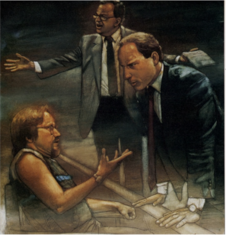
holding that criminal defendant does not have a right to commit perjury, so Whiteside's
right to counsel was not infringed.
We granted certiorari to decide whether the Sixth Amendment right of a criminal defendant to assistance of counsel is violated when an attorney refuses to cooperate with the defendant in presenting perjured testimony at his trial.
Whiteside was convicted of second-degree murder by a jury verdict which was affirmed by the Iowa courts. The killing took place on February 8, 1977, in Cedar Rapids, Iowa. Whiteside and two others went to one Calvin Love's apartment late that night, seeking marihuana. Love was in bed when Whiteside and his companions arrived; an argument between Whiteside and Love over the marihuana ensued. At one point, Love directed his girlfriend to get his "piece," and at another point got up, then returned to his bed. According to Whiteside's testimony, Love then started to reach under his pillow and moved toward Whiteside. Whiteside stabbed Love in the chest, inflicting a fatal wound.
Whiteside was charged with murder, and when counsel was appointed he objected to the lawyer initially appointed, claiming that he felt uncomfortable with a lawyer who had formerly been a prosecutor. Gary L. Robinson was then appointed and immediately began an investigation. Whiteside gave him a statement that he had stabbed Love as the latter "was pulling a pistol from underneath the pillow on the bed." Upon questioning by Robinson, however, Whiteside indicated that he had not actually seen a gun, but that he was convinced that Love had a gun. No pistol was found on the premises; shortly after the police search following the stabbing, which had revealed no weapon, the victim's family had removed all of the victim's possessions from the apartment. Robinson interviewed Whiteside's companions who were present during the stabbing, and none had seen a gun during the incident. Robinson advised Whiteside that the existence of a gun was not necessary to establish the claim of self-defense, and that only a reasonable belief that the victim had a gun nearby was necessary even though no gun was actually present.
Until shortly before trial, Whiteside consistently stated to Robinson that he had not actually seen a gun, but that he was convinced that Love had a gun in his hand. About a week before trial, during preparation for direct examination, Whiteside for the first time told Robinson and his associate Donna Paulsen that he had seen something "metallic" in Love's hand. When asked about this, Whiteside responded:
In Howard Cook's case there was a gun. If I don't say I saw a gun, I'm dead.
Robinson told Whiteside that such testimony would be perjury and repeated that it was not necessary to prove that a gun was available but only that Whiteside reasonably believed that he was in danger. On Whiteside's insisting that he would testify that he saw "something metallic" Robinson told him, according to Robinson's testimony:
We could not allow him to testify falsely because that would be perjury, and as officers of the court we would be suborning perjury if we allowed him to do it. I advised him that if he did do that it would be my duty to advise the Court of what he was doing and that I felt he was committing perjury; also, that I probably would be allowed to attempt to impeach that particular testimony.
Robinson also indicated he would seek to withdraw from the representation if Whiteside insisted on committing perjury.
Whiteside testified in his own defense at trial and stated that he "knew" that Love had a gun and that he believed Love was reaching for a gun and he had acted swiftly in self-defense. On cross-examination, he admitted that he had not actually seen a gun in Love's hand. Robinson presented evidence that Love had been seen with a sawed-off shotgun on other occasions, that the police search of the apartment may have been careless, and that the victim's family had removed everything from the apartment shortly after the crime. Robinson presented this evidence to show a basis for Whiteside's asserted fear that Love had a gun.
The jury returned a verdict of second-degree murder, and Whiteside moved for a new trial, claiming that he had been deprived of a fair trial by Robinson's admonitions not to state that he saw a gun or "something metallic." The trial court held a hearing, heard testimony by Whiteside and Robinson, and denied the motion. The trial court made specific findings that the facts were as related by Robinson.
The Supreme Court of Iowa affirmed respondent's conviction. That court held that the right to have counsel present all appropriate defenses does not extend to using perjury, and that an attorney's duty to a client does not extend to assisting a client in committing perjury. Relying on the Iowa Code of Professional Responsibility for Lawyers, which expressly prohibits an attorney from using perjured testimony, and the Iowa Code, which criminalizes subornation of perjury, the Iowa court concluded that not only were Robinson's actions permissible, but were required. The court commended "both Mr. Robinson and Ms. Paulsen for the high ethical manner in which this matter was handled."
Whiteside then petitioned for a writ of habeas corpus in the United States District Court for the Southern District of Iowa. In that petition Whiteside alleged that he had been denied effective assistance of counsel and of his right to present a defense by Robinson's refusal to allow him to testify as he had proposed. The District Court denied the writ. Accepting the state trial court's factual finding that Whiteside's intended testimony would have been perjurious, it concluded that there could be no grounds for habeas relief since there is no constitutional right to present a perjured defense.
The United States Court of Appeals for the Eighth Circuit reversed and directed that the writ of habeas corpus be granted. The Court of Appeals accepted the findings of the trial judge, affirmed by the Iowa Supreme Court, that trial counsel believed with good cause that Whiteside would testify falsely and acknowledged that under
Harris v. New York
, a criminal defendant's
privilege to testify in his own behalf does not include a right to commit perjury. Nevertheless, the court reasoned that an intent to commit perjury, communicated to counsel, does not alter a defendant's right to effective assistance of counsel and that Robinson's admonition to Whiteside that he would inform the court of Whiteside's perjury constituted a threat to violate the attorney's duty to preserve client confidences. According to the Court of Appeals, this threatened violation of client confidences breached the standards of effective representation set down in
Strickland v. Washington.
The court also concluded that
Strickland's
prejudice requirement was satisfied by an implication of prejudice from the conflict between Robinson's duty of loyalty to his client and his ethical duties. A petition for rehearing en banc was denied. We granted certiorari and we reverse.
A
The right of an accused to testify in his defense is of relatively recent origin. Until the latter part of the preceding century, criminal defendants in this country, as at common law, were considered to be disqualified from giving sworn testimony at their own trial by reason of their interest as a party to the case. Iowa was among the states that adhered to this rule of disqualification.
By the end of the 19th century, however, the disqualification was finally abolished by statute in most states and in the federal courts. Although this Court has never explicitly held that a criminal defendant has a due process right to testify in his own behalf, cases in several Circuits have so held, and the right has long been assumed. We have also suggested that such a right exists as a corollary to the Fifth Amendment privilege against compelled testimony.
B.
We turn next to the question presented: the definition of the range of "reasonable professional" responses to a criminal defendant client who informs counsel that he will perjure himself on the stand. We must determine whether, in this setting, Robinson's conduct fell within the wide range of professional responses to threatened client perjury acceptable under the Sixth Amendment.
In
Strickland
, we recognized counsel's duty of loyalty and his "overarching duty to advocate the defendant's cause." Plainly, that duty is limited to legitimate, lawful conduct compatible with the very nature of a trial as a search for truth. Although counsel must take all reasonable lawful means to attain the objectives of the client, counsel is precluded from taking steps or in any way assisting the client in presenting false evidence or otherwise violating the law. This principle has consistently been recognized in most unequivocal terms by expositors of the norms of professional conduct since the first Canons of Professional Ethics were adopted by the American Bar Association in 1908. The 1908 Canon 32 provided:
No client, corporate or individual, however powerful, nor any cause, civil or political, however important, is entitled to receive nor should any lawyer render any service or advice involving disloyalty to the law whose ministers we are, or disrespect of the judicial office, which we are bound to uphold, or corruption of any person or persons exercising
a public office or private trust, or deception or betrayal of the public. He must observe and advise his client to observe the statute law.
Of course, this Canon did no more than articulate centuries of accepted standards of conduct. Similarly, Canon 37, adopted in 1928, explicitly acknowledges as an exception to the attorney's duty of confidentiality a client's announced intention to commit a crime:
The announced intention of a client to commit a crime is not included within the confidences which the attorney is bound to respect.
These principles have been carried through to contemporary codifications of an attorney's professional responsibility. Disciplinary Rule 7-102 of the Model Code of Professional Responsibility (1980), entitled "Representing a Client Within the Bounds of the Law," provides:
(A) In his representation of a client, a lawyer shall not:
(4) Knowingly use perjured testimony or false evidence.
(7) Counsel or assist his client in conduct that the lawyer knows to be illegal or fraudulent.
This provision has been adopted by Iowa, and is binding on all lawyers who appear in its courts.
The more recent Model Rules of Professional Conduct (1983) similarly admonish attorneys to obey all laws in the course of representing a client:
RULE 1.2 Scope of Representation
(d) A lawyer shall not counsel a client to engage, or assist a client, in conduct that the lawyer knows is criminal or fraudulent.
Both the Model Code of Professional Responsibility and the Model Rules of Professional Conduct also adopt the specific exception from the attorney-client privilege for disclosure of perjury that his client intends to commit or has committed. Indeed, both the Model Code and the Model Rules do not merely authorize disclosure by counsel of client perjury; they require such disclosure.
These standards confirm that the legal profession has accepted that an attorney's ethical duty to advance the interests of his client is limited by an equally solemn duty to comply with the law and standards of professional conduct; it specifically ensures that the client may not use false evidence. This special duty of an attorney to prevent and disclose frauds upon the court derives from the recognition that perjury is as much a crime as tampering with witnesses or jurors by way of promises and threats, and undermines the administration of justice. The offense of perjury was a crime recognized at common law, and has been made a felony in most states by statute, including Iowa. An attorney who aids false testimony by questioning a witness when perjurious responses can be anticipated risks prosecution for subornation of perjury.
It is universally agreed that at a minimum the attorney's first duty when confronted with a proposal for perjurious testimony is to attempt to dissuade the client from the unlawful course of conduct. Withdrawal of counsel when this situation arises at trial gives rise to many difficult questions including possible mistrial and claims of double jeopardy.
The essence of the brief amicus of the American Bar Association reviewing practices long accepted by ethical lawyers is that under no circumstance may a lawyer either advocate or passively tolerate a client's giving false testimony. This, of course, is consistent with the governance of trial conduct in what we have long called "a search for truth." The suggestion sometimes made that "a lawyer must believe his client, not judge him" in no sense means a lawyer can honorably be a party to or in any way give aid to presenting known perjury.
Considering Robinson's representation of respondent in light of these accepted norms of professional conduct, we discern no failure to adhere to reasonable professional standards that would in any sense make out a deprivation of the Sixth Amendment right to counsel. Whether Robinson's conduct is seen as a successful attempt to dissuade his client from committing the crime of perjury, or whether seen as a "threat" to withdraw from representation and disclose the illegal scheme, Robinson's representation of Whiteside falls well within accepted standards of professional conduct and the range of reasonable professional conduct acceptable under Strickland.
The Court of Appeals assumed for the purpose of the decision that Whiteside would have given false testimony had counsel not intervened; its opinion denying a rehearing en banc states:
We presume that appellant would have testified falsely. Counsel's actions prevented Whiteside from testifying falsely. We hold that counsel's action deprived appellant of due process and effective assistance of counsel. Counsel's actions also impermissibly compromised appellant's right to testify in his own defense by conditioning continued representation by counsel and confidentiality upon appellant's restricted testimony.
While purporting to follow Iowa's highest court "on all questions of state law," the Court of Appeals reached its conclusions on the basis of federal constitutional due process and right to counsel.
The Court of Appeals' holding that Robinson's "action deprived Whiteside of due process and effective assistance of counsel" is not supported by the record since Robinson's action, at most, deprived Whiteside of his contemplated perjury. Nothing counsel did in any way undermined Whiteside's claim that he believed the victim was reaching for a gun. Similarly, the record gives no support for holding that Robinson's action "also impermissibly compromised Whiteside's right to testify in his own defense by conditioning continued representation and confidentiality upon Whiteside's restricted testimony." The record in fact shows the contrary: (a) that Whiteside did testify, and (b) he was "restricted" or restrained only from testifying falsely and was aided by Robinson in developing the basis for the fear that Love was reaching for a gun. Robinson divulged no client communications until he was compelled to do so in response to Whiteside's
post-trial challenge to the quality of his performance. We see this as a case in which the attorney successfully dissuaded the client from committing the crime of perjury.
Paradoxically, even while accepting the conclusion of the Iowa trial court that Whiteside's proposed testimony would have been a criminal act, the Court of Appeals held that Robinson's efforts to persuade Whiteside not to commit that crime were improper, first, as forcing an impermissible choice between the right to counsel and the right to testify; and, second, as compromising client confidences because of Robinson's threat to disclose the contemplated perjury. Whatever the scope of a constitutional right to testify, it is elementary that such a right does not extend to testifying falsely. In
Harris v. New York,
we assumed the right of an accused to testify "in his own defense, or to refuse to do so" and went on to hold:
That privilege cannot be construed to include the right to commit perjury. Having
voluntarily taken the stand, petitioner was under an obligation to speak truthfully.
In
Harris
we held the defendant could be impeached by prior contrary statements which had been ruled inadmissible under
Miranda v. Arizona. Harris
and other cases make it crystal clear that there is no right whatever -- constitutional or otherwise -- for a defendant to use false evidence.
The paucity of authority on the subject of any such "right" may be explained by the fact that such a notion has never been responsibly advanced; the right to counsel includes no right to have a lawyer who will cooperate with planned perjury. A lawyer who would so cooperate would be at risk of prosecution for suborning perjury, and disciplinary proceedings, including suspension or disbarment.
Robinson's admonitions to his client can in no sense be said to have forced respondent into an impermissible choice between his right to counsel and his right to testify as he proposed for there was no permissible choice to testify falsely. For defense counsel to take steps to persuade a criminal defendant to testify truthfully, or to withdraw, deprives the defendant of neither his right to counsel nor the right to testify truthfully. In
United States v. Havens,
we made clear that "when defendants testify, they must testify truthfully or suffer the consequences." When an accused proposes to resort to perjury or to produce false evidence, one consequence is the risk of withdrawal of counsel.
On this record, the accused enjoyed continued representation within the bounds of reasonable professional conduct and did in fact exercise his right to testify; at most he was denied the right to have the assistance of counsel in the presentation of false testimony. Similarly, we can discern no breach of professional duty in Robinson's admonition to respondent that he would disclose respondent's perjury to the court. The crime of perjury in this setting is indistinguishable in substance from the crime of threatening or tampering with a witness or a juror. A defendant who informed his counsel that he was arranging to bribe or threaten witnesses or members of the jury would have no "right" to insist on counsel's assistance or silence. Counsel would not be limited to advising against that conduct. An attorney's duty of confidentiality, which totally covers
the client's admission of guilt, does not extend to a client's announced plans to engage in future criminal conduct. In short, the responsibility of an ethical lawyer, as an officer of the court and a key component of a system of justice, dedicated to a search for truth, is essentially the same whether the client announces an intention to bribe or threaten witnesses or jurors or to commit or procure perjury. No system of justice worthy of the name can tolerate a lesser standard.
The rule adopted by the Court of Appeals, which seemingly would require an attorney to remain silent while his client committed perjury, is wholly incompatible with the established standards of ethical conduct and the laws of Iowa and contrary to professional standards promulgated by that State. The position advocated by petitioner, on the contrary, is wholly consistent with the Iowa standards of professional conduct and law, with the overwhelming majority of courts, and with codes of professional ethics. Since there has been no breach of any recognized professional duty, it follows that there can be no deprivation of the right to assistance of counsel under the Strickland standard.
Conclusion
Whiteside's attorney treated Whiteside's proposed perjury in accord with professional standards, and since Whiteside's truthful testimony could not have prejudiced the result of his trial, the Court of Appeals was in error to direct the issuance of a writ of habeas corpus and must be reversed.
JUSTICE BRENNAN, concurring in the judgment.
This Court has no constitutional authority to establish rules of ethical conduct for lawyers practicing in the state courts. Nor does the Court enjoy any statutory grant of jurisdiction over legal ethics.
Accordingly, it is not surprising that the Court emphasizes that it "must be careful not to narrow the wide range of conduct acceptable under the Sixth Amendment so restrictively as to constitutionalize particular standards of professional conduct and thereby intrude into the state's proper authority to define and apply the standards of professional conduct applicable to those it admits to practice in its courts." I read this as saying in another way that the Court cannot tell the States or the lawyers in the States how to behave in their courts, unless and until federal rights are violated.
Unfortunately, the Court seems unable to resist the temptation of sharing with the legal community its vision of ethical conduct. But let there be no mistake: the Court's essay regarding what constitutes the correct response to a criminal client's suggestion that he will perjure himself is pure discourse without force of law. As JUSTICE BLACKMUN observes, that issue is a thorny one, but it is not an issue presented by this case. Lawyers, judges, bar associations, students, and others should understand that the problem has not now been "decided."
I join JUSTICE BLACKMUN's concurrence because I agree that respondent has failed to prove the kind of prejudice necessary to make out a claim under
Strickland v. Washington.
JUSTICE BLACKMUN, with whom JUSTICE BRENNAN, JUSTICE MARSHALL, and JUSTICE STEVENS join, concurring in the judgment.
How a defense attorney ought to act when faced with a client who intends to commit perjury at trial has long been a controversial issue. But I do not believe that a federal habeas corpus case challenging a state criminal conviction is an appropriate vehicle for attempting to resolve this thorny problem. When a defendant argues that he was denied effective assistance of counsel because his lawyer dissuaded him from committing perjury, the only question properly presented to this Court is whether the lawyer's actions deprived the defendant of the fair trial which the Sixth Amendment is meant to guarantee. Since I believe that the respondent in this case suffered no injury justifying federal habeas relief, I concur in the Court's judgment.
I
On February 7, 1977, Emmanual Charles Whiteside stabbed Calvin Love to death. At trial, Whiteside claimed self-defense. On direct examination, he testified that Love's bedroom, where the stabbing had occurred, was "very much dark, and that he had stabbed Love during an argument because he believed that Love was about to attack him with a weapon:
Q. Did you think that Calvin had a gun?
A. Most definitely I thought that.
Q. Why did you think that?
A. Because of Calvin's reputation, his brother's reputation, because of the prior conversation that Calvin and I had, I didn't have no other choice but to think he had a gun. And when he told his girlfriend to give him his piece, I couldn't retreat.
Whiteside's testimony was consistent with that of other witnesses who testified that the room was dark, and that Love had asked his girlfriend to get his "piece" (which they all believed referred to a weapon). No gun, however, was ever found.
Whiteside, who had been charged with first-degree murder, was convicted of second-degree murder, and sentenced to 40 years' imprisonment. He moved for a new trial, contending that his court-appointed attorneys, Gary Robinson and Donna Paulsen, had improperly coerced his testimony. Whiteside now claimed that he had seen a gun, but had been prevented from testifying to this fact.
At an evidentiary hearing on this motion, Whiteside testified that he had told Robinson at their first meeting that he had seen a weapon in Love's hand. Some weeks later, Robinson informed Whiteside that the weapon could not be found and, according to Whiteside, told him to say only that he thought he had seen a gun, rather than that he in fact had seen one. Whiteside "got the
impression at one time that maybe if I didn't go along with — with what was happening, that it was no gun being involved, maybe that he will pull out of my trial."
Robinson's testimony contradicted Whiteside's. According to Robinson, Whiteside did not initially claim to have seen a gun, but rather claimed only that he was convinced Love had had one. Roughly a week before the trial, however, in the course of reviewing Whiteside's testimony, Whiteside "made reference to seeing something 'metallic' I don't think he ever did say a gun":
And at the end Donna asked him about that, because that was the first time it had ever been mentioned either to her or to myself. His response to that was, "in Howard Cook's case there was a gun. If I don't say I saw a gun, I'm dead." I explained to him at that time that it was not necessary that the gun be physically present for self-defense, one; two, that to say that would be perjury on his part because he had never at any time indicated that there was a gun; three, that we could not allow him to do that; four, I advised him that if he did do that it would be my duty to advise the Court of what he was doing; also, that I probably would be allowed to attempt to impeach that particular testimony. I told him that there was no need for him to lie about what had happened, that he had a good and valid defense on the facts as he had related them to us, and we felt we could present a good self-defense case on the facts he had stated to us.
Robinson acknowledged that Whiteside's claim of self-defense would have been stronger had the gun been found, but explained that at trial "we tried to create a gun," through testimony from people who had seen Love carrying a gun on other occasions, through a stipulation that Love had been convicted of possession of a weapon, and through suggestions made during crossexamination of the State's witnesses that the initial police search had been too cursory to discover the weapon and that Love's girlfriend had removed it from the apartment prior to a second, more thorough, search.
The trial court rejected Whiteside's motion for a new trial, "finding the facts to be as testified to by Ms. Paulsen and Mr. Robinson." The Iowa Supreme Court affirmed.
Whiteside then sought federal habeas relief in the United States District Court for the Southern District of Iowa. The parties agreed to rest on the record made in the state-court proceedings. Chief Judge Stuart held that the trial judge's factual finding that Whiteside would have committed perjury had he testified at trial actually to having seen a gun was fairly supported by the record and thus entitled to a presumption of correctness. Since Whiteside had no constitutional right to perjure himself, he had been denied neither a fair trial nor effective assistance of counsel.
The Court of Appeals for the Eighth Circuit reversed. The court recognized that the issue before it was not whether Robinson had behaved ethically,
98
but rather whether Whiteside had been
98
The court stated:
That question is governed solely by the Iowa Code of Professional Responsibility, as it was in effect at the time of the trial in this case, and as it has been authoritatively interpreted by the
deprived of effective assistance of counsel. In the Court of Appeals' view, Robinson had breached the obligations of confidentiality and zealous advocacy imposed on defense counsel by the Sixth Amendment. In addition, the Court of Appeals concluded that Robinson's actions impermissibly compromised Whiteside's constitutional right to testify in his own behalf by conditioning continued representation and confidentiality on Whiteside's limiting his testimony.
The court recognized that, under
Strickland v. Washington
, a defendant must normally demonstrate both that his attorney's behavior was professionally unreasonable and that he was prejudiced by his attorney's unprofessional behavior. But it noted that
Strickland v. Washington had recognized a "limited" presumption of prejudice when counsel is burdened by an actual conflict of interest that adversely affects his performance. Here, Whiteside had shown that Robinson's obligations under the Iowa Code of Professional Responsibility conflicted with his client's wishes, and his threat to testify against Whiteside had adversely affected Whiteside by "undermining the fundamental trust between lawyer and client" necessary for effective representation.
Petitioner's motion for rehearing en banc was denied by a vote of 5 to 4. In dissent, Judge John R. Gibson, joined by Judges Ross, Fagg, and Bowman, argued that Whiteside had failed to show cognizable prejudice.
Cuyler v. Sullivan
was inapposite, both because finding a conflict of interest required making the untenable assumption that Whiteside possessed the right to testify falsely and because Robinson's threat had had no adverse effect on the trial since Whiteside testified fully in his defense. Moreover, the result of the proceeding should not have been different had Whiteside been permitted to testify as he wished.
A separate dissent by Judge Fagg, joined by Judges Ross, John R. Gibson, and Bowman, addressed the performance prong of
Strickland.
Robinson's admonition to Whiteside to testify truthfully simply could not be viewed as creating a conflict of interest; Robinson presented a full and zealous defense at trial; and, although Robinson's warning to Whiteside may have been "strident," he had communicated with his client in a manner the client understood.
A
The District Court found that the trial judge's statement that "I find the facts to be as testified to by Ms. Paulsen and Mr. Robinson" was a factual finding that Whiteside "would have perjured himself if he had testified at trial that he actually saw a gun in his victim's hand." This factual finding by the state court is entitled to a presumption of correctness, which Whiteside has not overcome.
Supreme Court of Iowa. The Supreme Court of Iowa is the last word on all questions of state law, and the Code of Professional Responsibility is a species of state law.
Thus, the court declined to address the question whether Robinson's actions were either compelled or condoned by Iowa law.
Respondent has never attempted to rebut the presumption by claiming that the factfinding procedure employed by Iowa in considering new trial motions in any sense deprived him of a full and fair hearing or failed to provide a sufficient basis for denying his motion. Although respondent's argument to this Court in large part assumes that the precluded testimony would have been false, he contends, first, that the record does not fairly support the conclusion that he intended to perjure himself because he claimed in his first written statement that Love had been pulling a pistol from under a pillow at the time of the stabbing, and, second, that whether Robinson had sufficient knowledge to conclude he was going to commit perjury was a mixed question of law and fact to which the presumption of correctness does not apply.
Neither contention overcomes the presumption of correctness due the state court's finding.
First, the trial judge's implicit decision not to credit the written statement is fairly supported by Robinson's testimony that the written statement had not been prepared by Whiteside alone and that, from the time of their initial meeting until the week before trial, Whiteside never again claimed to have seen a gun. Second, the finding properly accorded a presumption of correctness by the courts below was that Whiteside's "proposed testimony would have been deliberately untruthful." The lower courts did not purport to presume the correctness of the Iowa Supreme Court's holding concerning the mixed question respondent identifies — whether Robinson's response to Whiteside's proposed testimony deprived Whiteside of effective representation.
B
The Court approaches this case as if the performance-and-prejudice standard requires us in every case to determine "the perimeters of the range of reasonable professional assistance, but Strickland v. Washington
explicitly contemplates a different course:
Although we have discussed the performance component of an ineffectiveness claim prior to the prejudice component, there is no reason for a court deciding an ineffective assistance claim to approach the inquiry in the same order or even to address both components of the inquiry if the defendant makes an insufficient showing on one. In particular, a court need not determine whether counsel's performance was deficient before examining the prejudice suffered by the defendant as a result of the alleged deficiencies. If it is easier to dispose of an ineffectiveness claim on the ground of lack of sufficient prejudice, which we expect will often be so, that course should be followed.
In this case, respondent has failed to show any legally cognizable prejudice. Nor, as is discussed below, is this a case in which prejudice should be presumed.
The touchstone of a claim of prejudice is an allegation that counsel's behavior did something "to deprive the defendant of a fair trial, a trial whose result is reliable." The only effect Robinson's threat had on Whiteside's trial is that Whiteside did not testify, falsely, that he saw a gun in Love's hand. Thus, this Court must ask whether its confidence in the outcome of Whiteside's
trial is in any way undermined by the knowledge that he refrained from presenting false testimony.
This Court long ago noted: "All perjured relevant testimony is at war with justice, since it may produce a judgment not resting on truth. Therefore it cannot be denied that it tends to defeat the sole ultimate objective of a trial." When the Court has been faced with a claim by a defendant concerning prosecutorial use of such evidence, it has "consistently held that a conviction obtained by the knowing use of perjured testimony is fundamentally unfair, and must be set aside if there is any reasonable likelihood that the false testimony could have affected the judgment of the jury." Similarly, the Court has viewed a defendant's use of such testimony as so antithetical to our system of justice that it has permitted the prosecution to introduce otherwise inadmissible evidence to combat it. The proposition that presenting false evidence could contribute to (or that withholding such evidence could detract from) the reliability of a criminal trial is simply untenable.
It is no doubt true that juries sometimes have acquitted defendants who should have been convicted, and sometimes have based their decisions to acquit on the testimony of defendants who lied on the witness stand. It is also true that the Double Jeopardy Clause bars the reprosecution of such acquitted defendants, although on occasion they can be prosecuted for perjury. But the privilege every criminal defendant has to testify in his own defense "cannot be construed to include the right to commit perjury." To the extent that Whiteside's claim rests on the assertion that he would have been acquitted had he been able to testify falsely, Whiteside claims a right the law simply does not recognize. "A defendant has no entitlement to the luck of a lawless decisionmaker, even if a lawless decision cannot be reviewed." Since Whiteside was deprived of neither a fair trial nor any of the specific constitutional rights designed to guarantee a fair trial, he has suffered no prejudice.
The Court of Appeals erred in concluding that prejudice should have been presumed.
Strickland v. Washington
found such a presumption appropriate in a case where an attorney labored under "an actual conflict of interest that adversely affected his performance." In this case, however, no actual conflict existed. I have already discussed why Whiteside had no right to Robinson's help in presenting perjured testimony. Moreover, Whiteside has identified no right to insist that Robinson keep confidential a plan to commit perjury. The prior cases where this Court has reversed convictions involved conflicts that infringed a defendant's legitimate interest in vigorous protection of his constitutional rights. Here, Whiteside had no legitimate interest that conflicted with Robinson's obligations not to suborn perjury and to adhere to the Iowa Code of Professional Responsibility.
In addition, the lawyer's interest in not presenting perjured testimony was entirely consistent with Whiteside's best interest. If Whiteside had lied on the stand, he would have risked a future perjury prosecution. Moreover, his testimony would have been contradicted by the testimony of other eyewitnesses and by the fact that no gun was ever found. In light of that impeachment, the jury might have concluded that Whiteside lied as well about his lack of premeditation and thus might have convicted him of first-degree murder. And if the judge believed that Whiteside had
lied, he could have taken Whiteside's perjury into account in setting the sentence. In the face of these dangers, an attorney could reasonably conclude that dissuading his client from committing perjury was in the client's best interest and comported with standards of professional responsibility. In short, Whiteside failed to show the kind of conflict that poses a danger to the values of zealous and loyal representation embodied in the Sixth Amendment. A presumption of prejudice is therefore unwarranted.
C
In light of respondent's failure to show any cognizable prejudice, I see no need to "grade counsel's performance." The only federal issue in this case is whether Robinson's behavior deprived Whiteside of the effective assistance of counsel; it is not whether Robinson's behavior conformed to any particular code of legal ethics.
Whether an attorney's response to what he sees as a client's plan to commit perjury violates a defendant's Sixth Amendment rights may depend on many factors: how certain the attorney is that the proposed testimony is false, the stage of the proceedings at which the attorney discovers the plan, or the ways in which the attorney may be able to dissuade his client, to name just three. The complex interaction of factors, which is likely to vary from case to case, makes inappropriate a blanket rule that defense attorneys must reveal, or threaten to reveal, a client's anticipated perjury to the court. Except in the rarest of cases, attorneys who adopt "the role of the judge or jury to determine the facts," pose a danger of depriving their clients of the zealous and loyal advocacy required by the Sixth Amendment.
I therefore am troubled by the Court's implicit adoption of a set of standards of professional responsibility for attorneys in state criminal proceedings. The States, of course, do have a compelling interest in the integrity of their criminal trials that can justify regulating the length to which an attorney may go in seeking his client's acquittal. But the American Bar Association's implicit suggestion in its brief amicus curiae that the Court find that the Association's Model Rules of Professional Conduct should govern an attorney's responsibilities is addressed to the wrong audience. It is for the States to decide how attorneys should conduct themselves in state criminal proceedings, and this Court's responsibility extends only to ensuring that the restrictions a State enacts do not infringe a defendant's federal constitutional rights. Thus, I would follow the suggestion made in the joint brief amici curiae filed by 37 States at the certiorari stage that we allow the States to maintain their "differing approaches" to a complex ethical question. The signal merit of asking first whether a defendant has shown any adverse prejudicial effect before inquiring into his attorney's performance is that it avoids unnecessary federal interference in a State's regulation of its bar. Because I conclude that the respondent in this case failed to show such an effect, I join the Court's judgment that he is not entitled to federal habeas relief.
JUSTICE STEVENS, concurring in the judgment.
Justice Holmes taught us that a word is but the skin of a living thought. A "fact" may also have a life of its own. From the perspective of an appellate judge, after a case has been tried and the evidence has been sifted by another judge, a particular fact may be as clear and certain as a piece of crystal or a small diamond. A trial lawyer, however, must often deal with mixtures of sand and clay. Even a pebble that seems clear enough at first glance may take on a different hue in a handful of gravel.
As we view this case, it appears perfectly clear that respondent intended to commit perjury, that his lawyer knew it, and that the lawyer had a duty — both to the court and to his client, for perjured testimony can ruin an otherwise meritorious case — to take extreme measures to prevent the perjury from occurring. The lawyer was successful and, from our unanimous and remote perspective, it is now pellucidly clear that the client suffered no "legally cognizable prejudice."
Nevertheless, beneath the surface of this case there are areas of uncertainty that cannot be resolved today. A lawyer's certainty that a change in his client's recollection is a harbinger of intended perjury — as well as judicial review of such apparent certainty — should be tempered by the realization that, after reflection, the most honest witness may recall (or sincerely believe he recalls) details that he previously overlooked. Similarly, the post-trial review of a lawyer's pretrial threat to expose perjury that had not yet been committed — and, indeed, may have been prevented by the threat — is by no means the same as review of the way in which such a threat may actually have been carried out. Thus, one can be convinced — as I am — that this lawyer's actions were a proper way to provide his client with effective representation without confronting the much more difficult questions of what a lawyer must, should, or may do after his client has given testimony that the lawyer does not believe. The answer to such questions may well be colored by the particular circumstances attending the actual event and its aftermath.
Because JUSTICE BLACKMUN has preserved such questions for another day, and because I do not understand him to imply any adverse criticism of this lawyer's representation of his client, I join his opinion concurring in the judgment.
Questions:
1. Why did the majority conclude that Whiteside was planning to commit perjury? Is it possible that he recollected something new about the incident? Is it appropriate to rely on the trial court's finding of fact about what Whiteside saw?
2. Why do the concurring justices disagree with the majority opinion? How do they think attorneys should evaluate the truthfulness of client testimony?
People v. DePallo,
754 N.E.2d 751 (NY 2001)
Summary:
Michael DePallo was charged with the murder of an elderly man. Initially, DePallo told his attorney that he had participated in the murder, but then insisted on testifying that he had been at home the entire night. In an
ex parte
meeting, DePallo's
attorney informed the court that his client was planning to commit perjury. The court permitted DePallo to testify in a narrative form, and his attorney did not use his testimony in summation. DePallo was convicted and appealed. The Appellate Division and Court of Appeals affirmed, holding that DePallo had no right to commit perjury, and his attorney's disclosure to the court did not violate attorney-client confidentiality.
WESLEY, J.
This case calls upon us to clarify a defense attorney's responsibilities when confronted with the dilemma that a client intends to commit perjury.
Defendant and his accomplices executed a calculated attack on a 71-year-old man, ransacking his home, stabbing him repeatedly with a knife and scissors, and finally bludgeoning him to death with a shovel. Defendant's blood was found at the scene and on the victim's clothing. Defendant's fingerprint was also discovered in the home and, upon arrest, he made several incriminating statements placing him at the scene of the crime. Defendant also insisted on making a statement during pre-trial proceedings in which he admitted that he had forced one of his accomplices to participate in the crime under threat of death.
At trial, defense counsel noted at a sidebar that he had advised defendant that he did not have to testify and should not testify, but if he did, he should do so truthfully. Defendant confirmed counsel's statements to the court but insisted on testifying. Defense counsel elicited defendant's direct testimony in narrative form. Defendant testified that he was home the entire evening of the crime, and that his contrary statements to the police were induced by promises that he could return home. During the prosecutor's cross-examination, defense counsel made numerous objections.
After both sides rested, defense counsel addressed the court in Chambers, outside the presence of defendant and the prosecutor. Counsel stated:
Prior to the defendant's testimony, I informed the Court that the defendant was going to take the witness stand, and that he had previously told me he was involved in this homicide. Although I did not get into details with him, I don't know exactly what his involvement was, but he had stated to me that he was there that night, he had gotten at least that far.
Knowing that, I told the defendant I cannot participate in any kind of perjury, and you really shouldn't perjure yourself. But, he, you know, dealing with him is kind of difficult and he was insistent upon taking the stand. He never told me what he was going to say, but I knew it was not going to be the truth, at least to the extent of him denying participation.
The court then noted that counsel had complied with the procedures for such circumstances as outlined in
People v. Salquerro.
During summations, defense counsel did not refer to
defendant's trial testimony. Defendant was convicted of two counts of second degree murder, two counts of first degree robbery, two counts of first degree burglary, and one count of second degree robbery. The Appellate Division affirmed, rejecting defendant's claims that he was denied effective assistance of counsel when his attorney disclosed the perjured testimony to the court and that the ex parte conference was a material stage of trial. A Judge of this Court granted leave to appeal, and we now affirm.
The ethical dilemma presented by this case is not new. Defense attorneys have confronted the problem of client perjury since the latter part of the 19th century when the disqualification of criminal defendants to testify in their own defense was abolished by statute in federal courts and in most states, including New York in 1869. A lawyer with a perjurious client must contend with competing considerations—duties of zealous advocacy, confidentiality and loyalty to the client on the one hand, and a responsibility to the courts and our truth-seeking system of justice on the other. Courts, bar associations and commentators have struggled to define the most appropriate role for counsel caught in such situations.
Notwithstanding these ethical concerns, a defendant's right to testify at trial does not include a right to commit perjury, and the Sixth Amendment right to the assistance of counsel does not compel counsel to assist or participate in the presentation of perjured testimony. In light of these limitations, an attorney's duty to zealously represent a client is circumscribed by an "equally solemn duty to comply with the law and standards of professional conduct to prevent and disclose frauds upon the court." The United States Supreme Court has noted that counsel must first attempt to persuade the client not to pursue the unlawful course of conduct. If unsuccessful, withdrawal from representation may be an appropriate response, but when confronted with the problem during trial, as here, an "attorney's revelation of his client's perjury to the court is a professionally responsible and acceptable response."
This approach is consistent with the ethical obligations of attorneys under New York's Code of Professional Responsibility. DR 7-102 expressly prohibits an attorney, under penalty of sanctions, from knowingly using perjured testimony or false evidence; knowingly making a false statement of fact; participating in the creation or preservation of evidence when the attorney knows, or it is obvious, that the evidence is false; counseling or assisting the client in conduct the lawyer knows to be illegal or fraudulent; and knowingly engaging in other illegal conduct. Additionally, DR 7-102(b)(1) mandates that "a lawyer who receives information clearly establishing that the client has, in the course of the representation, perpetrated a fraud upon a tribunal shall promptly call upon the client to rectify the same, and if the client refuses or is unable to do so, the lawyer shall reveal the fraud to the affected tribunal, except when the information is protected as a confidence or secret."
In accordance with these responsibilities, defense counsel first sought to dissuade defendant from testifying falsely, and indeed from testifying at all. Defendant insisted on proceeding to give the perjured testimony and, thereafter, counsel properly notified the court.
The intent to commit a crime is not a protected confidence or secret, Moreover, in this case defense counsel did not reveal the substance of any client confidence as defendant had already admitted at a pre-trial hearing that he had forced one of his accomplices to participate in the crime under threat of death.
Finally, defendant contends that his counsel should have sought to withdraw from the case. However, substitution of counsel would do little to resolve the problem and might, in fact, have facilitated any fraud defendant wished to perpetrate upon the court. We agree with
Salquerro that withdrawal of counsel could present other unsatisfactory scenarios which ultimately could lead to introduction of the perjured testimony in any event or further delay the proceedings.
In this case, defendant was allowed to present his testimony in narrative form to the jury. The remainder of defense counsel's representation throughout the trial was more than competent. The lawyer's actions properly balanced the duties he owed to his client and to the court and criminal justice system; "since there has been no breach of any recognized professional duty, it follows that there can be no deprivation of the right to assistance of counsel."
We also reject defendant's contention that his right to be present during a material stage of trial was violated by his absence from the ex parte communication between the court and his attorney. Although a defendant has a constitutional and statutory right to be present at all material stages of a trial, and at ancillary proceedings when he or she may have something valuable to contribute or when presence would have a substantial effect on a defendant's ability to defend against the charges, this right does not extend to circumstances involving matters of law or procedure that have no potential for meaningful input from a defendant.
The purpose of this ancillary proceeding was simply to place on the record matters which had already occurred regarding defendant's perjury and his attorney's response. The conference memorialized counsel's dilemma for appellate review and possible analysis of counsel's professional ethical obligations. Thus, defendant's presence was not mandated; it had no bearing on his ability to defend against the charges or on the outcome of this jury trial. The situation here is akin to
People v. Keen.
In
Keen
, we held that the defendant had no right to be present at two ex parte conferences held at defense counsel's behest which involved discussions regarding the testimony and anticipated perjury of a key witness—matters which we characterized as simply procedural.
In sum, because the subject matter of the ex parte communication here was merely procedural, and there was no hearing or other factual inquiry beyond that which had transpired earlier in the proceedings, defendant had no right to be present.
Accordingly, the order of the Appellate Division should be affirmed.
Questions:
1. The
New York Times
reported on this murder
here
.
Michael DePallo and his two friends were 15-16 years old and living in a foster-care group home on Staten Island, when they broke into the home of 71 year old Gus Ferrera and murdered him. How should an attorney evaluate the truthfulness of a teenager's testimony?
2. Should DePallo's attorney have disclosed his belief that DePallo planned to commit perjury? Would nondisclosure have affected the outcome? Should the attorney have prevented DePallo from testifying? Could it have improved the outcome?
Knowledge of Falsehood
Oh don't you lie to me, because it makes me mad, and I'll get evil as a man can be"
Attorneys are obligated to prevent or cure client perjury only if they "actually know" that their client probably will commit perjury or has committed perjury. Under Model Rule 3.3, a "reasonable belief" of perjury does not constitute actual knowledge. And in general, courts have adopted very high standards for "actual knowledge" of perjury.
All courts require a knowledge of perjury based on specific, actual facts, rather than a mere belief. The fact that a client's account is internally inconsistent, has changed over time, or conflicts with other evidence is insufficient to create a knowledge of perjury. Defendants may even present testimony that appears to be manifestly incredible or absurd, so long as it is not demonstrably perjury.
However, different courts have adopted different interpretations of the "actual knowledge" test. Some courts require a "firm factual basis that the testimony will be false." Others require either "good cause to believe the defendant's proposed testimony would be deliberately untruthful" or a good faith determination of falsehood "based on objective circumstances firmly rooted in fact."
Some courts have even rejected the "actual knowledge" test entirely. Illinois gives attorneys "great discretion" in determining whether their clients will commit perjury. Some jurisdictions require that counsel possess proof of perjury beyond a reasonable doubt. And others require "compelling support" for the expectation of perjury.
/ was
taught to never tell a lie, to look you in the eye and tell it like it is. Always thought that you would be the same. It's such a shame that's not the way it is"
0
State v. Hischke
, 639 N.W.2d 6 (Iowa 2002)
Summary:
The police found marijuana in Hischke's jacket pocket and charged him with possession. Bishop represented Hischke. Initially, Hischke told Bishop the marijuana was his, but when he learned that a third possession offense would cause an enhanced
Hudson "Tampa Red" Whitaker,
Don't You Lie to Me
(1940).
100
Joan Jett and the Blackheads,
Little Liar,
Up Your Alley (1988).
sentence, he denied ownership. Bishop informed the court that Hischke planned to commit perjury, and the court prohibited Hischke from testifying about the ownership of the marijuana. Hischke was convicted and appealed, claiming ineffective assistance of counsel. The Iowa Supreme Court affirmed, holding that Hischke had no right to commit perjury, and Bishop acted reasonably under the circumstances. The concurrence argued that criminal defense attorneys should never inform the court that their client intends to commit perjury.
STREIT, Justice.
Mark Hischke made an eleventh-hour decision to deny possession of marijuana after previously admitting to the police and his lawyer the marijuana belonged to him. Hischke's trial counsel, John Bishop, informed the court Hischke intended to commit perjury. After a jury trial, the court convicted Hischke of possession of marijuana. Hischke appeals contending he was denied effective assistance of counsel when his trial lawyer alerted the court to his "personal belief" Hischke planned to present perjured testimony. Because we find Bishop had good cause to believe Hischke's proposed testimony would be deliberately untruthful, we affirm.
I. Facts
On December 5, 1999, Waterloo police officers executed an arrest warrant on Eric Twesme at his apartment. When the officers arrived, Twesme and Mark Hischke were present in the apartment. Twesme answered the door and permitted the officers to enter. In the apartment, the officers saw syringes, spoons, and cotton. The officers asked Hischke to wait in the hallway where he consented to a search of his person. The officer discovered a syringe in Hischke's shirt pocket. Before going to the police station, Twesme asked the officers for a jacket. One of the officers saw a leather jacket in the apartment draped over the back of the chair where Hischke had been sitting. The officer asked Twesme if the jacket was his and Twesme said it did not belong to him. Hischke admitted ownership of the jacket but said he was not responsible for anything in the pockets. During a consent search, the police officer found a small bag of marijuana in the jacket.
Mark Hischke was charged with possession of marijuana. On the day the trial was scheduled to begin, Hischke's attorney, John Bishop, moved to withdraw from the case. Bishop stated his client initially claimed ownership of the marijuana but shortly before the trial Hischke denied ownership. Bishop explained to the court,
It's my personal belief that Mr. Hischke's original statements to me that the marijuana was his was the truth, and if Mr. Hischke requires me to present evidence otherwise I think I would be presenting perjured testimony, and so I don't feel I can ethically be permitted to do that. But Mr. Hischke wishes to present that defense and that's, I guess, the dilemma we have here.
The district court informed Hischke he would not be permitted to testify as to the ownership of the marijuana. Hischke declined to testify and the jury found him guilty as charged.
On appeal, Hischke contends he was denied effective assistance of counsel when Bishop informed the court he believed his client was going to present perjured testimony. Hischke argues it is not sufficient for an attorney to merely "believe" a client intends to commit perjury. Hischke asks us to adopt a standard that requires an attorney to have "actual knowledge" the client's testimony will be false. Hischke argues prejudice should be presumed.
The State contends an attorney need only have a "firm factual basis" for believing a client plans to lie before taking any measures designed to prevent such perjury. The State argues Bishop satisfied this standard.
III. Ineffective Assistance of Counsel
To prevail on a claim of ineffective assistance of counsel, Hischke must demonstrate both ineffective assistance and prejudice. Both elements must be proven by a preponderance of the evidence. If a claim lacks one of the elements of an ineffective assistance of counsel claim, it is not necessary for us to address the other element.
Hischke must first prove Bishop's performance was not within the normal range of competence. We measure the attorney's performance by standards of reasonableness consistent with "prevailing professional norms." We begin our analysis with the presumption Bishop performed competently. Claims of ineffective assistance of counsel are more likely to be found where counsel lacked diligence as opposed to the exercise of judgment.
Bishop believed his client planned on committing perjury. Trial counsel may not knowingly present perjured testimony. When counsel knows a client has committed perjury or plans on doing so, counsel may reveal the perjury to the court. On this appeal, we must determine whether Bishop performed competently and reasonably in deciding to inform the court his client intended to present perjured testimony.
The central issue before us is what standard of knowledge is required before a lawyer may inform the court of his or her client's plan to commit perjury. There are several factors to consider in making this determination: (1) how certain counsel was the proposed testimony was false; (2) at what stage of the proceedings counsel discovered the plan; and (3) the ways in which the attorney may be able to dissuade his or her client from committing perjury.
Other jurisdictions have addressed the standard to be applied when a lawyer informs the court his or her client intends to commit perjury. Some courts require a lawyer to have knowledge "beyond a reasonable doubt" before disclosing to the court the belief a client is planning on committing perjury. Other courts have adopted the "firm factual basis" standard. Another court requires a "good faith determination" by counsel the defendant will commit perjury when he
testifies. Certain other courts require counsel to engage in an independent investigation of the facts before determining the defendant's anticipated testimony will constitute perjury.
We have not addressed this particular issue in Iowa since 1978. At that time, we addressed this issue within the context of a case with factual circumstances very similar to the case before us. In
Whiteside
, the lawyer relied on the defendant's pronouncement shortly before trial that was inconsistent with his story during the initial phases of the proceedings. In asserting self-defense the defendant initially claimed he "thought" the victim had a gun but he did not actually see the gun. Then, before trial, the defendant told counsel he intended to testify he did see a gun because without such testimony he was "dead." We concluded a lawyer is required to be convinced with good cause to believe the defendant's proposed testimony would be deliberately untruthful. Moreover, the lawyer was not required to conduct an independent investigation of the facts before determining his client planned to commit perjury. We reaffirm our holding in Whiteside.
We now turn to the facts before us to determine whether Hischke was denied effective assistance when Bishop alerted the court to Hischke's plan to testify falsely. These are the relevant facts as they occurred before Hischke's change in story. Immediately before Hischke's arrest, he told the police officers he owned the leather jacket but was not responsible for anything inside the pockets. This statement indicates Hischke was aware the officers would find something illegal in the jacket. Consistent with Hischke's declaration of ownership, Twesme told the police officers the leather jacket did not belong to him. Hischke then wore the leather jacket to the police station. During his initial contact with Bishop, Hischke stated the jacket belonged to him.
Shortly before the trial was scheduled to begin, Hischke learned of the enhanced sentence that would accompany his third conviction on a charge of possession of marijuana. At this time Hischke changed his testimony and told Bishop the jacket did not belong to him. Hischke claims he had only been taking "the rap" for his friend Twesme but would no longer do so because of the enhanced punishment Hischke faced. This statement is questionable because of its lateness.
In addition to the facts above, other factors contributed to Bishop's objectively reasonable basis for believing Hischke intended to commit perjury. The police officers found a syringe in Hischke's shirt pocket when they patted him down outside of the apartment. Hischke was visiting a friend who had an outstanding warrant for selling morphine and who lives in an apartment openly littered with drug paraphernalia. As stated above, this was not Hischke's first brush with the law. He has two prior marijuana convictions.
Given these facts, we find Bishop performed competently and reasonably in deciding to inform the court of Hischke's recent change in testimony. Bishop's belief was reasonable under these circumstances. He did not merely suspect or guess Hischke would commit perjury. The facts do not support a finding it was simply Bishop's "gut-level belief" Hischke planned to commit perjury. Moreover, his decision to act on this personal belief is entirely consistent with "prevailing
professional norms." Bishop was "convinced with good cause to believe defendant's proposed testimony would be deliberately untruthful." Further, it was not necessary for Bishop to conduct an independent investigation of the facts.
We decline to adopt the standard of "actual knowledge" suggested by Hischke. Such a standard would be virtually impossible to satisfy unless the lawyer had a direct confession from his or her client or personally witnessed the event in question. Consequently, the standard of actual knowledge would eviscerate the rules of professional responsibility forbidding a lawyer from presenting perjured testimony.
In finding Bishop's performance was within the normal range of competence we are not stating Bishop was required to take the particular course of action he chose to pursue. This has not been presented to us. We recognize when counsel is faced with the situation of client perjury, he or she has competing interests at stake. Counsel must contend with duties of zealous advocacy, confidentiality, and loyalty to the client. On the other hand, these interests are counter-balanced by duties of accountability to the courts and justice. In order to accommodate these competing interests, there are various appropriate options a lawyer may choose among to decide how to handle such a situation.
IV. Conclusion
We conclude Hischke's trial counsel acted reasonably when he informed the court his client intended to commit perjury. Hischke satisfied the requisite standard that a lawyer must be "convinced with good cause to believe the defendant's proposed testimony would be deliberately untruthful." Because we find Hischke was not denied effective assistance of counsel, we do not address whether Hischke has demonstrated prejudice. We affirm.
CARTER, Justice (concurring specially).
I concur in affirming defendant's conviction.
This case vividly illustrates the difficulty in determining whether a lawyer has a sufficiently convincing reason to believe a client is about to commit perjury. I have no disagreement with the test, which the opinion of the court employs for making such determinations consistent with the lawyer's ethical obligation. Nor do I question the conclusion of defendant's counsel in the present case in the face of that test. The decision could have gone either way on these facts.
This case does not discuss, because the issue is not raised, whether the action that defendant's counsel took upon becoming convinced of the impending perjury was proper. I am convinced that it was not. My disagreement with defense counsel's action flows from a belief that it is never proper for counsel to advise the court that counsel believes a client will testify falsely. Such conduct will inevitably damage the client's case beyond repair.
Counsel who reach the conclusion that a client is about to testify falsely should first attempt to dissuade the client from giving the offending testimony. If unsuccessful, counsel should attempt a quiet withdrawal from the representation. The reasons set forth in the application to withdraw should only identify the existence of an unspecified attorney-client disagreement that might compromise the attorney's ethical responsibilities. At no time should the matter of impending perjury be disclosed. If the attempt to withdraw fails, then counsel should proceed with the case and conduct any questioning of the witness so as not to invite the suspected perjury. If the suspected perjury nonetheless occurs, counsel should make no reference of it in arguing the case to the trier of fact. I believe that if a lawyer proceeds in this manner, he or she may fully satisfy the lawyer's ethical obligation to prevent perjury without the necessity of advising the court as to the client's intent to testify falsely.
Questions:
1. Is it possible that Hischke's proposed testimony was truthful? Did his attorney actually know it was false?
2. What standard should criminal defense attorneys adopt in determining whether their client will commit or has committed perjury?
Further Reading:
•
Ellen Henak,
When the Interests of Self, Clients, and Colleagues Collide: The Ethics of
Ineffective Assistance of Counsel Claims,
33 Am. J. Trial Adv. 347 (2009)
6.5: Alternative Dispute Resolution
You never give me your money. You only give me your funny paper. And in the middle of negotiations, you break
c/own.
101
Attorneys have a duty to inform their clients about all of the options available to them. Accordingly, in relation to potential civil litigation, attorneys must inform their clients about alternative dispute resolution mechanisms, when available and appropriate under the circumstances. Among other things, attorneys should advise their clients about the possibility of negotiating a settlement, entering mediation, or pursuing arbitration.
The overwhelming majority of civil actions never go to trial. While settlement rates depend on the jurisdiction, about 95% of civil actions end in a settlement. More often than not, settlement produces a better outcome for all parties. Litigation is expensive, time-consuming, and risky. It can result in a large award, or it can result in nothing. Settlement allows the parties to arrive at a compromise that reflects their mutual assessment of the value of the claims and the likelihood of success.
In addition, settlements can be more flexible than litigation, allowing the parties to negotiate an outcome that litigation could not produce. Of course, there are limits on negotiation and settlement. For example, the parties cannot agree on an illegal settlement. And settlement requires a meeting of the minds, which may not always be possible, especially if the parties have different assessments of the value of the claims and the likelihood of success.
Mediation is a form of negotiation that involves a neutral third-party mediator, who helps the parties reach a resolution. Mediators typically do not decide the outcome of the mediation. But in some cases, they may give the parties their own assessment of the value of the claims and their likelihood of success. The mediator's third-party opinion may help the parties reach a meeting of the minds and settle.
Arbitration resembles mediation, in that it involves a neutral third-party arbitrator. But unlike in mediation, the arbitrator typically provides a binding decision on the merits. Parties must agree to arbitration and agree to be bound by the arbitrator's decision. While judicial review of the arbitrator's decision is possible in some circumstances, it is very deferential, in order to preserve the finality of the arbitration. Typically, judicial review of an arbitrator's decision is limited to arbitrator bias and misconduct. Even a manifest error of law is usually not grounds for review.
Notably, parties can agree to arbitration in advance, and it is an increasingly common feature of many contracts. Many people worry that these arbitration agreements result in people unwittingly signing away their right to litigate. Some states have resisted enforcing arbitration agreements, but those state laws are often preempted by the Federal Arbitration Act.
Model Rule 4.1: Comments
Misrepresentation
1. A lawyer is required to be truthful when dealing with others on a client's behalf, but generally has no affirmative duty to inform an opposing party of relevant facts. A misrepresentation can occur if the lawyer incorporates or affirms a statement of another
101
Paul McCartney,
You Never Give Me Your Money,
Abbey Road (1969).
person that the lawyer knows is false. Misrepresentations can also occur by partially true but misleading statements or omissions that are the equivalent of affirmative false statements. For dishonest conduct that does not amount to a false statement or for misrepresentations by a lawyer other than in the course of representing a client, see Rule 8.4.
Statements of Fact
2. This Rule refers to statements of fact. Whether a particular statement should be regarded as one of fact can depend on the circumstances. Under generally accepted conventions in negotiation, certain types of statements ordinarily are not taken as statements of material fact. Estimates of price or value placed on the subject of a transaction and a party's intentions as to an acceptable settlement of a claim are ordinarily in this category, and so is the existence of an undisclosed principal except where nondisclosure of the principal would constitute fraud. Lawyers should be mindful of their obligations under applicable law to avoid criminal and tortious misrepresentation.
Kentucky Bar Ass'n v. Geisler,
938 S.W.2d 578 (Ky. 1997)
Summary:
Milton McNealy was injured by a car in Louisville, Kentucky. Maria Geisler represented McNealy in an action against the driver. Defendant's counsel Kevin Ford asked to depose McNealy, but Geisler postponed because he was too sick. When McNealy died, Geisler contacted Ford and told him her client wanted to settle, but didn't tell him McNealy was dead. Geisler and Ford agreed on a settlement, which McNealy's son signed, and Ford learned McNealy was dead. Ford paid the settlement, but filed a bar complaint against Geisler for failing to disclose McNealy's death. The Kentucky Supreme Court held that attorneys must notify opposing counsel if their client dies and reprimanded Geisler.
The Board of Governors of the Kentucky Bar Association, as a result of charges instigated against respondent, Maria T. Geisler of Louisville, found her guilty of violating SCR 3.130-4.1 by failing to divulge the fact of her client's death to opposing counsel prior to entering into and consummating settlement negotiations. Neither the KBA nor the respondent requested review of this case. However, this Court, on its own motion, elected to review the question of whether the respondent's actions were within the scope of SCR 3.130-4.1.
The critical facts in the present case involve respondent's filing of a civil action on behalf of Milton F. McNealy for injuries he sustained when he was struck by an automobile while walking along a street in Louisville, Kentucky on November 26, 1993. Subsequent to the filing of the initial complaint, defendant's counsel, P. Kevin Ford, filed a notice to take the deposition of McNealy. Respondent contacted Ford and told him that McNealy was physically unable to give a deposition since he was in very poor health. Consequently, the deposition of McNealy was never taken.
McNealy died on January 26, 1995. Shortly thereafter respondent contacted Ford and stated that her client wanted to settle the case and asked him to forward an offer of a settlement. After an exchange of offers and counter-offers, a settlement was reached on February 9, 1995. On February 23, 1995, McNealy's son, Joe, was duly appointed as the administrator of his father's estate. Ford eventually forwarded the settlement documents along with a settlement check to respondent on March 13, 1995. On March 22, 1995, Ford received back the settlement documents which had been executed by Joe. Upon receipt of the signed documents, Ford
learned for the first time of McNealy's death. Ford took no further action to bring the court's attention to the settlement documents that were signed by the Administrator, but instead, sent the agreed order of dismissal to the circuit court which was signed and entered by the court. No appeal was taken.
Thereafter, Ford filed a bar complaint against respondent on May 5, 1995 due to her failure to advise Ford that her client, McNealy, had passed away during the settlement negotiation period of January 26, 1995 through February 9, 1995. The chair of the inquiry tribunal of the KBA charged respondent with violating SCR 3.130-4.1 for failing to divulge the fact of her client's death to opposing counsel prior to entering into and consummating settlement negotiations. After submission to the Board of Governors, the Board determined that respondent was guilty of the charge and recommended to this Court that it issue a private reprimand and a public opinion against an unnamed attorney for the benefit of other members of the KBA.
In its recommendation to this Court, the KBA noted that there is no KBA Ethics Opinion on point with this matter and no Kentucky case law dealing directly with this issue. However, the American Bar Association Standing Committee on Ethics and Professional Responsibility hereinafter ABA, squarely addressed this issue when it issued Formal Opinion 95-397 entitled, "Duty to Disclose Death of Client."
Deciding that counsel has the duty to disclose the death of her client to opposing counsel and to the court when the counsel next communicates with either, the ABA specifically stated in its opinion:
When a lawyer's client dies in the midst of the settlement negotiations of a pending lawsuit in which the client was the claimant, the lawyer has a duty to inform opposing counsel and the Court in the lawyer's first communications with either after the lawyer has learned of the fact.
The ABA's opinion further addressed the question of whether an attorney even has authority to act when her client dies. The opinion determined that prior to death, a lawyer acts on behalf of an identified client. When the death occurs, however, the lawyer ceases to represent that identified client. The ABA maintained that any subsequent communication to opposing counsel with respect to the matter would be the equivalent of a knowing, affirmative misrepresentation should the lawyer fail to disclose the fact that she no longer represents the previously identified client.
Basically, the ABA determined that a lawyer must inform her adversary of the death of her client in her first communication with the adversary after she has learned of that fact. Likewise, the lawyer must also inform her adversary, in the same communication, that the personal representative, if one has been appointed, of her former client is accepting the outstanding settlement offer. Thus, the ABA concluded that a failure to disclose the death of a client is tantamount to making a false statement of material fact within the meaning of Model Rule 4.1(a).
Respondent argues that the ABA's opinion should not apply to her as it was issued on September 18, 1995, many months after the relevant facts in this disciplinary proceeding. She further maintains that ABA Opinion 95-397 is subject to conflicting conclusions and, thus, should not be followed.
Relying on the additional comments to SCR 3.130-4.1, respondent contends that she did have a duty to disclose "facts" or "evidence." Respondent asserts, however, that an attorney is typically not required to affirmatively reveal evidence that is unknown and potentially helpful to the adverse party. Respondent further maintains that McNealy's death had no significant bearing on the ultimate settlement that was achieved, and that Ford did not oppose the settlement even after it was revealed that McNealy was dead. Finally, respondent contends that Ford knew McNealy had been in poor health and that McNealy's death was a matter of public record reported in the daily newspaper. Respondent argues that she felt she had an ethical duty not to volunteer information about her client's passing. Thus, respondent maintains that it was Ford's own fault to have mistakenly believed that McNealy was alive at the time the settlement was negotiated, because if Ford had wanted to know whether McNealy was dead, all he had to do was ask respondent about it.
Kentucky's SCR 3.130-4.1 specifically provides: "In the course of representing a client a lawyer shall not knowingly make a false statement of material fact or law to a third person." This Court recently considered the application of that rule in
Mitchell v. Kentucky Bar Assoc.
That case involved a public administrator of an estate who admitted that he had lied to two heirs by falsely stating that an action to determine ownership of some property had been filed, when in fact, no such action had been taken. The respondent in
Mitchell,
after offering extensive mitigating evidence, including the fact that the heirs' interest had not been impaired, received a public reprimand.
Moreover, in
Virzi v. Grand Trunk Warehouse & Cold Storage Co.,
the federal district court, relying on Model Rule 4.1 held that a plaintiff's attorney had a duty to disclose the death of her client. The circumstances in that case are strikingly similar to the case at bar in that:
Here, plaintiff's attorney did not make a false statement regarding the death of the plaintiff. He was never placed in a position to do so because during the two weeks of settlement negotiations defendants' attorney never thought to ask if plaintiff was still alive. Instead, in hopes of inducing settlement, plaintiff's attorney chose not to disclose plaintiff's death.
Ultimately, the
Virzi
court came down on the side of disclosure stating:
This Court feels that candor and honesty necessarily require disclosure of such a significant fact as the death of one's client. Opposing counsel does not have to deal with his adversary as he would deal in the marketplace. Standards of ethics require greater honesty, greater candor, and greater disclosure, even though it might not be in the interest of the client or his estate.
Thus, we hold that the respondent's failure to disclose her client's death to opposing counsel amounted to an affirmative misrepresentation in violation of our SCR 3.130-4.1. While the comments to SCR 3.130-4.1 do indicate that there is no duty to disclose "relevant facts," those same comments go on to state that:
A misrepresentation can occur if the lawyer incorporates or affirms a statement of another person that the lawyer knows is false. Misrepresentations can also occur by failure to act.
Consequently, respondent cannot reasonably argue that her failure to reveal this critical piece of information constituted ethical conduct within the framework of SCR 3.130-4.1.
Furthermore, respondent's argument that the burden of correcting the mistaken belief that her client was alive should be placed on Ford, is incorrect. Attorneys in circumstances similar to those at bar operate under a reasonable assumption that the other attorney's client, whether a legal fiction or in actual flesh, actually exists and, consequently, that opposing counsel has authority to act on their behalf. Here, respondent obtained authority to act on the behalf of Joe, the administrator, but not McNealy, once he passed away. Basically, when the offer was made after McNealy's death, respondent had no authority to act on his behalf. Despite this fact, respondent proceeded to settle the case under the guise that she still had the authority to do so on behalf of McNealy. Her letters to Ford clearly imply this. Accordingly, this Court cannot go so far as to say that such conduct was ethical under the circumstances and within SCR 3.130-4.1.
It should be noted, that this Court fails to understand why guidelines are needed for an attorney to understand that when their client dies, they are under an obligation to tell opposing counsel such information. This seems to be a matter of common ethics and just plain sense. However, because attorneys such as respondent cannot discern such matters and require written guidelines so as to figure out their ethical convictions, this Court adopts the ruling of ABA Opinion 95-397.
Thus, upon our careful review of the record, we find that the evidence does not support the recommendation of the KBA and consequently we adopt the following order.
IT IS HEREBY ORDERED:
That respondent, Maria T. Geisler, be, and hereby is, publicly reprimanded for failing to notify her opposing counsel that her client had died during settlement negotiations. The respondent is further ordered to pay the costs of this action pursuant to SCR 3.450.
JOHNSTONE, J., dissents and would concur with the recommendation of the Board of Governors by issuing a private reprimand against an unnamed attorney.
Questions:
1. Why would it be material to Ford and Ford's client whether McNealy was alive at the time of the settlement? Is it possible that it could have affected their decision whether to settle or the amount of the settlement?
2. The court assumes that Geisler should have known that she had a duty to disclose McNealy's death. Do you agree? Could she have reasonably believed that she had a duty to McNealy's estate not to disclose?
ABA Standing Committee on Ethics and Professional Responsibility, Formal Opinion 06
439, Lawyer's Obligation of Truthfulness When Representing a Client in Negotiation:
Application to Caucused Mediation (April 12, 2006)
Under Model Rule 4.1, in the context of a negotiation, including a caucused mediation, a lawyer representing a client may not make a false statement of material fact to a third person.
However, statements regarding a party's negotiating goals or its willingness to compromise, as well as statements that can fairly be characterized as negotiation "puffing, " ordinarily are not considered "false statements of material fact" within the meaning of the Model Rules.
In this opinion, we discuss the obligation of a lawyer to be truthful when making statements on behalf of clients in negotiations, including the specialized form of negotiation known as caucused mediation.
It is not unusual in a negotiation for a party, directly or through counsel, to make a statement in the course of communicating its position that is less than entirely forthcoming. For example, parties to a settlement negotiation often understate their willingness to make concessions to resolve the dispute. A plaintiff might insist that it will not agree to resolve a dispute for less than $200, when, in reality, it is willing to accept as little as $150 to put an end to the matter.
Similarly, a defendant manufacturer in patent infringement litigation might repeatedly reject the plaintiffs demand that a license be part of any settlement agreement, when in reality, the manufacturer has no genuine interest in the patented product and, once a new patent is issued, intends to introduce a new product that will render the old one obsolete. In the criminal law context, a prosecutor might not reveal an ultimate willingness to grant immunity as part of a cooperation agreement in order to retain influence over the witness.
A party in a negotiation also might exaggerate or emphasize the strengths, and minimize or deemphasize the weaknesses, of its factual or legal position. A buyer of products or services, for example, might overstate its confidence in the availability of alternate sources of supply to reduce the appearance of dependence upon the supplier with which it is negotiating. Such remarks, often characterized as "posturing" or "puffing," are statements upon which parties to a negotiation ordinarily would not be expected justifiably to rely, and must be distinguished from false statements of material fact. An example of a false statement of material fact would be a lawyer representing an employer in labor negotiations stating to union lawyers that adding a particular employee benefit will cost the company an additional $100 per employee, when the lawyer knows that it actually will cost only $20 per employee. Similarly, it cannot be considered "posturing" for a lawyer representing a defendant to declare that documentary evidence will be submitted at trial in support of a defense when the lawyer knows that such documents do not exist or will be inadmissible. In the same vein, neither a prosecutor nor a criminal defense lawyer can tell the other party during a plea negotiation that they are aware of an eyewitness to the alleged crime when that is not the case.
Applicable Provision of the Model Rules
The issues addressed herein are governed by Rule 4.1(a). That rule prohibits a lawyer, "In the course of representing a client," from knowingly making "a false statement of material fact or law to a third person." As to what constitutes a "statement of fact," Comment [2] to Rule 4.1 provides additional explanation:
This Rule refers to statements of fact. Whether a particular statement should be regarded as one of fact can depend on the circumstances. Under generally accepted conventions in negotiation, certain types of statements ordinarily are not taken as statements of material fact. Estimates of price or value placed on the subject of a transaction and a party's intentions as to an acceptable settlement of a claim are ordinarily in this category, and so is the existence of an undisclosed principal except where nondisclosure of the principal would constitute bud. Lawyers should be mindful of their obligations under applicable law to avoid criminal and tortious misrepresentation.
Truthfulness in Negotiation
It has been suggested by some commentators that lawyers must act honestly and in good faith and should not accept results that are unconscionably unfair, even when they would be to the advantage of the lawyer's own client. Others have embraced the position that deception is inherent in the negotiation process and that a zealous advocate should take advantage of every opportunity to advance the cause of the client through such tactics within the bounds of the law. Still others have suggested that lawyers should strive to balance the apparent need to be less than wholly forthcoming in negotiation against the desirability of adhering to personal ethical and moral standards. Rule 4.1(a) applies only to statements of material fact that the lawyer knows to be false, and thus does not cover false statements that are made unknowingly, that concern immaterial matters, or that relate to neither fact nor law. Various proposals also have been advanced to change the applicable ethics rules, either by amending Rule 4.1 and its Comments, or by extending Rule 3.3 to negotiation, or by creating a parallel set of ethics rules for negotiating lawyers.
Although this Committee has not addressed the precise question posed herein, we previously have opined on issues relating to lawyer candor in negotiations. For example, we stated in Formal Opinion 93-370 that, although a lawyer may in some circumstances ethically decline to answer a judge's questions concerning the limits of the lawyer's settlement authority in a civil matter; the lawyer is not justified in lying or engaging in misrepresentations in response to such an inquiry. We observed that:
While a certain amount of posturing or puffery in settlement negotiations may be an acceptable convention between opposing counsel, a party's actual bottom line or the settlement authority given to a lawyer is a material fact. A deliberate misrepresentation or lie to a judge in pretrial negotiations would be improper under Rule 4.1. Model Rule 8.4(c) also prohibits a lawyer from engaging in conduct involving dishonesty fraud, deceit, or misrepresentation, and Rule 3.3 provides that a lawyer shall not knowingly make a false statement of material fact or law to a tribunal. The proper response by a lawyer to improper questions from a judge is to decline to answer, not to lie or misrepresent.
Similarly, in Formal Opinion 94-387, we expressed the view that a lawyer representing a claimant in a negotiation has no obligation to inform the other party that the statute of limitations has run on the client's claim, but cannot make any affirmative misrepresentations about the facts. In contrast, we stated in Formal Opinion 95-397 that a lawyer engaged in settlement negotiations of a pending personal injury lawsuit in which the client was the plaintiff cannot conceal the client's death, and must promptly notify opposing counsel and the court of that fact. Underlying this conclusion was the concept that the death of the client was a material fact, and that any continued communication with opposing counsel or the court would constitute an implicit misrepresentation that the client still was alive. Such a misrepresentation would be prohibited under Rule 4.1 and, with respect to the court, Rule 3.3. Opinions of the few state and local ethics committees that have addressed these issues are to the same effect.
False statements of material fact by lawyers in negotiation, as well as implicit misrepresentations created by a lawyer's failure to make truthful statements, have in some cases also led to professional discipline. For example, in reliance on Formal Opinion 95-397, a Kentucky lawyer was disciplined under Rule 4.1 for settling a personal injury case without disclosing that her client had died. Similarly, in a situation raising issues like those presented in Formal Opinion 93-370, a New York lawyer was disciplined for stating to opposing counsel that, to the best of his knowledge, his client's insurance coverage was limited to $200,000, when documents in his files showed that the client had $1,000,000 in coverage. Affirmative
misrepresentations by lawyers in negotiation also have been the basis for the imposition of litigation sanctions, and the setting aside of settlement agreements, as well as civil lawsuits against the lawyers themselves.
In contrast, statements regarding negotiating goals or willingness to compromise, whether in the civil or criminal context, ordinarily are not considered statements of material fact within the meaning of the Rules. Thus, a lawyer may downplay a client's willingness to compromise, or present a client's bargaining position without disclosing the client's "bottom line" position, in an effort to reach a more favorable resolution. Of the same nature are overstatements or understatements of the strengths or weaknesses of a client's position in litigation or otherwise, or expressions of opinion as to the value or worth of the subject matter of the negotiation. Such statements generally are not considered material facts subject to Rule 4.1
Application of the Governing Principles to Caucused Mediation
Having delineated the requisite standard of truthfulness for a lawyer engaged in the negotiation process, we proceed to consider whether a different standard should apply to a lawyer representing a client in a caucused mediation.
Mediation is a consensual process in which a neutral third party, without any power to impose a resolution, works with the disputants to help them reach agreement as to some or all of the issues in controversy. Mediators assist the parties by attempting to fashion creative and integrative solutions to their problems. In the most basic form of mediation, a neutral individual meets with all of the parties simultaneously and attempts to moderate and direct their discussions and negotiations. Whatever is communicated to the mediator by a party or its counsel is heard by all other participants in the mediation. In contrast, the mediator in a caucused mediation meets privately with the parties, either individually or in aligned groups. These caucuses are confidential, and the flow of information among the parties and their counsel is controlled by the mediator subject to the agreement of the respective parties.
It has been argued that lawyers involved in caucused mediation should be held to a more exacting standard of truthfulness because a neutral is involved. The theory underlying this position is that, as in a game of "telephone," the accuracy of communication deteriorates on successive transmissions between individuals, and those distortions tend to become magnified on continued retransmission. Mediators, in turn, may from time to time reframe information as part of their efforts to achieve a resolution of the dispute. To address this phenomenon, which has been called "deception synergy," proponents of this view suggest that greater accuracy is required in statements made by the parties and their counsel in a caucused mediation than is required in face-to-face negotiations.
It has also been asserted that, to the contrary, less attention need be paid to the accuracy of information being communicated in a mediation—particularly in a caucused mediation precisely because consensual deception is intrinsic to the process. Information is imparted in confidence to the mediator, who controls the flow of information between the parties in terms of the content of the communications as well as how and when in the process it is conveyed. Supporters of this view argue that this dynamic creates a constant and agreed upon environment of imperfect information that ultimately helps the mediator assist the parties in resolving their disputes.
Whatever the validity may be of these competing viewpoints, the ethical principles governing lawyer truthfulness do not permit a distinction to be drawn between the caucused mediation
context and other negotiation settings. The Model Rules do not require a higher standard of truthfulness in any particular negotiation contexts. Except for Rule 3.3, which is applicable only to statements before a "tribunal," the ethical prohibitions against lawyer misrepresentations apply equally in all environments. Nor is a lower standard of truthfulness warranted because of the consensual nature of mediation. Parties otherwise protected against lawyer misrepresentation by Rule 4.1 are not permitted to waive that protection, whether explicitly through informed consent, or implicitly by agreeing to engage in a process in which it is somehow "understood that false statements will be made. Thus, the same standards that apply to lawyers engaged in negotiations must apply to them in the context of caucused mediation.
We emphasize that, whether in a direct negotiation or in a caucused mediation, care must be taken by the lawyer to ensure that communications regarding the client's position, which otherwise would not be considered statements "of fact," are not conveyed in language that converts them, even inadvertently, into false factual representations. For example, even though a client's Board of Directors has authorized a higher settlement figure, a lawyer may state in a negotiation that the client does not wish to settle for more than $50. However, it would not be permissible for the lawyer to state that the Board of Directors had formally disapproved any settlement in excess of $50, when authority had in fact been granted to settle for a higher sum.
Conclusion
Under Model Rule 4.1, in the context of a negotiation, including a caucused mediation, a lawyer representing a party may not make a false statement of material fact to a third person. However, statements regarding a party's negotiating goals or its willingness to compromise, as well as statements that can fairly be characterized as negotiation "puffing," are ordinarily not considered "false statements of material fact" within the meaning of the Model Rules.
In re Fee,
898
P.2d
975 (Ariz. 1995)
ZLAKET, Justice.
Respondents' client gave birth to a severely brain-damaged boy. In 1987, after unsuccessfully seeking representation from three other attorneys, she retained respondents on a 40% contingent fee. They filed a medical malpractice suit against the State of Arizona and Pima County on behalf of both mother and son. The child's claim was dismissed, as was a pending conservatorship, after the trial court determined that
Pizano ex rel. Walker v. Mart
precluded all but the mother's action for losses and expenses relating to the boy's condition.
The medical negligence claim was admittedly weak. Respondents' success in developing a colorable racketeering theory, however, prompted negotiations. After an unproductive initial settlement conference, a second was scheduled for January 21, 1991, the day before trial. On Friday the 18th, the defense offered a structured settlement consisting of a cash lump sum followed by periodic payments. This proposal designated a separate amount for attorneys' fees. After consulting an annuities expert, respondents and their client decided that her needs would likely be greater than those contemplated by the offer.
The following Monday at 3:30 P.M., the parties, attorneys, and annuities experts met with the settlement judge. In a private conference with respondents' group, the judge brought up the latest proposal. This prompted a discussion about the "common defense tactic" of making separate offers of attorneys' fees. Respondents and the judge agreed that such a move frequently had the effect of "driving a wedge" between a plaintiff's lawyer and his or her client by
causing fees to become a source of discomfort, disagreement, and potential conflict.
102
Despite his recognition of this strategy, however, and respondents' argument that the reasonableness of their fee was an issue for the trial court at the conclusion of the case, the settlement judge indicated that, in his opinion, the contingent fee being charged here was excessive. Testimony before the disciplinary hearing committee shows that the relationship between the court and respondents deteriorated from that point and became progressively antagonistic over this issue. The judge allegedly raised his voice and cursed at respondents. He threatened that if the case did not settle, he would advise the trial judge the failure was because of respondents' greed. All of these statements were made in the presence of the client.
Respondents asserted at the disciplinary hearing that during these negotiations they spoke with their client about the insufficiency of the attorneys' fees being offered by the defense. They claimed that she authorized them to demand more money for the care of her son, thereby possibly securing an increase in fees as well. Although he was not technically a party to these proceedings, the record shows that the son's interests were important to all participants, particularly the court. Consequently, following respondents' pleas, the judge agreed to seek more money from the defendants.
Late in the day, the settlement judge called both sides into the courtroom to discuss a new offer, consisting of $175,000 in cash, annuities for both mother and son, $400,000 in attorneys' fees, and $55,000 in costs. According to the judge, this offer was higher than the previous one because of respondents' representations that the client needed, among other things, better housing and "specially equipped transportation" for her son, as well as additional funds for his possible future surgeries.
After conferring briefly, respondents met privately with the client and proposed that she pay them an additional $85,000 in attorney's fees from her share of the cash proceeds.
103
During this discussion, the judge approached the trio and asked if they needed his help. Respondent Fee testified that he felt pressured by the judge's presence and told him, "I don't want you here." Fee also told the client that she should not allow herself to feel coerced by her attorneys or the judge and that she could refuse the offer or take additional time to consider it.
After repeatedly advising the client of her right to seek independent advice and obtaining numerous assurances from her that she was satisfied with the arrangement, Fee prepared a handwritten agreement concerning the additional fees. This document included a "confidentiality provision," which the committee found was for the client's protection and "to maintain the confidential nature of the settlement conference."
The three then returned to the courtroom where respondents informed their annuities expert about the new agreement. They asked the expert to review the proposed settlement with the client one final time to ensure that the available funds would be sufficient to meet her needs and that the overall agreement was fair. After meeting for approximately ten minutes outside respondents' presence, the expert became satisfied that the client understood and agreed to the
102
Indeed, the defense here has since acknowledged that this was its purpose in making a separate offer of fees.
103
Respondents testified that according to their calculations at the time, receipt of these additional funds would have left them with a total fee amounting to only 34% of the structured package's present value.
We have calculated that the final fee percentage was higher than that, but still slightly less than the 40% originally agreed upon by the client. In any event, neither the committee nor the commission found that the fee charged was excessive.
terms. The client then signed the additional fee agreement and returned to the judge's chambers with her attorneys.
Respondent Fee announced that they agreed "in principle" to the settlement. However, when the judge repeated the terms previously discussed, nobody disclosed the existence of the newly-enacted fee agreement. Both the committee and the commission found that respondents, not wanting to upset the settlement and believing it was not this judge's role to determine reasonableness of fees, planned to reveal the separate agreement to the trial judge in connection with the formal approval of attorneys' fees required by Rule 3, Uniform Medical Malpractice Rules.
104
The lawyers never got the chance to do so.
Ten days after the conference, the client telephoned the settlement judge, informed him of the separate agreement, and asked whether she was required to comply with it. The judge obtained a copy of the agreement, held a hearing during which he removed respondents from the case, appointed pro bono counsel to complete the settlement, and provided for the proceeds to be relayed through the clerk of the court for "proper" distribution. He then initiated these disciplinary proceedings.
The hearing committee found that respondents violated ER 3.3(a)(1) (candor toward a tribunal) and ER 8.4(c) (conduct involving a knowing misrepresentation and causing an adverse or potentially adverse effect on a legal proceeding). It recommended 30-day suspensions. A majority of the disciplinary commission found an additional violation of ER 8.4(d) (conduct prejudicial to the administration of justice) and recommended 60-day suspensions. The state bar asks this court to disregard both recommendations and impose six-month suspensions.
We agree that respondents breached ER 3.3(a)(1), which states: "A lawyer shall not knowingly make a false statement of material fact or law to a tribunal." The comments to ER 3.3 state that "there are circumstances where failure to make a disclosure is the equivalent of an affirmative misrepresentation." Respondents knowingly failed to disclose the separate agreement to the settlement judge in violation of this rule. At the same time, they engaged in "conduct involving dishonesty, fraud, deceit or misrepresentation" in violation of ER 8.4(c).
There are remarkably few cases applying the rules of professional conduct in a settlement context and none that we find directly on point. The bulk of ethical rules seem to have been designed with litigation scenarios in mind. Nevertheless, the scope of their applicability to settlement discussions has been the subject of frequent scholarly debate.
A few commentators have even gone so far as to question the wisdom of demanding truthfulness in settlement conferences, suggesting that a certain amount of gamesmanship is considered acceptable. As one author notes, "the operational necessities of the bargaining process yield an ethical 'functionalism' that results in the minimal truthfulness and fairness necessary for an agreement." Although this court is by no means naive to the realities of the marketplace, we are unwilling to accept or endorse such a flimsy ethical standard. It is not unreasonable to expect more from members of the bar, and we do.
Early drafts of the Model Rules of Professional Conduct contained a separate section devoted to settlement negotiations. It was, however, deleted from the final version. There also appear to
104
The record also shows that, within hours of the conference, respondents discussed what they had done with other practitioners and retired judges, all of whom reportedly agreed that their conduct had been proper.
be few formal guidelines for judicial officers acting as mediators, which may serve to explain their occasional use of inappropriate techniques. "Because of a 'judicial zeal for settlement,' the increased opportunity for abuse may lead to judges punishing parties and lawyers who fail to cooperate in settlement."
Thus, misguided strategies believed to be endemic to the bargaining process and the lack of clearly-defined roles for settlement judges may, regrettably, combine to create an environment ripe for occurrences such as this
.
105
The commission found that ambiguities in these areas played a significant role in the misconduct at issue. Also contributing were circumstances peculiar to this case. The hour was late, and trial was scheduled to begin the following morning. The judge, although deservedly recognized as a seasoned and fair mediator, became somewhat adversarial on this particular day. He not only allowed defense counsel to "drive a wedge" but may unwittingly have assisted them in doing so. Respondents did not want to lose a favorable settlement for their client. At the same time, they neither wished to permit the defense to dictate the amount of their fees, nor felt comfortable with pressure from the judge to reduce them. Moreover, respondents clearly attempted to ensure that their client fully understood and concurred in the separate agreement. Both the committee and commission specifically found that the modification was fair and that the client understood it. The uncontradicted evidence also suggests that respondents thought they were not obligated to disclose the arrangement to the settlement judge.
Nevertheless, we cannot condone their conduct. In our judgment, respondents should have either disclosed the complete arrangement or politely declined any discussion of fees. Fear that this might have jeopardized the settlement, while understandable, does not excuse their lack of candor with the tribunal. The system cannot function as intended if attorneys, sworn officers of the court, can lie to or mislead judges in the guise of serving their clients. "Zealous advocacy" has limits. It clearly does not justify ethical breaches.
We note that neither the committee nor the commission found any aggravating factors. Both, however, cited numerous mitigating circumstances, including the absence of prior disciplinary records, lack of dishonest or selfish motives, full and free disclosures to the disciplinary authorities, and cooperative attitudes throughout these proceedings. The committee also found that respondents "demonstrated a high level of competence in their representation" of this plaintiff.
Although we adopt the factual findings of both the committee and the commission, we are compelled to agree with the dissenting commissioners that the recommended sanction "exceeds the misconduct
."
106
The goal of discipline is to protect the public, not to punish lawyers. Nothing in the record suggests that respondents pose any threat to the public. Moreover, they already have suffered a considerable penalty by virtue of the extensive negative publicity surrounding this case.
105
Although the conduct of defense counsel is not at issue here, respondents point out that they also were not forthcoming about their ultimate settlement authority when questioned by the judge.
106
A majority of the commission concluded that suspension was necessary because the additional hearing and the judge's removal of respondents from this case caused "an adverse or potentially adverse effect on the legal proceeding." Both actions, however, were initiated by the offended settlement judge, who believed that respondents had engaged in severe professional, and possibly criminal, misconduct. We also note the absence of any finding that respondents' actions caused "injury or potential injury to a party to the legal proceeding." Thus, under these specific facts, we disagree that suspension is required.
We wish to discourage the previously-described tactic of "driving a wedge" between lawyer and client in negotiations. Although nothing in our ethical rules expressly prohibits separate offers of attorneys' fees, we agree with the New York City Bar ethics committee that they frequently pose a serious dilemma for lawyers. Quite simply, such offers are often intended to place attorneys in the uncomfortable position where they may be caught between their own need to be compensated for legal services and what might otherwise be in their clients' best interests. We therefore urge judges to carefully scrutinize attempts to employ this practice.
Moreover, although it is certainly not forbidden for a judge to raise the topic of attorneys' fees during settlement discussions, we believe it unwise and unfair to focus on the fees of one party without corresponding inquiry into those of the other. With such a selective approach, the judge may easily overstep his or her bounds. An attorney on the receiving end of this type of treatment should be entitled to some measure of self-protection. We have indicated that a more appropriate reply here was for respondents to have politely but firmly declined to discuss their fees. We concede that, considering the level of tension evident in this conference, such a response may have destroyed any chance of settlement. Nevertheless, a good end does not justify deceitful means.
The dissent deserves a brief response. First, it reaches factual conclusions that are diametrically opposed to those of the committee, the commission, and the majority of this court. Second, in positing "4 things that might have happened" if respondents had later "disclosed their side fee agreement to the trial judge and opposing counsel," the dissent completely ignores the possibility that the trial judge might have approved the fees after reviewing the matter in detail and applying the factors set out in ER 1.5(a). Neither the committee nor the commission concluded that the fees were unfair. Moreover, because the issue has not properly been presented to us and there are no findings made by a trial court, which is where the inquiry properly belongs in the first instance, see Rule 3, Uniform Medical Malpractice Rules, the record contains little information from which we can independently determine the overall reasonableness of the fees.
Additionally, the dissent's criticism of the "terms of respondents' fee agreement" simply has nothing to do with the issues presently before us. We also note that it fails to even mention the fact that, according to both the committee and the commission, the client knowingly and voluntarily entered into the contract.
In conclusion, we hold that respondents violated their duties of candor and truthfulness pursuant to ER 3.3(a)(1) and ER 8.4(c) and censure them for their conduct. We emphasize that a judge acting as mediator is still a judge to whom the ethical duty of candor is owed.
Each respondent is assessed costs in the amount of $1,922.91.
CORCORAN, Justice, dissenting:
I respectfully dissent.
I view the facts in this case differently from the majority. The respondents Fee and Montijo lied to the settlement judge so that they would get more money and their client would get less money. It is especially egregious for a lawyer to lie to a judge for the purpose of increasing his own fees at the direct expense of his client. I cannot agree with the committee, the commission, and the majority that respondents lacked dishonest or selfish motives. Res ipsa loquitur. Such conduct warrants at least a suspension and not a mere censure.
Respondents allege that they intended to reveal their side fee agreement to the trial judge. However, this assertion does not ring true. If respondents had disclosed their side fee agreement to the trial judge and opposing counsel, which would have required admitting that they had lied to the settlement judge, 4 things might have happened: (1) the trial judge could have refused to honor the side agreement; (2) the trial judge could have referred the matter back to the settlement judge who possessed the most information about the case; (3) defendants' attorneys could have sought to enforce the settlement agreement as communicated to the settlement judge; or (4) defendants' attorneys could have sought to withdraw their settlement offer. Any one of these events would have ruined respondents' scheme to collect attorneys' fees in excess of those communicated to the settlement judge. In addition, all parties who became aware of the secret fee agreement would have been required to report respondents' misconduct to the state bar. In fact, when the settlement judge learned of respondents' misconduct, he filed a complaint with the state bar.
I agree with the majority that: (1) "the bulk of ethical rules seem to have been designed with litigation scenarios in mind," and (2) there are "few formal guidelines for judicial officers acting as mediators." That, however, does not excuse the misconduct here. For lawyers dealing with judges, whether they be trial or settlement judges, the guiding rule is never lie to or mislead a judge. Respondents claim that they were lying in order to secure the best settlement agreement for their client. Nonetheless, it is often the case that lawyers who lie for the client will also lie to the client.
I also emphasize that the terms of respondents' fee agreement in conjunction with the secret side agreement would have resulted in respondents receiving an overwhelmingly disproportionate share of the client's up-front cash payment. The client signed three fee agreements dated October 29, 1986, January 29, 1987, and December 19, 1989. Only the last fee agreement addressed the possibility of a structured settlement. It provided that "in the event this case is settled by way of a structured settlement the attorney's fees will be computed on the basis of a percentage of the present value of the settlement. The attorney's fees will be paid out of the initial cash payment(s)." If respondents had successfully recovered $485,000 in attorneys' fees payable from the initial cash payment, as contemplated by the side fee agreement, they would have received 84% of the client's up-front cash recovery (excluding the $55,000 designated as costs). Furthermore, by collecting their fees from the up-front cash payment, respondents left the client to bear all the risk that the annuity provider would become insolvent. A less onerous fee agreement is one in which the plaintiff's attorney collects his fees only if, as, and when the plaintiff receives the funds. Under an "if, as, and when received" fee arrangement, respondents would only have been entitled to 40% of the client's up-front cash recovery, or $230,000.
For the above reasons, I agree with the hearing committee, the disciplinary commission, and state bar counsel that respondents Fee and Montijo should be suspended.
Questions:
1. The parties agreed to a settlement. After the settlement conference, the plaintiff's attorneys privately convinced their client to pay them an additional $85,000 from her cash settlement, and did not disclose that additional fee agreement to the judge. The majority suggests that the arrangement was ultimately fair to the client, but the dissent disagrees. What do you think?
2. Did the client provide informed consent to the additional attorney's fees? Is the problem that the respondents convinced their client to pay them an additional $85,000 or that they didn't disclose it to the judge?
3. Do you think the punishment was adequate under the circumstances?
Further Readings:
•
Thomas F. Guernsey,
Truthfulness in Negotiation,
17 U. Rich. L. Rev. 99 (1982)
•
Geoffrey C. Hazard Jr.,
The Lawyer's Obligation to be Trustworthy When Dealing with
Opposing Parties,
33 S.C. L. Rev. 181 (1981)
•
Charles B. Craver,
Negotiation Ethics: How to Be Deceptive without Being Dishonest/How to Be Assertive without Being Offensive,
38 S. Tex. L. Rev. 713 (1997)
•
Geoffrey M. Peters,
The Use of Lies in Negotiation,
48 Ohio St. L.J. 1 (1987)
• Eleanor H. Norton,
Bargaining and the Ethic of Process,
64 N.Y.U. L. Rev. 493 (1989)
•
Daisy H. Floyd,
Can the Judge Do That?
—
The Need for a Clearer Judicial Role in